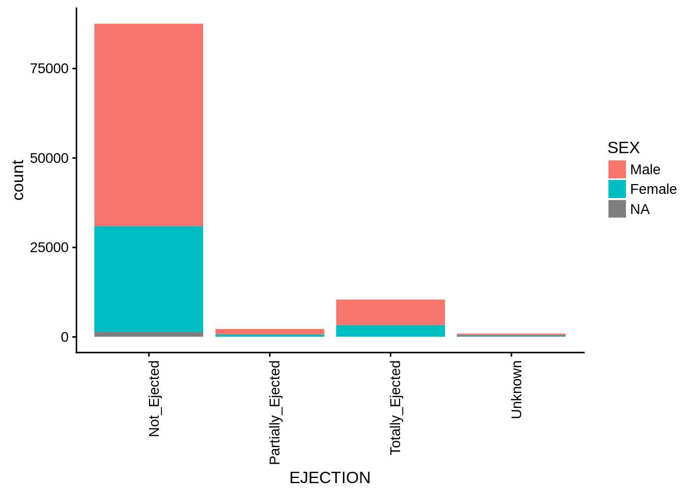
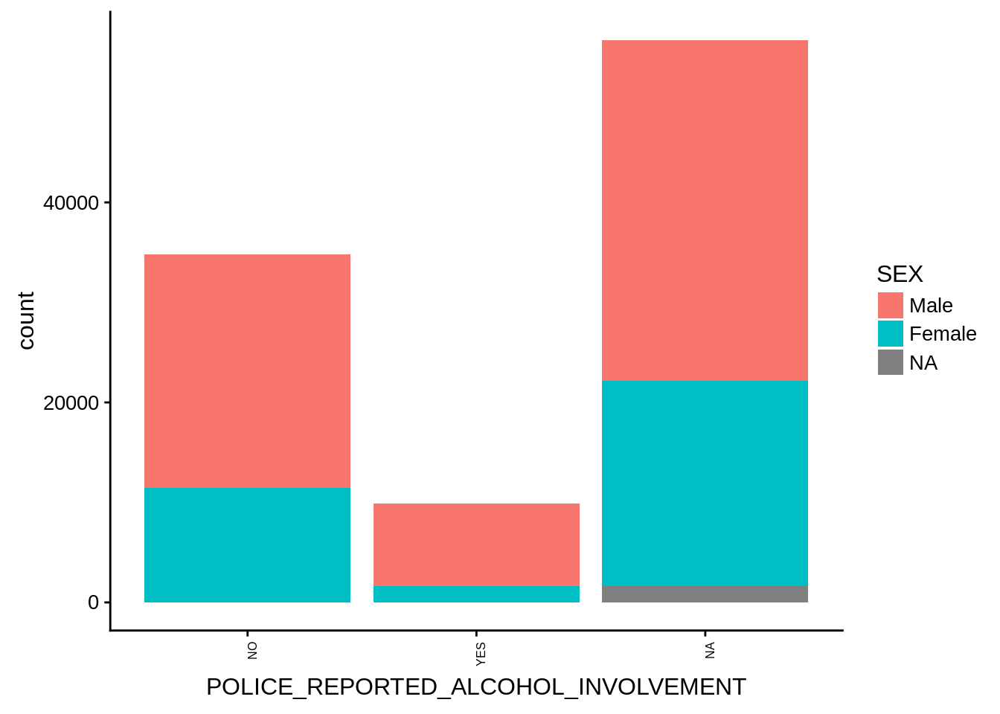
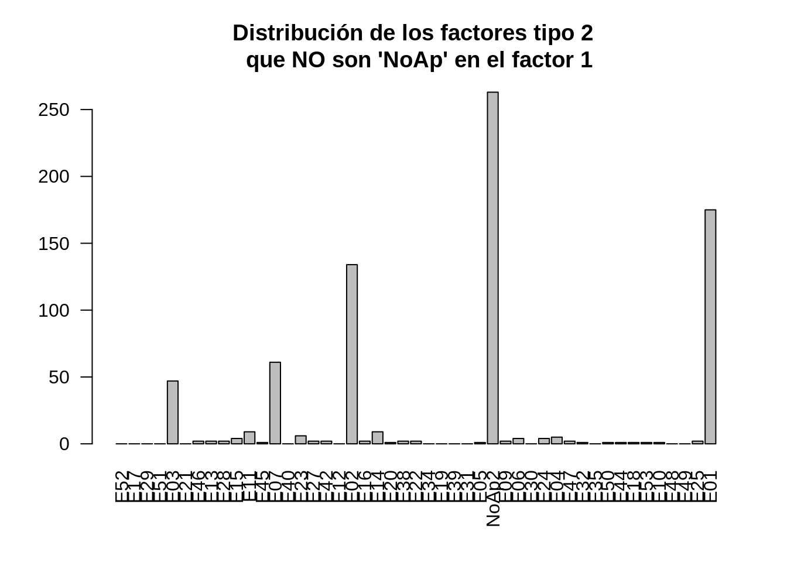

2 Análisis del dataset
Importamos librerias necesarias en el análisis
library(knitr)
library(Hmisc)
library(ggplot2)
library (MASS)
library(plyr)
library(dplyr)
library(VIM)
library(corrgram)
library(cowplot)
library(boot)
library(klaR)
library(kableExtra)
library(caret)
library(ROCR)
options(knitr.table.format = "html")
opts_chunk$set(tidy.opts=list(width.cutoff=60),tidy=TRUE)Carga de datos
fars=read.table(file=".//fars.dat",header = FALSE, sep=",", dec=".", skip = 34, check.names = TRUE, col.names = c("CASE_STATE","AGE","SEX","PERSON_TYPE","SEATING_POSITION","RESTRAINT_SYSTEM-USE","AIR_BAG_AVAILABILITY/DEPLOYMENT","EJECTION","EJECTION_PATH","EXTRICATION","NON_MOTORIST_LOCATION","POLICE_REPORTED_ALCOHOL_INVOLVEMENT","METHOD_ALCOHOL_DETERMINATION","ALCOHOL_TEST_TYPE","ALCOHOL_TEST_RESULT","POLICE-REPORTED_DRUG_INVOLVEMENT","METHOD_OF_DRUG_DETERMINATION","DRUG_TEST_TYPE","DRUG_TEST_RESULTS_(1_of_3)","DRUG_TEST_TYPE_(2_of_3)","DRUG_TEST_RESULTS_(2_of_3)","DRUG_TEST_TYPE_(3_of_3)","DRUG_TEST_RESULTS_(3_of_3)","HISPANIC_ORIGIN","TAKEN_TO_HOSPITAL","RELATED_FACTOR_(1)","RELATED_FACTOR_(2)","RELATED_FACTOR_(3)","RACE","INJURY_SEVERITY"),colClasses = NA)2.1 Descripción y significado de las variables:
| Variable | Significado |
|---|---|
| CASE_STATE | Estado americano donde se ha producido el accidente automovilístico. Variable cualitativa nominal. |
| AGE | Edad del implicado en el accidente. Variable cuantitativa discreta medida en años. |
| SEX | Sexo del implicado en el accidente. Variable cualitativa nominal. |
| PERSON_TYPE | Tipología del implicado en el accidente: conductor, pasajero, peaton, ciclista, etc. Variable cualitativa nominal. |
| SEATING_POSITION | Posición del implicado en el accidente dentro del vehiculo. Variable cualitativa nominal. |
| RESTRAINT_SYSTEM_USE | Uso de sistema de protección y/o retención del implicado en el accidente. Variable cualitativa nominal. |
| AIR_BAG_AVAILABILITY.DEPLOYMENT | Variable que describe la presencia y si se ha desplegado o no el airbag del vehículo. Variable cualitativa nominal |
| EJECTION | Describe si el implicado en el accidente ha sido expulsado del vehiculo y el grado de la expulsión. Variable cualitativa ordinal. |
| EJECTION_PATH | Variable que describe la trayectoria de la expulsión del vehiculo. Variable cualitativa nominal. |
| EXTRICATION | Variable que indica la excarcelación de dentro del vehiculo. Variable cualitativa nominal. |
| NON_MOTORIST_LOCATION | La localización de un viandante en el momento del impacto |
| POLICE_REPORTED_ALCOHOL_INVOLV. | Declaración de la policia sobre el consumo de alcohol por parte del implicado en el accidente. Variable cualitativa nominal |
| METHOD_ALCOHOL_DETERMINATION | Método de identificación de consumo previo de alcohol por parte de la policia. Variable cualitativa nominal. |
| ALCOHOL_TEST_TYPE | Tipo de test realizado (incluidos forense) para identificar el consumo de alcohol. Variable cualitativa nominal. |
| ALCOHOL_TEST_RESULT | Resutados del test de alcohol en sangre medido en “Milimoles de alcohol por un litro de sangre”. Variable cuantitativa discreta. |
| POLICE-REPORTED_DRUG_INVOLVEMENT | Declaración de la policia sobre el consumo de drogas por parte del implicado en el accidente. Variable cualitativa nominal |
| METHOD_OF_DRUG_DETERMINATION | Método de identificación de consumo previo de drogas por parte de la policia. Variable cualitativa nominal. |
| DRUG_TEST_TYPE | Tipo de test realizado, mencionado si se conoce. Variable cualitativa nominal. |
| DRUG_TEST_RESULTS_(1_of_3) | Resutados del test de drogas medido en “nanogramos por mililitro”. Variable cuantitativa discreta. |
| DRUG_TEST_TYPE_(2_of_3) | 2º tipo de test realizado, mencionado si se conoce. Variable cualitativa nominal. |
| DRUG_TEST_RESULTS_(2_of_3) | Resutados del test de drogas medido en “nanogramos por mililitro”. Variable cuantitativa discreta. |
| DRUG_TEST_TYPE_(3_of_3) | 3º tipo de test realizado, mencionado si se conoce. Variable cualitativa nominal. |
| DRUG_TEST_RESULTS_(3_of_3) | Resutados del test de drogas medido en “nanogramos por mililitro”. Variable cuantitativa discreta. |
| HISPANIC_ORIGIN | El origen hispano del implicado en el accidente. Variable cualitativa nominal. |
| TAKEN_TO_HOSPITAL | ¿Ha sido llevado o no el implicado en el accidente al hospital? |
| RELATED_FACTOR_(1) | Otros diversos factores relacionados con el accidente. Varaiable cualitativa nominal. |
| RELATED_FACTOR_(2) | Segunda descripción de factores relacionados con el accidente.Varaiable cualitativa nominal. |
| RELATED_FACTOR_(3) | Tercera descripción de factores relacionados con el accidente.Varaiable cualitativa nominal. |
| RACE | Raza del implicado en el accidente. Variable cualitativa nominal |
| INJURY_SEVERITY | Situación medica del implicado en el accidente. Varaiable cualitativa nominal. |
Análisis genérico del dataset
#la dimensión de los datos
dim(fars)## [1] 100968 30Realizamos un resumen de la tipología de las variables: factor, integer, etc.
#un resumen de la estructura de los objetos
str(fars)## 'data.frame': 100968 obs. of 30 variables:
## $ CASE_STATE : Factor w/ 51 levels "Alabama","Alaska",..: 1 1 1 1 1 1 1 1 1 1 ...
## $ AGE : int 34 20 43 38 50 40 50 69 94 47 ...
## $ SEX : Factor w/ 3 levels "Female","Male",..: 2 2 2 1 2 1 2 1 2 2 ...
## $ PERSON_TYPE : Factor w/ 10 levels "Bicyclist","Driver",..: 2 2 2 7 2 2 2 7 8 2 ...
## $ SEATING_POSITION : Factor w/ 26 levels "Fourth_Seat_-_Left_Side",..: 4 4 4 7 4 4 4 7 9 4 ...
## $ RESTRAINT_SYSTEM.USE : Factor w/ 12 levels "Bicycle_Helmet",..: 8 8 5 5 5 5 8 8 8 5 ...
## $ AIR_BAG_AVAILABILITY.DEPLOYMENT : Factor w/ 13 levels "Air_Bad_Available-Deployment_Not_Known_for_this_Seat",..: 3 8 5 5 8 5 5 5 12 5 ...
## $ EJECTION : Factor w/ 4 levels "Not_Ejected",..: 3 3 1 1 1 1 1 3 1 1 ...
## $ EJECTION_PATH : Factor w/ 10 levels "Not_Ejected/Not_Applicable",..: 10 10 1 1 1 1 1 10 1 1 ...
## $ EXTRICATION : Factor w/ 3 levels "Extricated","Not_Extricated",..: 2 2 1 1 2 2 2 2 2 2 ...
## $ NON_MOTORIST_LOCATION : Factor w/ 18 levels "Intersection_-_In_Crosswalk",..: 17 17 17 17 17 17 17 17 12 17 ...
## $ POLICE_REPORTED_ALCOHOL_INVOLVEMENT: Factor w/ 4 levels "No_(Alcohol_Not_Involved)",..: 4 1 1 2 4 1 1 2 1 1 ...
## $ METHOD_ALCOHOL_DETERMINATION : Factor w/ 7 levels "Behavioral","Evidential_Test_(Breath_Blood_Urine)",..: 3 3 3 3 3 3 3 3 3 3 ...
## $ ALCOHOL_TEST_TYPE : Factor w/ 10 levels "Blood_Clot","Blood_Plasma/Serum",..: 10 5 5 5 10 5 5 7 10 10 ...
## $ ALCOHOL_TEST_RESULT : int 97 96 96 96 97 96 96 99 97 0 ...
## $ POLICE.REPORTED_DRUG_INVOLVEMENT : Factor w/ 4 levels "Drugs_Involved",..: 4 2 2 3 4 2 2 3 4 4 ...
## $ METHOD_OF_DRUG_DETERMINATION : Factor w/ 5 levels "Behavioral","Drug_Recognition_Technician_(DRT)",..: 4 4 4 4 4 4 4 4 4 4 ...
## $ DRUG_TEST_TYPE : Factor w/ 7 levels "Blood_Test","Both:_Blood_and_Urine_(Since_1993)",..: 5 3 3 3 5 3 3 5 5 2 ...
## $ DRUG_TEST_RESULTS_.1_of_3. : int 999 0 0 0 999 0 0 999 999 1 ...
## $ DRUG_TEST_TYPE_.2_of_3. : Factor w/ 7 levels "Blood_Test","Both:_Blood_and_Urine_(Since_1993)",..: 3 3 3 3 3 3 3 3 3 3 ...
## $ DRUG_TEST_RESULTS_.2_of_3. : int 0 0 0 0 0 0 0 0 0 0 ...
## $ DRUG_TEST_TYPE_.3_of_3. : Factor w/ 7 levels "Blood_Test","Both:_Blood_and_Urine_(Since_1993)",..: 3 3 3 3 3 3 3 3 3 3 ...
## $ DRUG_TEST_RESULTS_.3_of_3. : int 0 0 0 0 0 0 0 0 0 0 ...
## $ HISPANIC_ORIGIN : Factor w/ 9 levels "Central_or_South_American",..: 6 6 6 7 6 7 7 6 6 7 ...
## $ TAKEN_TO_HOSPITAL : Factor w/ 3 levels "No","Unknown",..: 1 1 1 3 3 3 1 1 1 1 ...
## $ RELATED_FACTOR_.1. : Factor w/ 45 levels "Blind","Construction/Maintenance/Utility_Worker",..: 28 28 28 28 28 28 28 28 45 28 ...
## $ RELATED_FACTOR_.2. : Factor w/ 48 levels "Animals_in_Road",..: 30 30 30 30 30 30 30 30 30 30 ...
## $ RELATED_FACTOR_.3. : Factor w/ 33 levels "Blind","Building_Billboard_or_Other_Structures",..: 20 20 20 20 20 20 20 20 20 20 ...
## $ RACE : Factor w/ 18 levels "All_Other_Races",..: 18 18 5 12 5 12 12 5 18 12 ...
## $ INJURY_SEVERITY : Factor w/ 8 levels "Died_Prior_to_Accident",..: 2 2 2 3 2 3 5 2 2 5 ...Una descripción general de las variables
describe(fars)## fars
##
## 30 Variables 100968 Observations
## ---------------------------------------------------------------------------
## CASE_STATE
## n missing distinct
## 100968 0 51
##
## lowest : Alabama Alaska Arizona Arkansas California
## highest: Virginia Washington West_Virginia Wisconsin Wyoming
## ---------------------------------------------------------------------------
## AGE
## n missing distinct Info Mean Gmd .05 .10
## 100968 0 99 1 37.11 24.34 8 15
## .25 .50 .75 .90 .95
## 20 32 49 70 81
##
## lowest : 0 1 2 3 4, highest: 94 95 96 97 99
## ---------------------------------------------------------------------------
## SEX
## n missing distinct
## 100968 0 3
##
## Value Female Male Unknown
## Frequency 33573 65740 1655
## Proportion 0.333 0.651 0.016
## ---------------------------------------------------------------------------
## PERSON_TYPE
## n missing distinct
## 100968 0 10
##
## lowest : Bicyclist Driver Occupant_of_a_Motor_Vehicle_Not_in_Transport Occupant_of_a_Non-Motor_Vehicle_Transport_Device Other_Cyclist
## highest: Other_Pedestrian Passenger_of_a_Motor_Vehicle_in_Transport Pedestrian Unknown_Occupant_Type_in_a_Motor_Vehicle_in_Transport Unknown_Type_of_Non-Motorist
## ---------------------------------------------------------------------------
## SEATING_POSITION
## n missing distinct
## 100968 0 26
##
## lowest : Fourth_Seat_-_Left_Side Fourth_Seat_-_Middle Fourth_Seat_-_Right_Side Front_Seat_-_Left_Side_(Drivers_Side) Front_Seat_-_Middle
## highest: Third_Seat_-_Other Third_Seat_-_Right_Side Third_Seat_-_Unknown Trailing_Unit Unknown
## ---------------------------------------------------------------------------
## RESTRAINT_SYSTEM.USE
## n missing distinct
## 100968 0 12
##
## lowest : Bicycle_Helmet Child_Safety_Seat Child_Safety_Seat_Used_Improperly Helmets_Used_Improperly Lap_and_Shoulder_Belt
## highest: None_Used/Not_Applicable Restraint_Used_-_Type_Unknown Safety_Belt_Used_Improperly Shoulder_Belt Unknown
## ---------------------------------------------------------------------------
## AIR_BAG_AVAILABILITY.DEPLOYMENT
## n missing distinct
## 100968 0 13
##
## lowest : Air_Bad_Available-Deployment_Not_Known_for_this_Seat Air_Bag_Available_and_Switched_Off Air_Bag_Available_but_Not_Deployed_for_this_Seat Air_Bag_Disabled_or_Removed Air_Bag_Not_Available_for_this_Seat
## highest: Deployed_Air_Bag_from_Side Deployed_Air_Bag_Multiple_Directions Deployed_Air_Bag_Other_Direction Non-Motorist Unknown_(If_Airbag_Available)
## ---------------------------------------------------------------------------
## EJECTION
## n missing distinct
## 100968 0 4
##
## Value Not_Ejected Partially_Ejected Totally_Ejected
## Frequency 87475 2191 10410
## Proportion 0.866 0.022 0.103
##
## Value Unknown
## Frequency 892
## Proportion 0.009
## ---------------------------------------------------------------------------
## EJECTION_PATH
## n missing distinct
## 100968 0 10
##
## lowest : Not_Ejected/Not_Applicable Other_Path_(e.g._back_of_pickup) Through_Back_Door/Tailgate Through_Back_Window Through_Roof_(convertible_top_up)
## highest: Through_Roof_Opening Through_Side_Door_Opening Through_Side_Window Through_Windshield Unknown
## ---------------------------------------------------------------------------
## EXTRICATION
## n missing distinct
## 100968 0 3
##
## Value Extricated Not_Extricated Unknown
## Frequency 9826 89933 1209
## Proportion 0.097 0.891 0.012
## ---------------------------------------------------------------------------
## NON_MOTORIST_LOCATION
## n missing distinct
## 100968 0 18
##
## lowest : Intersection_-_In_Crosswalk Intersection_-_Not_on_Roadway Intersection_-_On_Roadway_Crosswalk_Availability_Unknown Intersection_-_On_Roadway_Crosswalk_not_Available Intersection_-_On_Roadway_Not_in_Crosswalk
## highest: Non-Intersection_-_Other_Not_a_Roadway Non-Intersection_-_Outside_Trafficway Non-Intersection_-_Unknown Not_Applicable_-_Vehicle_Occupant Unknown
## ---------------------------------------------------------------------------
## POLICE_REPORTED_ALCOHOL_INVOLVEMENT
## n missing distinct
## 100968 0 4
##
## Value No_(Alcohol_Not_Involved) Not_reported
## Frequency 34810 45448
## Proportion 0.345 0.450
##
## Value Unknown_(Police_Reported) Yes_(Alcohol_Involved)
## Frequency 10799 9911
## Proportion 0.107 0.098
## ---------------------------------------------------------------------------
## METHOD_ALCOHOL_DETERMINATION
## n missing distinct
## 100968 0 7
##
## Behavioral (359, 0.004), Evidential_Test_(Breath_Blood_Urine) (7335,
## 0.073), Not_Reported (84208, 0.834), Observed (7082, 0.070),
## Other_(e.g._Saliva_test) (1238, 0.012), Passive_Alcohol_Sensor_(PAS) (25,
## 0.000), Preliminary_Breath_Test_(PBT) (721, 0.007)
## ---------------------------------------------------------------------------
## ALCOHOL_TEST_TYPE
## n missing distinct
## 100968 0 10
##
## Blood_Clot (3, 0.000), Blood_Plasma/Serum (92, 0.001), Breath_BAC (1447,
## 0.014), Liver (18, 0.000), Not_Tested_for_Alcohol (55405, 0.549),
## Other_Test_Type (268, 0.003), Unknown(Not_Reported_Since_2001) (9810,
## 0.097), Urine (231, 0.002), Vitreous (144, 0.001), Whole_Blood (33550,
## 0.332)
## ---------------------------------------------------------------------------
## ALCOHOL_TEST_RESULT
## n missing distinct Info Mean Gmd .05 .10
## 100968 0 69 0.827 68.02 40.23 0 0
## .25 .50 .75 .90 .95
## 15 96 96 97 99
##
## lowest : 0 1 2 3 4, highest: 81 95 96 97 99
## ---------------------------------------------------------------------------
## POLICE.REPORTED_DRUG_INVOLVEMENT
## n missing distinct
## 100968 0 4
##
## Value Drugs_Involved No_Drugs Not_Reported
## Frequency 1626 18335 74725
## Proportion 0.016 0.182 0.740
##
## Value Reported_Unknown
## Frequency 6282
## Proportion 0.062
## ---------------------------------------------------------------------------
## METHOD_OF_DRUG_DETERMINATION
## n missing distinct
## 100968 0 5
##
## Behavioral (621, 0.006), Drug_Recognition_Technician_(DRT) (117, 0.001),
## Evidential_Test_(Blood_Urine) (2675, 0.026), Not_Reported (94794, 0.939),
## Other (2761, 0.027)
## ---------------------------------------------------------------------------
## DRUG_TEST_TYPE
## n missing distinct
## 100968 0 7
##
## Blood_Test (16153, 0.160), Both:_Blood_and_Urine_(Since_1993) (1422,
## 0.014), Not_Tested_for_Drugs (64072, 0.635), Other_Type_Test (240, 0.002),
## Unknown_if_Tested_for_Drugs (15805, 0.157), Unknown_Test_Type (1304,
## 0.013), Urine_Test (1972, 0.020)
## ---------------------------------------------------------------------------
## DRUG_TEST_RESULTS_.1_of_3.
## n missing distinct Info Mean Gmd .05 .10
## 100968 0 95 0.738 207.4 328.3 0 0
## .25 .50 .75 .90 .95
## 0 0 1 999 999
##
## lowest : 0 1 100 106 115, highest: 900 996 997 998 999
## ---------------------------------------------------------------------------
## DRUG_TEST_TYPE_.2_of_3.
## n missing distinct
## 100968 0 7
##
## Blood_Test (1743, 0.017), Both:_Blood_and_Urine_(Since_1993) (213, 0.002),
## Not_Tested_for_Drugs (89270, 0.884), Other_Type_Test (114, 0.001),
## Unknown_if_Tested_for_Drugs (9244, 0.092), Unknown_Test_Type (31, 0.000),
## Urine_Test (353, 0.003)
## ---------------------------------------------------------------------------
## DRUG_TEST_RESULTS_.2_of_3.
## n missing distinct Info Mean Gmd .05 .10
## 100968 0 73 0.308 100.1 180.1 0 0
## .25 .50 .75 .90 .95
## 0 0 0 417 999
##
## lowest : 0 1 100 117 128, highest: 900 996 997 998 999
## ---------------------------------------------------------------------------
## DRUG_TEST_TYPE_.3_of_3.
## n missing distinct
## 100968 0 7
##
## Blood_Test (1068, 0.011), Both:_Blood_and_Urine_(Since_1993) (84, 0.001),
## Not_Tested_for_Drugs (90394, 0.895), Other_Type_Test (46, 0.000),
## Unknown_if_Tested_for_Drugs (9248, 0.092), Unknown_Test_Type (11, 0.000),
## Urine_Test (117, 0.001)
## ---------------------------------------------------------------------------
## DRUG_TEST_RESULTS_.3_of_3.
## n missing distinct Info Mean Gmd .05 .10
## 100968 0 59 0.282 95.44 172.6 0 0
## .25 .50 .75 .90 .95
## 0 0 0 1 999
##
## lowest : 0 1 100 136 145, highest: 924 996 997 998 999
## ---------------------------------------------------------------------------
## HISPANIC_ORIGIN
## n missing distinct
## 100968 0 9
##
## Central_or_South_American (239, 0.002), Cuban (120, 0.001),
## European_Spanish (28, 0.000),
## Hispanic_-_Origin_Not_Specified_or_Other_Origin (290, 0.003), Mexican
## (1145, 0.011), Non-Hispanic (21836, 0.216),
## Not_a_Fatality_(Not_Applicable) (58686, 0.581), Puerto_Rican (153, 0.002),
## Unknown (18471, 0.183)
## ---------------------------------------------------------------------------
## TAKEN_TO_HOSPITAL
## n missing distinct
## 100968 0 3
##
## Value No Unknown Yes
## Frequency 46699 1914 52355
## Proportion 0.463 0.019 0.519
## ---------------------------------------------------------------------------
## RELATED_FACTOR_.1.
## n missing distinct
## 100968 0 45
##
## lowest : Blind Construction/Maintenance/Utility_Worker Darting_Stumbling_or_Running_into_Road Driving_on_Wrong_Side_of_Road Emotional_(e.g._Depression_Angry_Disputed)
## highest: Traveling_on_Prohibited_Trafficway Unknown Vision_obscured_by_overcorrecting Walking_With_Cane_or_Crutches Walking/Riding_with_or_Against_Traffic_Playing_Working_Sitting_Lying_Standing_etc._in_Roadway
## ---------------------------------------------------------------------------
## RELATED_FACTOR_.2.
## n missing distinct
## 100968 0 48
##
## lowest : Animals_in_Road Blind Construction/Maintenance/Utility_Worker Curve_Hill_Or_Other_Design_Features_(including_Traffic_signs_Embankment) Darting_Stumbling_or_Running_into_Road
## highest: Trees_Crops_Vegetation Unknown Vehicle_in_Road Walking_With_Cane_or_Crutches Walking/Riding_with_or_Against_Traffic_Playing_Working_Sitting_Lying_Standing_etc._in_Roadway
## ---------------------------------------------------------------------------
## RELATED_FACTOR_.3.
## n missing distinct
## 100968 0 33
##
## lowest : Blind Building_Billboard_or_Other_Structures Darting_Stumbling_or_Running_into_Road Driving_on_Wrong_Side_of_Road Driving_too_Fast_for_Conditions_or_in_Excess_of_Posted_Speed_Limit
## highest: Restricted_to_Wheelchair Traveling_on_Prohibited_Trafficway Unknown Walking_With_Cane_or_Crutches Walking/Riding_with_or_Against_Traffic_Playing_Working_Sitting_Lying_Standing_etc._in_Roadway
## ---------------------------------------------------------------------------
## RACE
## n missing distinct
## 100968 0 18
##
## lowest : All_Other_Races American_Indian_(_Includes_Aleuts_and_Eskimos) Asian_Indian Asian_or_Pacific_Islander_No_Specific_(Individual)_Race Black
## highest: Other_Indian_(Includes_South_and_Central_America) Samoan Unknown Vietnamese White
## ---------------------------------------------------------------------------
## INJURY_SEVERITY
## n missing distinct
## 100968 0 8
##
## Died_Prior_to_Accident (9, 0.000), Fatal_Injury (42116, 0.417),
## Incapaciting_Injury (15072, 0.149), Injured_Severity_Unknown (299, 0.003),
## No_Injury (20007, 0.198), Nonincapaciting_Evident_Injury (13890, 0.138),
## Possible_Injury (8674, 0.086), Unknown (901, 0.009)
## ---------------------------------------------------------------------------Para un mejor entendimiento de las variables las podemos visualizar en una tabla aparte.
2.2 Preparación de las variables
En esta sección analizaremos cada una de las variables que forman el dataset por separado, con el fin de darles el formato requerido para ser usadas en el modelo final de regresión.
Preparación de la variable INJURY_SEVERITY - la variable respuesta
df$INJURY_SEVERITY = mapvalues(df$INJURY_SEVERITY, from = c("Died_Prior_to_Accident", "Fatal_Injury", "Nonincapaciting_Evident_Injury","Possible_Injury","Incapaciting_Injury","No_Injury","Unknown","Injured_Severity_Unknown"), to = c("Died", "Died","Survived","Survived","Survived","Survived",NA,NA),warn_missing=F)
summary(df$INJURY_SEVERITY)## Died Survived NA's
## 42125 57643 1200Preparación de otras variables
# Preparation PERSON_TYPE (var 4)
df$PERSON_TYPE = mapvalues(df$PERSON_TYPE, from = c("Bicyclist", "Driver", "Occupant_of_a_Non-Motor_Vehicle_Transport_Device","Passenger_of_a_Motor_Vehicle_in_Transport","Other_Cyclist","Pedestrian","Occupant_of_a_Motor_Vehicle_Not_in_Transport","Other_Pedestrian","Unknown_Occupant_Type_in_a_Motor_Vehicle_in_Transport","Unknown_Type_of_Non-Motorist"), to = c("Bicyclist", "Driver","ONMotT","OMotT","Other_Cyclist","Pedestrian","OMotNT","Other_Pedestrian","UOT","UNM"),warn_missing=F)
# Preparation SEATING_POSITION (var 5)
df$SEATING_POSITION = mapvalues(df$SEATING_POSITION, from = c("Fourth_Seat_-_Left_Side", "Fourth_Seat_-_Right_Side" ,"Front_Seat_-_Right_Side","Non-Motorist","Riding_on_Vehicle_Exterior","Second_Seat_-_Middle","Sleeper_Section_of_Cab_(Truck)","Third_Seat_-_Middle","Third_Seat_-_Right_Side","Trailing_Unit","Fourth_Seat_-_Middle","Front_Seat_-_Left_Side_(Drivers_Side)","Front_Seat_-_Other","Front_Seat_-_Unknown","Other_Passenger_in_enclosed_passenger_or_cargo_area","Other_Passenger_in_unenclosed_passenger_or_cargo_area","Second_Seat_-_Left_Side","Second_Seat_-_Other","Second_Seat_-_Unknown","Third_Seat_-_Left_Side_(Drivers_Side)","Third_Seat_-_Other","Third_Seat_-_Unknown","Unknown","Front_Seat_-_Middle","Other_Passenger_in_passenger_or_cargo_area_(unknown_whether_or_not_enclosed)","Second_Seat_-_Right_Side"), to = c("FoL", "FoR","FrR","NMot","VE","SM","SlepCa","TM","TR","TU","FoM","FL", "FO","FU","OEC", "OUC","SL","SO","SU", "TL","TO","TU",NA,"FM","OPC","SR"),warn_missing=F)
# Preparation RESTRAINT_SYSTEM.USE (var 6)
df$RESTRAINT_SYSTEM.USE = mapvalues(df$RESTRAINT_SYSTEM.USE, from = c("None_Used/Not_Applicable", "Lap_and_Shoulder_Belt", "Motorcycle_Helmet","Child_Safety_Seat","Lap_Belt","Unknown","Helmets_Used_Improperly","Restraint_Used_-_Type_Unknown","Shoulder_Belt","Bicycle_Helmet","Child_Safety_Seat_Used_Improperly","Safety_Belt_Used_Improperly"), to = c("NA", "LSB","MH","CHS","LB",NA,"HUI","RUTU","SB","BH","CSSUI","SBUI"),warn_missing=F)
# Preparation AIR_BAG_AVAILABILITY.DEPLOYMENT (var 7)
df$AIR_BAG_AVAILABILITY.DEPLOYMENT = mapvalues(df$AIR_BAG_AVAILABILITY.DEPLOYMENT, from = c("Air_Bag_Available_but_Not_Deployed_for_this_Seat", "Deployed_Air_Bag_from_Front", "Air_Bag_Not_Available_for_this_Seat","Non-Motorist","Air_Bad_Available-Deployment_Not_Known_for_this_Seat","Air_Bag_Available_and_Switched_Off","Air_Bag_Previously_Deployed_and_not_Replaced","Deployed_Air_Bag_Direction_Unknown","Deployed_Air_Bag_Multiple_Directions","Deployed_Air_Bag_from_Side","Air_Bag_Disabled_or_Removed","Deployed_Air_Bag_Other_Direction","Unknown_(If_Airbag_Available)"), to = c("Av_nD", "D_F","NAv","NM","A_U","A_SO","A_PNR","D_DU","DA_MD","DA_fs","ADoR","D_OD",NA),warn_missing=F)
# Preparation EJECTION_PATH (var 9)
df$EJECTION_PATH = mapvalues(df$EJECTION_PATH, from = c("Unknown", "Not_Ejected/Not_Applicable", "Through_Windshield", "Other_Path_(e.g._back_of_pickup)", "Through_Roof_Opening", "Through_Side_Door_Opening", "Through_Side_Window", "Through_Back_Window", "Through_Roof_(convertible_top_up)", "Through_Back_Door/Tailgate" ), to = c(NA, "NoAp", "Wind","Other","Roof", "SideD", "SideW","BackW", "RoofC", "BackD"),warn_missing=F)
# Preparation NON_MOTORIST_LOCATION (var 11)
df$NON_MOTORIST_LOCATION = mapvalues(df$NON_MOTORIST_LOCATION, from = c("Not_Applicable_-_Vehicle_Occupant", "Non-Intersection_-_On_Roadway_Crosswalk_not_Available", "Non-Intersection_-_On_Roadway_Crosswalk_Availability_Unknown", "Non-Intersection_-_On_Roadway_Not_in_Crosswalk","Non-Intersection_-_On_Road_Shoulder","Intersection_-_In_Crosswalk","Intersection_-_On_Roadway_Crosswalk_Availability_Unknown", "Intersection_-_On_Roadway_Not_in_Crosswalk","Non-Intersection_-_Other_Not_a_Roadway", "Intersection_-_On_Roadway_Crosswalk_not_Available","Non-Intersection_-_Outside_Trafficway", "Intersection_-_Not_on_Roadway","Unknown", "Non-Intersection_-_In_Crosswalk", "Intersection_-_Unknown", "Non-Intersection_-_Unknown","Non-Intersection_-_In_Parking_Lane", "Non-Intersection_-_Bike_Path"), to = c("NoAp","NIRCNA","NIRCAU","NIRNC","NIRS", "IIC","IRCAU","IRNC","NIONR", "IRCNA", "NIOT", "INR", NA,"NIC","IU" ,"NIU","NIPL", "NIBP"),warn_missing=F)
# Preparation POLICE_REPORTED_ALCOHOL_INVOLVEMENT (var 12)
df$POLICE_REPORTED_ALCOHOL_INVOLVEMENT = mapvalues(df$POLICE_REPORTED_ALCOHOL_INVOLVEMENT, from = c("No_(Alcohol_Not_Involved)", "Yes_(Alcohol_Involved)", "Not_reported Unknown_(Police_Reported)"), to = c("NO","YES", NA),warn_missing=F)
# Preparation METHOD_ALCOHOL_DETERMINATION (var 13)
df$METHOD_ALCOHOL_DETERMINATION = mapvalues(df$METHOD_ALCOHOL_DETERMINATION, from = c("Behavioral", "Evidential_Test_(Breath_Blood_Urine)", "Not_Reported", "Observed","Other_(e.g._Saliva_test)", "Passive_Alcohol_Sensor_(PAS)", "Preliminary_Breath_Test_(PBT)"), to = c("BV","ET","NOAp", "OBS", "OTHER", "PAS", "PBT"),warn_missing=F)
# Preparation ALCOHOL_TEST_TYPE (var 14)
df$ALCOHOL_TEST_TYPE = mapvalues(df$ALCOHOL_TEST_TYPE, from = c("Blood_Clot", "Blood_Plasma/Serum", "Breath_BAC", "Liver", "Not_Tested_for_Alcohol", "Other_Test_Type", "Unknown(Not_Reported_Since_2001)", "Urine", "Vitreous", "Whole_Blood"), to = c("BC","BPS","BB", "L", "NoT", "OTHER", NA, "U", "V", "WB"),warn_missing=F)
# Preparation POLICE.REPORTED_DRUG_INVOLVEMENT (var 16)
df$POLICE.REPORTED_DRUG_INVOLVEMENT = mapvalues(df$POLICE.REPORTED_DRUG_INVOLVEMENT, from = c("Drugs_Involved", "No_Drugs", "Not_Reported", "Reported_Unknown"), to = c("Yes", "No","NoRep",NA),warn_missing=F)
# Preparation METHOD_OF_DRUG_DETERMINATION (var 17)
df$METHOD_OF_DRUG_DETERMINATION = mapvalues(df$METHOD_OF_DRUG_DETERMINATION, from = c("Behavioral", "Drug_Recognition_Technician_(DRT)", "Evidential_Test_(Blood_Urine)", "Not_Reported", "Other"), to = c("B", "DRT", "ET", "NoRep","Other"),warn_missing=F)
# Preparation DRUG_TEST_TYPE (var 18)
df$DRUG_TEST_TYPE = mapvalues(df$DRUG_TEST_TYPE, from = c("Blood_Test", "Both:_Blood_and_Urine_(Since_1993)", "Not_Tested_for_Drugs", "Other_Type_Test", "Unknown_if_Tested_for_Drugs", "Unknown_Test_Type", "Urine_Test"), to = c("Btest", "BUtest", "no_test", "Xtest",NA,"Xtest","Utest"),warn_missing=F)
# Preparation DRUG_TEST_TYPE_.2_of_3. (var 20)
df$DRUG_TEST_TYPE_.2_of_3. = mapvalues(df$DRUG_TEST_TYPE_.2_of_3., from = c("Blood_Test", "Both:_Blood_and_Urine_(Since_1993)", "Not_Tested_for_Drugs","Other_Type_Test","Unknown_if_Tested_for_Drugs","Unknown_Test_Type","Urine_Test"), to = c("Btest", "BUtest","no_test","Xtest",NA,"Xtest","Utest"),warn_missing=F)
# Preparation DRUG_TEST_TYPE_.3_of_3. (var 22)
df$DRUG_TEST_TYPE_.3_of_3. = mapvalues(df$DRUG_TEST_TYPE_.3_of_3., from = c("Blood_Test", "Both:_Blood_and_Urine_(Since_1993)", "Not_Tested_for_Drugs","Other_Type_Test","Unknown_if_Tested_for_Drugs","Unknown_Test_Type","Urine_Test"), to = c("Btest", "BUtest","no_test","Xtest",NA,"Xtest","Utest"),warn_missing=F)
# Preparation HISPANIC_ORIGIN (var 24)
df$HISPANIC_ORIGIN = mapvalues(df$HISPANIC_ORIGIN, from = c("Central_or_South_American", "Hispanic_-_Origin_Not_Specified_or_Other_Origin", "Not_a_Fatality_(Not_Applicable)","Cuban","Mexican","Puerto_Rican","European_Spanish","Non-Hispanic","Unknown"), to = c("CeSouAme", "Hisp - Unknown",NA,"Cuban","Mexican","Puerto_Rican","European_Spanish","Non-Hispanic",NA),warn_missing=F)
# Preparation RELATED_FACTOR_.1. (var 26)
df$RELATED_FACTOR_.1. = mapvalues(df$RELATED_FACTOR_.1., from = c("Not_Applicable_-_Driver/None_-_All_Other_Persons", "Walking/Riding_with_or_Against_Traffic_Playing_Working_Sitting_Lying_Standing_etc._in_Roadway", "Improper_Crossing_or_Roadway_or_Intersection", "Unknown", "Darting_Stumbling_or_Running_into_Road","Other_Physical_Impairment", "Non-Motorist_Pushing_a_Vehicle", "Opening_Vehicle_Closure_into_Moving_Traffic_or_While_Vehicle_is_in_Motion", "Failure_to_Yield_Right_of_Way", "Locked_Wheel", "Not_Visible", "Traveling_on_Prohibited_Trafficway", "Failure_to_Obey_Traffic_Signs_Traffic_Control_Devices_or_Traffic_Officers_Failure_to_Observe_Safety_Zone_Traffic_Laws","Impaired_Due_to_Previous_Injury","Emotional_(e.g._Depression_Angry_Disputed)", "Inattentive_(talking_Eating_etc)", "Failure_to_Keep_in_Proper_Lane", "Improper_or_Erratic_Lane_Changing","Blind", "Restricted_to_Wheelchair", "Mother_of_Dead_Fetus", "Interfering_with_Driver", "Driving_on_Wrong_Side_of_Road","Making_Improper_Turn", "Getting_Off/Out_of_or_On/In_to_Moving_Transport_Vehicle", "Operating_without_Required_Equipment", "Walking_With_Cane_or_Crutches", "Passing_with_Insufficient_Distance_or_Inadequate_Visibility_or_Failing_to_Yield_to_Overtaking_Vehicle","Getting_Off/Out_of_or_On/In_to_Non-Moving_Transport_Vehicle", "Failing_to_Dim_Lights_or_Have_Lights_on_When_Required", "Construction/Maintenance/Utility_Worker", "Operating_the_Vehicle_in_Other_Erratic_Reckless_Careless_or_Negligent_Manner_[or_Operating_at_Erratic_or_Suddenly_Changing_Speeds", "Motorized_Wheelchair_Rider", "Passed_OutBlackout", "Illegal_Driving_on_Road_Shoulder_in_Ditch_on_Sidewalk_on_Median", "Mentally_Challenged", "Pedestrian_NON-MOTOR_VEHICLE_OPERATOR_RELATED_FACTORS:", "Vision_obscured_by_overcorrecting", "Operator_Inexperience", "Making_Improper_Entry_to_or_Exit_from_Trafficway", "Motor_Vehicle_(including_load)", "Following_Improperly", "Passing_on_Wrong_Side","Head_Restraints_AVOIDING_SWERVING_OR_SLIDING_DUE_TO", "Slippery_or_Loose_Surface"),
to = c("NoAp","F01", "F02", "F03",NA,"F04","F05", "F06","F07","F08", "F09", "F10", "F11", "F12", "F13","F14","F15","F16","F17","F18","F19","F20","F21", "F22", "F23","F24","F25", "F26","F27","F28","F29","F30","F31", "F32", "F33","F34","F35","F36","F37","F38","F39","F40","F41","F42", "F43"),warn_missing=F)
# Preparation RELATED_FACTOR_.2. (var 27)
df$RELATED_FACTOR_.2. = mapvalues(df$RELATED_FACTOR_.2., from = c("Not_Applicable_-_Driver/None_-_All_Other_Persons", "Walking/Riding_with_or_Against_Traffic_Playing_Working_Sitting_Lying_Standing_etc._in_Roadway", "Improper_Crossing_or_Roadway_or_Intersection", "Unknown", "Darting_Stumbling_or_Running_into_Road","Other_Physical_Impairment", "Non-Motorist_Pushing_a_Vehicle", "Opening_Vehicle_Closure_into_Moving_Traffic_or_While_Vehicle_is_in_Motion", "Failure_to_Yield_Right_of_Way", "Not_Visible", "Traveling_on_Prohibited_Trafficway", "Failure_to_Obey_Traffic_Signs_Traffic_Control_Devices_or_Traffic_Officers_Failure_to_Observe_Safety_Zone_Traffic_Laws","Impaired_Due_to_Previous_Injury","Emotional_(e.g._Depression_Angry_Disputed)", "Inattentive_(talking_Eating_etc)", "Failure_to_Keep_in_Proper_Lane", "Improper_or_Erratic_Lane_Changing","Blind", "Restricted_to_Wheelchair", "Mother_of_Dead_Fetus", "Interfering_with_Driver", "Driving_on_Wrong_Side_of_Road","Making_Improper_Turn", "Getting_Off/Out_of_or_On/In_to_Moving_Transport_Vehicle", "Operating_without_Required_Equipment", "Walking_With_Cane_or_Crutches", "Getting_Off/Out_of_or_On/In_to_Non-Moving_Transport_Vehicle", "Failing_to_Dim_Lights_or_Have_Lights_on_When_Required", "Construction/Maintenance/Utility_Worker", "Operating_the_Vehicle_in_Other_Erratic_Reckless_Careless_or_Negligent_Manner_[or_Operating_at_Erratic_or_Suddenly_Changing_Speeds", "Motorized_Wheelchair_Rider", "Passed_OutBlackout", "Mentally_Challenged", "Pedestrian_NON-MOTOR_VEHICLE_OPERATOR_RELATED_FACTORS:", "Making_Improper_Entry_to_or_Exit_from_Trafficway", "Motor_Vehicle_(including_load)", "Following_Improperly","Head_Restraints_AVOIDING_SWERVING_OR_SLIDING_DUE_TO", "Reflected_Glare_Bright_Sunlight_Headlights","Failure_to_Observe_Warnings_or_Instructions_on_Vehicles_Displaying_Them", "Driving_too_Fast_for_Conditions_or_in_Excess_of_Posted_Speed_Limit", "Parked_Vehicle", "Trees_Crops_Vegetation", "Vehicle_in_Road", "Rain_Snow_Fog_Smoke_Sand_Dust", "Curve_Hill_Or_Other_Design_Features_(including_Traffic_signs_Embankment)", "Animals_in_Road", "Ruts_Holes_Bumps_in_Road"),
to = c("NoAp2","E01", "E02",NA, "E03","E04","E05","E06","E07","E09","E10","E11", "E12", "E13","E14","E15","E16","E17","E18","E19","E20","E21", "E22", "E23","E24","E25","E27","E28","E29","E30","E31", "E32", "E34","E35","E38","E39","E40","E42", "E44","E45", "E46","E47","E48","E49","E50","E51","E52","E53"),warn_missing=F)
# Preparation RELATED_FACTOR_.3. (var 28)
df$RELATED_FACTOR_.3. = mapvalues(df$RELATED_FACTOR_.3., from = c("Not_Applicable_-_Driver/None_-_All_Other_Persons", "Walking/Riding_with_or_Against_Traffic_Playing_Working_Sitting_Lying_Standing_etc._in_Roadway", "Improper_Crossing_or_Roadway_or_Intersection", "Unknown", "Darting_Stumbling_or_Running_into_Road","Other_Physical_Impairment", "Non-Motorist_Pushing_a_Vehicle", "Failure_to_Yield_Right_of_Way", "Not_Visible", "Traveling_on_Prohibited_Trafficway", "Failure_to_Obey_Traffic_Signs_Traffic_Control_Devices_or_Traffic_Officers_Failure_to_Observe_Safety_Zone_Traffic_Laws","Impaired_Due_to_Previous_Injury","Emotional_(e.g._Depression_Angry_Disputed)", "Inattentive_(talking_Eating_etc)", "Failure_to_Keep_in_Proper_Lane", "Improper_or_Erratic_Lane_Changing","Blind", "Restricted_to_Wheelchair", "Driving_on_Wrong_Side_of_Road","Making_Improper_Turn", "Getting_Off/Out_of_or_On/In_to_Moving_Transport_Vehicle", "Operating_without_Required_Equipment", "Walking_With_Cane_or_Crutches", "Getting_Off/Out_of_or_On/In_to_Non-Moving_Transport_Vehicle", "Passed_OutBlackout", "Mentally_Challenged", "Pedestrian_NON-MOTOR_VEHICLE_OPERATOR_RELATED_FACTORS:", "Motor_Vehicle_(including_load)", "Reflected_Glare_Bright_Sunlight_Headlights","Driving_too_Fast_for_Conditions_or_in_Excess_of_Posted_Speed_Limit", "Parked_Vehicle", "Rain_Snow_Fog_Smoke_Sand_Dust", "Building_Billboard_or_Other_Structures"),
to = c("NoAp3","G01", "G02",NA, "G03","G04","G05","G07","G09","G10","G11", "G12", "G13","G14","G15","G16","G17","G18","G21", "G22", "G23","G24","G25","G27","G32", "G34","G35","G39", "G44", "G46","G47","G50","G54"),warn_missing=F)
# Preparation RACE (var 29)
df$RACE = mapvalues(df$RACE, from = c("White", "Black", "Not_a_Fatality_(Not_Applicable)", "Unknown", "American_Indian_(_Includes_Aleuts_and_Eskimos)", "Filipino", "Other_Asian_or_Pacific_Islander", "All_Other_Races", "Asian_or_Pacific_Islander_No_Specific_(Individual)_Race", "Chinese", "Asian_Indian", "Vietnamese", "Korean", "Other_Indian_(Includes_South_and_Central_America)", "Multiple_Races_(Individual_races_not_specified;_ex._mixed)", "Japanese", "Hawaiian_(Includes_part-Hawaiian)", "Samoan"), to = c("W", "B","NoAp", NA,"AmI", "Fil", "OAsian",NA,"AsianPac", "Chi", "AsianInd", "Viet", "Kor", "OInd", "MRace", "Jap", "Haw", "Samoa"),warn_missing=F)2.3 Análisis individual de variables
2.3.1 Análisis CASE_STATE
# Obtenemos la información resumen
summary(df$CASE_STATE)## Alabama Alaska Arizona
## 2271 208 2875
## Arkansas California Colorado
## 1421 10151 1766
## Connecticut Delaware District_of_Columbia
## 696 337 200
## Florida Georgia Hawaii
## 7738 4030 333
## Idaho Illinois Indiana
## 660 3407 2089
## Iowa Kansas Kentucky
## 1017 1053 1914
## Louisiana Maine Maryland
## 2249 454 1538
## Massachusetts Michigan Minnesota
## 1051 3280 1364
## Mississippi Missouri Montana
## 1629 2495 473
## Nebraska Nevada New_Hampshire
## 633 818 322
## New_Jersey New_Mexico New_York
## 1835 1122 3765
## North_Carolina North_Dakota Ohio
## 3607 208 3144
## Oklahoma Oregon Pennsylvania
## 1573 1111 3558
## Rhode_Island South_Carolina South_Dakota
## 207 2362 403
## Tennessee Texas Utah
## 2859 9231 735
## Vermont Virginia Washington
## 190 2101 1552
## West_Virginia Wisconsin Wyoming
## 862 1679 392unique(df$CASE_STATE)## [1] Alabama Alaska Arizona
## [4] Arkansas California Colorado
## [7] Connecticut Delaware District_of_Columbia
## [10] Florida Georgia Hawaii
## [13] Idaho Illinois Indiana
## [16] Iowa Kansas Kentucky
## [19] Louisiana Maine Maryland
## [22] Massachusetts Michigan Minnesota
## [25] Mississippi Missouri Montana
## [28] Nebraska Nevada New_Hampshire
## [31] New_Jersey New_Mexico New_York
## [34] North_Carolina North_Dakota Ohio
## [37] Oklahoma Oregon Pennsylvania
## [40] Rhode_Island South_Carolina South_Dakota
## [43] Tennessee Texas Utah
## [46] Vermont Virginia Washington
## [49] West_Virginia Wisconsin Wyoming
## 51 Levels: Alabama Alaska Arizona Arkansas California ... Wyoming# Estados con mayor y menor número de supervivientes
result1 = df %>%
dplyr::select(CASE_STATE,INJURY_SEVERITY) %>%
filter(INJURY_SEVERITY=="Died") %>%
group_by(CASE_STATE) %>%
dplyr::summarise(n= n()) %>% arrange(desc(n))
summary(result1)## CASE_STATE n
## Alabama : 1 Min. : 68.0
## Alaska : 1 1st Qu.: 252.5
## Arizona : 1 Median : 649.0
## Arkansas : 1 Mean : 826.0
## California: 1 3rd Qu.:1054.0
## Colorado : 1 Max. :3957.0
## (Other) :45cat("\n*****************************************\n")##
## *****************************************# Estado con mayor y menor número de supervivientes
result2=df %>%
dplyr::select(CASE_STATE,INJURY_SEVERITY) %>%
filter(INJURY_SEVERITY=="Survived") %>%
group_by(CASE_STATE) %>%
dplyr::summarise(n= n()) %>% arrange(desc(n))
summary(result2)## CASE_STATE n
## Alabama : 1 Min. : 98
## Alaska : 1 1st Qu.: 381
## Arizona : 1 Median : 845
## Arkansas : 1 Mean :1130
## California: 1 3rd Qu.:1334
## Colorado : 1 Max. :6031
## (Other) :45Estados con mayor tasa de mortalidad: California, Texas y Florida y con menor: Distrito de Colombia, Rhode_Island y Alaska Estados con mayor accidentes de que produce baja injury: California, Texas y New York y con menor: Vermont, North_Dakota, Wyoming
#estudio de la correlación
chisq.test(df$INJURY_SEVERITY, df$CASE_STATE)##
## Pearson's Chi-squared test
##
## data: df$INJURY_SEVERITY and df$CASE_STATE
## X-squared = 248.78, df = 50, p-value < 2.2e-16z=table(df$CASE_STATE,df$INJURY_SEVERITY)
porcentajes=z[,2]/apply(z,1,sum)
sort(porcentajes)## North_Dakota Montana Vermont
## 0.4951923 0.5085470 0.5157895
## Mississippi Wyoming Kansas
## 0.5187231 0.5230769 0.5304183
## New_Hampshire Massachusetts Wisconsin
## 0.5387097 0.5404624 0.5427376
## New_Jersey Hawaii Pennsylvania
## 0.5444580 0.5454545 0.5458321
## Connecticut South_Carolina Virginia
## 0.5458515 0.5491699 0.5536993
## Missouri Ohio Kentucky
## 0.5567218 0.5574823 0.5578231
## Oregon Tennessee Iowa
## 0.5583710 0.5602812 0.5604720
## Alabama West_Virginia Indiana
## 0.5617284 0.5632985 0.5646552
## Maryland Arkansas Oklahoma
## 0.5663601 0.5691114 0.5702479
## North_Carolina Louisiana South_Dakota
## 0.5725063 0.5739169 0.5756824
## Maine Colorado Minnesota
## 0.5770925 0.5787064 0.5798817
## New_Mexico Washington Alaska
## 0.5802357 0.5812903 0.5833333
## New_York Illinois Texas
## 0.5836022 0.5843126 0.5914427
## Michigan Delaware Georgia
## 0.5923880 0.5952381 0.5963509
## Utah California Idaho
## 0.6016371 0.6038246 0.6075758
## Rhode_Island Florida Nebraska
## 0.6086957 0.6100751 0.6113744
## Nevada Arizona District_of_Columbia
## 0.6135802 0.6192377 0.6344086hist(porcentajes)2.3.2 Análisis AGE
Esta variable identifica la edad de la persona en el momento del accidente en años. En particular puede tomar los siguientes valores enteros:
## [1] 0 1 2 3 4 5 6 7 8 9 10 11 12 13 14 15 16 17 18 19 20 21 22
## [24] 23 24 25 26 27 28 29 30 31 32 33 34 35 36 37 38 39 40 41 42 43 44 45
## [47] 46 47 48 49 50 51 52 53 54 55 56 57 58 59 60 61 62 63 64 65 66 67 68
## [70] 69 70 71 72 73 74 75 76 77 78 79 80 81 82 83 84 85 86 87 88 89 90 91
## [93] 92 93 94 95 96 97 99# Obteniendo medidas resumen de variable en cuestión
summary(df$AGE)## Min. 1st Qu. Median Mean 3rd Qu. Max.
## 0.00 20.00 32.00 37.11 49.00 99.00ggplot(df, aes(INJURY_SEVERITY,AGE) ) + geom_point() + geom_boxplot() + theme(axis.text.x = element_text(angle = 90, hjust = 1))ggplot(df, aes(x=AGE, colour=SEX)) +
geom_density() +
ggtitle("Relation age with injury")# Comparación con otras variables
ggplot(df, aes(x=AGE, colour=ALCOHOL_TEST_RESULT)) +
geom_density() +
ggtitle("Comparative AGE with ALCOHOL TEST RESULT")# Todos los usuarios con sexo desconocido tienen edad 99 años, lo cual implica que seguramente sean valores faltantes
quantile(df[df$SEX=='Unknown',]$AGE , c(.01)) ## 1%
## 14.54describe(df[df$SEX=='Unknown',]$AGE)## df[df$SEX == "Unknown", ]$AGE
## n missing distinct Info Mean Gmd .05 .10
## 1655 0 26 0.062 97.39 3.172 99 99
## .25 .50 .75 .90 .95
## 99 99 99 99 99
##
## lowest : 0 1 2 3 4, highest: 51 52 61 86 99describe(df[fars$INJURY_SEVERITY=='Unknown',]$AGE)## df[fars$INJURY_SEVERITY == "Unknown", ]$AGE
## n missing distinct Info Mean Gmd .05 .10
## 901 0 56 0.428 86.92 20.58 19 28
## .25 .50 .75 .90 .95
## 99 99 99 99 99
##
## lowest : 0 1 2 3 4, highest: 67 74 75 90 99# El 84% de las filas con edad 99 tienen la variable INJURI_SEVERITY a Unknown
quantile(df[fars$INJURY_SEVERITY=='Unknown',]$AGE , 0.16) ## 16%
## 56# Posibles filas con valores desconocidos (comentado)
#df[df$SEX=='Unknown' & df$AGE==99 & df$INJURY_SEVERITY==NA,]
# Consideramos que todos los que tienen edad 99 son NA
df$AGE[which(df$AGE == 99)] <-NA
describe(df$AGE)## df$AGE
## n missing distinct Info Mean Gmd .05 .10
## 98416 2552 98 1 35.5 22.32 8 15
## .25 .50 .75 .90 .95
## 20 32 48 66 76
##
## lowest : 0 1 2 3 4, highest: 93 94 95 96 97# VALORES FALTANTES: 2,5%
p1 <- ggplot(df, aes( PERSON_TYPE, AGE)) +
geom_point() + geom_boxplot() + theme(axis.text.x = element_text(angle = 90, hjust = 1, size=6))
p2 <- ggplot(df, aes( SEX, AGE)) +
geom_point() + geom_boxplot() + theme(axis.text.x = element_text(angle = 90, hjust = 1, size=6))
p3 <- ggplot(df, aes(RESTRAINT_SYSTEM.USE , AGE)) +
geom_point() + geom_boxplot() + theme(axis.text.x = element_text(angle = 90, hjust = 1, size=6))
p4 <- ggplot(df, aes(SEATING_POSITION, AGE)) +
geom_point() + geom_boxplot() + theme(axis.text.x = element_text(angle = 90, hjust = 1, size=6))
p5 <- ggplot(df, aes(HISPANIC_ORIGIN,AGE) ) + geom_point() + geom_boxplot() + theme(axis.text.x = element_text(size=5,angle = 90, hjust = 1))
p6 <- ggplot(df, aes(EJECTION,AGE) ) + geom_point() + geom_boxplot() + theme(axis.text.x = element_text(size=5,angle = 90, hjust = 1))
theme_set(theme_cowplot(font_size=12))
plot_grid(p3,p1,p2,p4,p5,p6,
rel_widths=c(25,25),rel_heights=c(80,50), label_size = 10,
ncol = 2, nrow = 2)plot_grid(p5,p6,
rel_widths=c(25,25),rel_heights=c(80,50), label_size = 10,
ncol = 2, nrow = 1)#estudio de la correlación
chisq.test(df$INJURY_SEVERITY, df$AGE)##
## Pearson's Chi-squared test
##
## data: df$INJURY_SEVERITY and df$AGE
## X-squared = 4238.8, df = 97, p-value < 2.2e-16Como se puede observar existe un gran número de valores con edad 99 y como describimos anteriormente, se corresponden con el valor Unknown. También se puede comprobar que no existen accidentes para la edad igual a 98, como indica la información consultada, y que el número de accidentados con edades superiores o iguales a 97 es muy bajo. El número máximo de accidentes se da para conductores en el rango entre los 17 y los 21 años, lo que se corresponde a conductores noveles. También se observa un repunte en el número de accidentes para conductores más expertos entre los 35 y lo 42 años.
2.3.3 Análisis SEX
Esta variable identifica el sexo de la persona involucrada en el accidente. Esta variable puede tomar los valores
summary(df$SEX)## Female Male Unknown
## 33573 65740 1655# Limpieza de datos
df$SEX = factor(df$SEX, levels = (c("Male","Female")))
p1 <- ggplot(df, aes(PERSON_TYPE,fill=SEX) ) + geom_bar(stat="count") + theme(axis.text.x = element_text(angle = 90, hjust = 1))
p3 <- ggplot(df, aes(SEATING_POSITION,fill=SEX) ) + geom_bar(stat="count") + theme(legend.position="none", axis.text.x = element_text(size=6, angle = 90, hjust = 1))
p4 <- ggplot(df, aes(HISPANIC_ORIGIN,fill=SEX) ) + geom_bar(stat="count") + theme(legend.position="none", axis.text.x = element_text(angle = 90, hjust = 1))
legend <- get_legend(p1)
prow <- plot_grid(p1 + theme(legend.position="none"),p3+theme(legend.position="none"),p4+theme(legend.position="none"),p5+theme(legend.position="none"),
rel_widths=c(35,45),rel_heights=c(80,80), label_size = 10,
ncol = 2, nrow = 2)## Warning: Removed 2552 rows containing non-finite values (stat_boxplot).## Warning: Removed 2552 rows containing missing values (geom_point).plot_grid( prow, legend, rel_widths = c(3, .3))# Comparación con otras variables
ggplot(df, aes(ALCOHOL_TEST_RESULT,fill=SEX) ) + geom_bar(stat="count") + theme(axis.text.x = element_text(angle = 90, hjust = 1))ggplot(df, aes(RESTRAINT_SYSTEM.USE,fill=SEX) ) + geom_bar(stat="count") + theme(axis.text.x = element_text(angle = 90, hjust = 1))ggplot(df, aes(EJECTION,fill=SEX) ) + geom_bar(stat="count") + theme(axis.text.x = element_text(angle = 90, hjust = 1))
Como se puede observar la mayor proporción de accidentes se producen en hombres (65740) que duplican al número de los femeninos (33573). También existe un pequeño número de valores indeterminados (1655).Además los hombres son los que tienen mayor rango de accidentes con muerte
También analizamos la relación entre el número de accidentes y la edad y sexo del accidentado. Esta gráfica muestra que a partir de la edad en la que una persona puede conducir, los 16 años, el número de accidentes es siempre mayor en el caso de los hombres.
En la siguiente gráfica mostramos una gráfica de densidades, lo que nos permite comparar directamente los accidentes por edades y sexo. Como se puede observar en la siguiente gráfica la siniestralidad de las mujeres es menor para las mujeres menores de 37 años. En el rango entre 38 y 60 años la comparación entre hombres y mujeres es similar. Para edades superiores a los 60 años, las mujeres superan a los hombres en el número de accidentes.
Podemos calcular la edad media de los afectados por una accidente de tráfico en función de su sexo: Como se puede observar la edad media de los hombres y mujeres que se vieron involucrados en un accidente es muy similar.
#estudio de la correlación
chisq.test(df$INJURY_SEVERITY, df$SEX)##
## Pearson's Chi-squared test with Yates' continuity correction
##
## data: df$INJURY_SEVERITY and df$SEX
## X-squared = 208.96, df = 1, p-value < 2.2e-162.3.4 Análisis PERSON_TYPE
Esta variable describe el papel de la persona involucrada en el accidente. Esta variable puede tomar los siguiente valores
# Valores existentes
describe(df$PERSON_TYPE)## df$PERSON_TYPE
## n missing distinct
## 100968 0 10
##
## Bicyclist (744, 0.007), Driver (57480, 0.569), OMotNT (225, 0.002), ONMotT
## (34, 0.000), Other_Cyclist (3, 0.000), Other_Pedestrian (103, 0.001),
## OMotT (36812, 0.365), Pedestrian (5331, 0.053), UOT (234, 0.002), UNM (2,
## 0.000)# Reordenación de variables
df$PERSON_TYPE = factor(df$PERSON_TYPE, levels = (c("Driver",
"OMotT", "Pedestrian","Bicyclist","UOT","OMotNT","ONMotT","Other_Cyclist","Other_Pedestrian","UNM")))
# Regresión logistica con respecto a grado de afecto
mylogit4 = glm(INJURY_SEVERITY~PERSON_TYPE , data = df, family = "binomial")
summary(mylogit4)##
## Call:
## glm(formula = INJURY_SEVERITY ~ PERSON_TYPE, family = "binomial",
## data = df)
##
## Deviance Residuals:
## Min 1Q Median 3Q Max
## -1.9594 -1.2527 0.8213 1.1039 2.7084
##
## Coefficients:
## Estimate Std. Error z value Pr(>|z|)
## (Intercept) 0.175281 0.008435 20.779 < 2e-16 ***
## PERSON_TYPEOMotT 0.738171 0.014330 51.514 < 2e-16 ***
## PERSON_TYPEPedestrian -2.584092 0.050536 -51.134 < 2e-16 ***
## PERSON_TYPEBicyclist -3.817014 0.232555 -16.413 < 2e-16 ***
## PERSON_TYPEUOT -0.128761 0.136696 -0.942 0.346
## PERSON_TYPEOMotNT 1.585706 0.188633 8.406 < 2e-16 ***
## PERSON_TYPEONMotT 0.181393 0.348568 0.520 0.603
## PERSON_TYPEOther_Cyclist -9.741239 41.836449 -0.233 0.816
## PERSON_TYPEOther_Pedestrian -1.064544 0.217033 -4.905 9.34e-07 ***
## PERSON_TYPEUNM 9.390676 51.238976 0.183 0.855
## ---
## Signif. codes: 0 '***' 0.001 '**' 0.01 '*' 0.05 '.' 0.1 ' ' 1
##
## (Dispersion parameter for binomial family taken to be 1)
##
## Null deviance: 135884 on 99767 degrees of freedom
## Residual deviance: 125641 on 99758 degrees of freedom
## (1200 observations deleted due to missingness)
## AIC: 125661
##
## Number of Fisher Scoring iterations: 8# En función a los valores resultantes de la regresión y el número de valores de cada variable hacemos la siguiente reorganización.
df$PERSON_TYPE = plyr::mapvalues(df$PERSON_TYPE, from = c("Bicyclist", "Driver","OMotT","ONMotT","Other_Cyclist","Pedestrian","OMotNT","Other_Pedestrian","UOT","UNM"), to = c("Other","Driver", "Other","Other","Other","Other","Other","Other","Other",NA))
# Resultado final
summary(df$PERSON_TYPE)## Driver Other NA's
## 57480 43486 2# Volvemos a hacer la regresión
mylogit41 = glm(INJURY_SEVERITY~PERSON_TYPE , data = df, family = "binomial")
summary(mylogit41)##
## Call:
## glm(formula = INJURY_SEVERITY ~ PERSON_TYPE, family = "binomial",
## data = df)
##
## Deviance Residuals:
## Min 1Q Median 3Q Max
## -1.3958 -1.2527 0.9737 1.1039 1.1039
##
## Coefficients:
## Estimate Std. Error z value Pr(>|z|)
## (Intercept) 0.175281 0.008435 20.78 <2e-16 ***
## PERSON_TYPEOther 0.324896 0.013033 24.93 <2e-16 ***
## ---
## Signif. codes: 0 '***' 0.001 '**' 0.01 '*' 0.05 '.' 0.1 ' ' 1
##
## (Dispersion parameter for binomial family taken to be 1)
##
## Null deviance: 135882 on 99765 degrees of freedom
## Residual deviance: 135257 on 99764 degrees of freedom
## (1202 observations deleted due to missingness)
## AIC: 135261
##
## Number of Fisher Scoring iterations: 4p1 <- ggplot(df, aes(INJURY_SEVERITY,fill=PERSON_TYPE) ) + geom_bar(stat="count") + theme(axis.text.x = element_text(size=6, angle = 90, hjust = 1))
p2 <- ggplot(df, aes(SEATING_POSITION,fill=PERSON_TYPE) ) + geom_bar(stat="count") + theme(axis.text.x = element_text(size=6, angle = 90, hjust = 1))
p3 <- ggplot(df, aes(RESTRAINT_SYSTEM.USE,fill=PERSON_TYPE) ) + geom_bar(stat="count") + theme(axis.text.x = element_text(size=4, angle = 90, hjust = 1))
p4 <- ggplot(df, aes(EJECTION,fill=PERSON_TYPE) ) + geom_bar(stat="count") + theme(axis.text.x = element_text(size=6, angle = 90, hjust = 1))
legend <- get_legend(p1)
prow <- plot_grid(p1 + theme(legend.position="none"),p2+theme(legend.position="none"),p3+theme(legend.position="none"),p4+theme(legend.position="none"),
rel_widths=c(35,45),rel_heights=c(80,80), label_size = 10,
ncol = 2, nrow = 2)
plot_grid( prow, legend, rel_widths = c(3, 1))#estudio de la correlación
chisq.test(df$INJURY_SEVERITY, df$PERSON_TYPE)##
## Pearson's Chi-squared test with Yates' continuity correction
##
## data: df$INJURY_SEVERITY and df$PERSON_TYPE
## X-squared = 622.73, df = 1, p-value < 2.2e-16Como se puede observar la mayor cantidad de personas con lesiones graves son para conductores, seguido de pasajeros de vehiculos a motor y por último peatones. Estos son los tres tipos predominantes
2.3.5 Análisis SEATING_POSITION
Esta variable identifica la localización de la persona dentro o fuera el vehículo. Esta variable puede tomar los siguiente valores. Hay que señalar que esta variable no se aplica a ciclistas y peatones, en cuyo caso el valor es Non-Motorist“.
# Valores existentes
describe(df$SEATING_POSITION)## df$SEATING_POSITION
## n missing distinct
## 99200 1768 24
##
## lowest : FoL FoM FoR FL FM , highest: TL TM TO TR TU# Limpieza de datos
df$SEATING_POSITION[which(df$SEATING_POSITION == "U")] <-NA
# Reordenación de variables
df$SEATING_POSITION = factor(df$SEATING_POSITION, levels = (c("FL",
"FrR", "NMot","SR","SL","SM","OEC","FM","OUC","SU","TL","TR","SlepCa","TM","TU","VE","SO","OPC","FU","FO","TO","FoL","FoR","FoM")))
# Regresión logistica con respecto a grado de afecto
mylogit5 = glm(INJURY_SEVERITY~SEATING_POSITION , data = df, family = "binomial")
summary(mylogit5)##
## Call:
## glm(formula = INJURY_SEVERITY ~ SEATING_POSITION, family = "binomial",
## data = df)
##
## Deviance Residuals:
## Min 1Q Median 3Q Max
## -2.2974 -1.2532 0.7328 1.1034 2.1048
##
## Coefficients:
## Estimate Std. Error z value Pr(>|z|)
## (Intercept) 0.176545 0.008439 20.921 < 2e-16 ***
## SEATING_POSITIONFrR 0.482132 0.017586 27.416 < 2e-16 ***
## SEATING_POSITIONNMot -2.276083 0.040869 -55.693 < 2e-16 ***
## SEATING_POSITIONSR 1.001237 0.033633 29.770 < 2e-16 ***
## SEATING_POSITIONSL 0.888749 0.033981 26.154 < 2e-16 ***
## SEATING_POSITIONSM 1.264140 0.055767 22.668 < 2e-16 ***
## SEATING_POSITIONOEC 1.860792 0.077391 24.044 < 2e-16 ***
## SEATING_POSITIONFM 1.111309 0.080315 13.837 < 2e-16 ***
## SEATING_POSITIONOUC 0.363128 0.113757 3.192 0.001412 **
## SEATING_POSITIONSU 0.733273 0.150644 4.868 1.13e-06 ***
## SEATING_POSITIONTL 1.426993 0.188149 7.584 3.34e-14 ***
## SEATING_POSITIONTR 1.546221 0.198386 7.794 6.49e-15 ***
## SEATING_POSITIONSlepCa 1.385640 0.215864 6.419 1.37e-10 ***
## SEATING_POSITIONTM 1.871148 0.265774 7.040 1.92e-12 ***
## SEATING_POSITIONTU 0.965552 0.209864 4.601 4.21e-06 ***
## SEATING_POSITIONVE -1.071929 0.220541 -4.860 1.17e-06 ***
## SEATING_POSITIONSO 1.209749 0.288798 4.189 2.80e-05 ***
## SEATING_POSITIONOPC 1.154689 0.300612 3.841 0.000122 ***
## SEATING_POSITIONFU 0.038566 0.268941 0.143 0.885975
## SEATING_POSITIONFO 0.516602 0.433095 1.193 0.232942
## SEATING_POSITIONTO 2.388404 1.037783 2.301 0.021366 *
## SEATING_POSITIONFoL 0.739745 0.836703 0.884 0.376631
## SEATING_POSITIONFoR 1.432893 1.095478 1.308 0.190871
## SEATING_POSITIONFoM 9.389412 36.231428 0.259 0.795519
## ---
## Signif. codes: 0 '***' 0.001 '**' 0.01 '*' 0.05 '.' 0.1 ' ' 1
##
## (Dispersion parameter for binomial family taken to be 1)
##
## Null deviance: 133909 on 98240 degrees of freedom
## Residual deviance: 123739 on 98217 degrees of freedom
## (2727 observations deleted due to missingness)
## AIC: 123787
##
## Number of Fisher Scoring iterations: 8# Reordenamos en torno a los valores resultantes
df$SEATING_POSITION = plyr::mapvalues(df$SEATING_POSITION,
from = c("FL",
"FrR", "NMot","SR","SL","SM","OEC","FM","OUC","SU","TL","TR","SlepCa","TM","TU","VE","SO","OPC","FU","FO","TO","FoL","FoR","FoM"),
to = c("FL",
"FR", "NMot","S_T","S_T","S_T","CA","FM","CA","S_T","S_T","S_T","Other","S_T","S_T","Other","S_T","CA","Other","Other","Other","Other","Other","Other"))
summary(df$SEATING_POSITION)## FL FR NMot S_T CA FM Other NA's
## 57331 18779 6442 13214 2143 928 363 1768# Volvemos a aplicar la regresión logistica
mylogit = glm(INJURY_SEVERITY~SEATING_POSITION , data = df, family = "binomial")
summary(mylogit)##
## Call:
## glm(formula = INJURY_SEVERITY ~ SEATING_POSITION, family = "binomial",
## data = df)
##
## Deviance Residuals:
## Min 1Q Median 3Q Max
## -1.9162 -1.2532 0.7286 1.1034 2.1048
##
## Coefficients:
## Estimate Std. Error z value Pr(>|z|)
## (Intercept) 0.176545 0.008439 20.921 < 2e-16 ***
## SEATING_POSITIONFR 0.482132 0.017586 27.416 < 2e-16 ***
## SEATING_POSITIONNMot -2.276083 0.040867 -55.694 < 2e-16 ***
## SEATING_POSITIONS_T 1.014242 0.022273 45.536 < 2e-16 ***
## SEATING_POSITIONCA 1.485740 0.060814 24.431 < 2e-16 ***
## SEATING_POSITIONFM 1.111309 0.080315 13.837 < 2e-16 ***
## SEATING_POSITIONOther 0.350565 0.109267 3.208 0.00134 **
## ---
## Signif. codes: 0 '***' 0.001 '**' 0.01 '*' 0.05 '.' 0.1 ' ' 1
##
## (Dispersion parameter for binomial family taken to be 1)
##
## Null deviance: 133909 on 98240 degrees of freedom
## Residual deviance: 124007 on 98234 degrees of freedom
## (2727 observations deleted due to missingness)
## AIC: 124021
##
## Number of Fisher Scoring iterations: 4# Resultado Ok. Todos los factores son representativos.ggplot(df, aes(SEATING_POSITION,fill=INJURY_SEVERITY) ) + geom_bar(stat="count") + theme(axis.text.x = element_text(angle = 90,size=6, hjust = 1))ggplot(df, aes(SEATING_POSITION,fill=SEX) ) + geom_bar(stat="count") + theme(axis.text.x = element_text(angle = 90,size=6, hjust = 1))ggplot(df, aes(SEATING_POSITION,fill=EJECTION) ) + geom_bar(stat="count") + theme(axis.text.x = element_text(angle = 90,size=6, hjust = 1))ggplot(df, aes(SEATING_POSITION,fill=AIR_BAG_AVAILABILITY.DEPLOYMENT) ) + geom_bar(stat="count") + theme(axis.text.x = element_text(angle = 90,size=6, hjust = 1))#estudio de la correlación
chisq.test(df$INJURY_SEVERITY, df$SEATING_POSITION)##
## Pearson's Chi-squared test
##
## data: df$INJURY_SEVERITY and df$SEATING_POSITION
## X-squared = 9225.6, df = 6, p-value < 2.2e-16Como se puede observar los asientos frontales son los que llevan más daño y sobre los que actuan los accidentes
2.3.6 Análisis AIR_BAG_AVAILABILITY.DEPLOYMENT
La variable AIR_BAG_AVAILABILITY_DEPLOYMENT recoge la disponibilidad y empleo del air bag de la persona. Recoge tanto la disponibilidad como el despliegue para cada asiento ocupado.
# Valores existentes
describe(df$AIR_BAG_AVAILABILITY.DEPLOYMENT)## df$AIR_BAG_AVAILABILITY.DEPLOYMENT
## n missing distinct
## 97708 3260 12
##
## Value A_U A_SO Av_nD ADoR NAv A_PNR D_DU D_F DA_fs DA_MD
## Frequency 7555 28 9455 22 58738 14 60 15136 108 147
## Proportion 0.077 0.000 0.097 0.000 0.601 0.000 0.001 0.155 0.001 0.002
##
## Value D_OD NM
## Frequency 3 6442
## Proportion 0.000 0.066# Limpieza de datos
df$AIR_BAG_AVAILABILITY.DEPLOYMENT[which(df$AIR_BAG_AVAILABILITY.DEPLOYMENT == "U")] <-NA
# Reordenación de variables
df$AIR_BAG_AVAILABILITY.DEPLOYMENT = factor(df$AIR_BAG_AVAILABILITY.DEPLOYMENT, levels = (c("NAv","D_F","Av_nD","A_U","NM","DA_MD","DA_fs", "D_DU","A_SO","ADoR","A_PNR","D_OD")))
# Regresión logistica con respecto a grado de afecto
mylogit6 = glm(INJURY_SEVERITY~AIR_BAG_AVAILABILITY.DEPLOYMENT , data = df, family = "binomial")
summary(mylogit6)##
## Call:
## glm(formula = INJURY_SEVERITY ~ AIR_BAG_AVAILABILITY.DEPLOYMENT,
## family = "binomial", data = df)
##
## Deviance Residuals:
## Min 1Q Median 3Q Max
## -1.5134 -1.3827 0.9406 0.9851 2.1048
##
## Coefficients:
## Estimate Std. Error z value Pr(>|z|)
## (Intercept) 0.47078 0.00851 55.321 < 2e-16
## AIR_BAG_AVAILABILITY.DEPLOYMENTD_F -0.23817 0.01847 -12.892 < 2e-16
## AIR_BAG_AVAILABILITY.DEPLOYMENTAv_nD 0.15616 0.02325 6.717 1.85e-11
## AIR_BAG_AVAILABILITY.DEPLOYMENTA_U 0.11543 0.02555 4.518 6.24e-06
## AIR_BAG_AVAILABILITY.DEPLOYMENTNM -2.57031 0.04088 -62.871 < 2e-16
## AIR_BAG_AVAILABILITY.DEPLOYMENTDA_MD -0.75435 0.16974 -4.444 8.82e-06
## AIR_BAG_AVAILABILITY.DEPLOYMENTDA_fs -0.24339 0.19570 -1.244 0.2136
## AIR_BAG_AVAILABILITY.DEPLOYMENTD_DU -0.43688 0.26055 -1.677 0.0936
## AIR_BAG_AVAILABILITY.DEPLOYMENTA_SO -0.18310 0.38198 -0.479 0.6317
## AIR_BAG_AVAILABILITY.DEPLOYMENTADoR 0.29136 0.45782 0.636 0.5245
## AIR_BAG_AVAILABILITY.DEPLOYMENTA_PNR -0.47078 0.53459 -0.881 0.3785
## AIR_BAG_AVAILABILITY.DEPLOYMENTD_OD 0.22237 1.22477 0.182 0.8559
##
## (Intercept) ***
## AIR_BAG_AVAILABILITY.DEPLOYMENTD_F ***
## AIR_BAG_AVAILABILITY.DEPLOYMENTAv_nD ***
## AIR_BAG_AVAILABILITY.DEPLOYMENTA_U ***
## AIR_BAG_AVAILABILITY.DEPLOYMENTNM ***
## AIR_BAG_AVAILABILITY.DEPLOYMENTDA_MD ***
## AIR_BAG_AVAILABILITY.DEPLOYMENTDA_fs
## AIR_BAG_AVAILABILITY.DEPLOYMENTD_DU .
## AIR_BAG_AVAILABILITY.DEPLOYMENTA_SO
## AIR_BAG_AVAILABILITY.DEPLOYMENTADoR
## AIR_BAG_AVAILABILITY.DEPLOYMENTA_PNR
## AIR_BAG_AVAILABILITY.DEPLOYMENTD_OD
## ---
## Signif. codes: 0 '***' 0.001 '**' 0.01 '*' 0.05 '.' 0.1 ' ' 1
##
## (Dispersion parameter for binomial family taken to be 1)
##
## Null deviance: 132293 on 97152 degrees of freedom
## Residual deviance: 125345 on 97141 degrees of freedom
## (3815 observations deleted due to missingness)
## AIC: 125369
##
## Number of Fisher Scoring iterations: 4df$AIR_BAG_AVAILABILITY.DEPLOYMENT = plyr::mapvalues(df$AIR_BAG_AVAILABILITY.DEPLOYMENT,
from = c("NA", "D_F","Av_nD","A_U","NM","DA_MD","DA_fs", "D_DU","A_SO","ADoR","A_PNR","D_OD"),
to = c("NA", "D_F","Av_nD","A_U","NM","DA_MD","Others", "Others","Others","Others","Others","Others"))## The following `from` values were not present in `x`: NAggplot(df, aes(AIR_BAG_AVAILABILITY.DEPLOYMENT,fill=INJURY_SEVERITY) ) + geom_bar(stat="count") + theme(axis.text.x = element_text(angle = 90,size=6, hjust = 1))ggplot(df, aes(AIR_BAG_AVAILABILITY.DEPLOYMENT,fill=EJECTION) ) + geom_bar(stat="count") + theme(axis.text.x = element_text(angle = 90,size=6, hjust = 1))#estudio de la correlación
chisq.test(df$INJURY_SEVERITY, df$AIR_BAG_AVAILABILITY.DEPLOYMENT)##
## Pearson's Chi-squared test
##
## data: df$INJURY_SEVERITY and df$AIR_BAG_AVAILABILITY.DEPLOYMENT
## X-squared = 6511.9, df = 6, p-value < 2.2e-16El mayor número de altos lesionados se encuentra en vehiculo que no tienen airbag, seguido por aquellos vehiculos que si lo tienen pero muy por debajo
En los casos en los que no se tiene air bag disponible, se distribuye principalmente entre personas que ocupaban el asiento del conductor, el copiloto y los asientos traseros. El número de accidentados que ocupaban el asiento del copiloto (10000 accidentes) es similar al caso en el que la persona ocupaba cualquiera de los asientos traseros. Además el número de personas en la posición del piloto involucradas en un accidente y que no usaron airbag es 3/2 más alto que al número de personas que ocuparon cualquier otra posición en el vehículo. Esto confirma el cociente conductor/pasajero que observamos en el estudio de la variable PERSON_TYPE.
2.3.7 Análisis RESTRAINT_SYSTEM.USE
La variable RESTRAINT_SYSTEM_USE registra el equipo de retención en uso por el ocupante, o el casco en uso de un motociclista, en el momento del accidente.
# Valores existentes
describe(df$RESTRAINT_SYSTEM.USE)## df$RESTRAINT_SYSTEM.USE
## n missing distinct
## 91951 9017 11
##
## Value BH CHS CSSUI HUI LSB LB MH NA RUTU SBUI
## Frequency 60 1542 73 56 40763 2523 1898 41462 2973 131
## Proportion 0.001 0.017 0.001 0.001 0.443 0.027 0.021 0.451 0.032 0.001
##
## Value SB
## Frequency 470
## Proportion 0.005# Limpieza de datos
df$RESTRAINT_SYSTEM.USE[which(df$RESTRAINT_SYSTEM.USE == "U")] <-NA
summary(df$RESTRAINT_SYSTEM.USE)## BH CHS CSSUI HUI LSB LB MH NA RUTU SBUI SB NA's
## 60 1542 73 56 40763 2523 1898 41462 2973 131 470 9017# Reordenación de variables
df$RESTRAINT_SYSTEM.USE = factor(df$RESTRAINT_SYSTEM.USE, levels = (c("NA","LSB","RUTU","LB","MH","CHS","SB","SBUI", "CSSUI","BH","HUI")))
# Regresión logistica con respecto a grado de afecto
mylogit7 = glm(INJURY_SEVERITY~RESTRAINT_SYSTEM.USE , data = df, family = "binomial")
summary(mylogit7)##
## Call:
## glm(formula = INJURY_SEVERITY ~ RESTRAINT_SYSTEM.USE, family = "binomial",
## data = df)
##
## Deviance Residuals:
## Min 1Q Median 3Q Max
## -2.0516 -0.9926 0.7763 0.7763 2.6081
##
## Coefficients:
## Estimate Std. Error z value Pr(>|z|)
## (Intercept) -0.45158 0.01009 -44.736 < 2e-16 ***
## RESTRAINT_SYSTEM.USELSB 1.49658 0.01516 98.728 < 2e-16 ***
## RESTRAINT_SYSTEM.USERUTU 1.77376 0.04617 38.418 < 2e-16 ***
## RESTRAINT_SYSTEM.USELB 2.17997 0.05658 38.532 < 2e-16 ***
## RESTRAINT_SYSTEM.USEMH -1.46221 0.06932 -21.094 < 2e-16 ***
## RESTRAINT_SYSTEM.USECHS 2.42610 0.07869 30.832 < 2e-16 ***
## RESTRAINT_SYSTEM.USESB 0.18997 0.09369 2.028 0.042595 *
## RESTRAINT_SYSTEM.USESBUI 0.58920 0.17545 3.358 0.000784 ***
## RESTRAINT_SYSTEM.USECSSUI 0.69941 0.23610 2.962 0.003053 **
## RESTRAINT_SYSTEM.USEBH -2.91572 0.71870 -4.057 4.97e-05 ***
## RESTRAINT_SYSTEM.USEHUI -2.11337 0.51897 -4.072 4.66e-05 ***
## ---
## Signif. codes: 0 '***' 0.001 '**' 0.01 '*' 0.05 '.' 0.1 ' ' 1
##
## (Dispersion parameter for binomial family taken to be 1)
##
## Null deviance: 125045 on 91618 degrees of freedom
## Residual deviance: 110514 on 91608 degrees of freedom
## (9349 observations deleted due to missingness)
## AIC: 110536
##
## Number of Fisher Scoring iterations: 5# Para conseguir un modelo más robusto...
summary(df$RESTRAINT_SYSTEM.USE)## NA LSB RUTU LB MH CHS SB SBUI CSSUI BH HUI NA's
## 41462 40763 2973 2523 1898 1542 470 131 73 60 56 9017df$RESTRAINT_SYSTEM.USE = plyr::mapvalues(df$RESTRAINT_SYSTEM.USE,
from = c("NA","LSB","RUTU","LB","MH","CHS","SB","SBUI", "CSSUI","BH","HUI"),
to = c("No","Yes","Other","Yes","Other","Other","Other","Other", "Other","Other","Other"))
ggplot(df, aes(RESTRAINT_SYSTEM.USE,fill=INJURY_SEVERITY) ) + geom_bar(stat="count") + theme(axis.text.x = element_text(angle = 90,size=6, hjust = 1))ggplot(df, aes(RESTRAINT_SYSTEM.USE,fill=EJECTION) ) + geom_bar(stat="count") + theme(axis.text.x = element_text(angle = 90,size=6, hjust = 1))ggplot(df, aes(RESTRAINT_SYSTEM.USE,fill=EJECTION_PATH) ) + geom_bar(stat="count") + theme(axis.text.x = element_text(angle = 90,size=6, hjust = 1))Como se puede observar, para aquellas personas que usaron el cinturón de seguridad del tipo “lap”" o “lap & shoulder”" el numero de fallecidos es menor que el de heridos o ilesos, al contrario que para el caso de la utilización de un cinturón tipo “shoulder”. Los motociclistas presentan un mayor número de fallecidos para aquellos que llevaban casco. Para aquellos personas que viajaban en un vehículo y que no utilizaron cinturón, el número de fallecidos duplica al de heridos. Hay que señalar que estos datos también incluyen a los peatones.
#estudio de la correlación
chisq.test(df$INJURY_SEVERITY, df$RESTRAINT_SYSTEM.USE)##
## Pearson's Chi-squared test
##
## data: df$INJURY_SEVERITY and df$RESTRAINT_SYSTEM.USE
## X-squared = 11015, df = 2, p-value < 2.2e-162.3.8 Análisis EJECTION
La variable EJECTION se refiere a aquellos ocupantes que fueron total o parcialmente lanzados fuera del vehículo como resultado del impacto o vuelco. Esta variable no se aplica a personas que estaban situadas en el exterior del vehículo, ocupantes de motocicletas o a no-motoristas (peatones).
# Valores existentes
describe(df$EJECTION)## df$EJECTION
## n missing distinct
## 100968 0 4
##
## Value Not_Ejected Partially_Ejected Totally_Ejected
## Frequency 87475 2191 10410
## Proportion 0.866 0.022 0.103
##
## Value Unknown
## Frequency 892
## Proportion 0.009# Limpieza de datos
df$EJECTION[which(df$EJECTION == "Unknown")] <-NA
# Reordenación de variables
df$EJECTION = factor(df$EJECTION, levels = (c("Not_Ejected","Totally_Ejected","Partially_Ejected")))
# Regresión logistica con respecto a grado de afecto
mylogit8 = glm(INJURY_SEVERITY~EJECTION , data = df, family = "binomial")
summary(mylogit8)##
## Call:
## glm(formula = INJURY_SEVERITY ~ EJECTION, family = "binomial",
## data = df)
##
## Deviance Residuals:
## Min 1Q Median 3Q Max
## -1.4015 -1.4015 0.9687 0.9687 2.0427
##
## Coefficients:
## Estimate Std. Error z value Pr(>|z|)
## (Intercept) 0.512934 0.007024 73.03 <2e-16 ***
## EJECTIONTotally_Ejected -1.487381 0.023082 -64.44 <2e-16 ***
## EJECTIONPartially_Ejected -2.466691 0.065168 -37.85 <2e-16 ***
## ---
## Signif. codes: 0 '***' 0.001 '**' 0.01 '*' 0.05 '.' 0.1 ' ' 1
##
## (Dispersion parameter for binomial family taken to be 1)
##
## Null deviance: 135025 on 99126 degrees of freedom
## Residual deviance: 128312 on 99124 degrees of freedom
## (1841 observations deleted due to missingness)
## AIC: 128318
##
## Number of Fisher Scoring iterations: 4ggplot(df, aes(EJECTION,fill=INJURY_SEVERITY) ) + geom_bar(stat="count") + theme(axis.text.x = element_text(angle = 90,size=6, hjust = 1))ggplot(df, aes(EJECTION_PATH,fill=EJECTION) ) + geom_bar(stat="count") + theme(axis.text.x = element_text(angle = 90,size=6, hjust = 1))# Un gran porcentaje de los totalmente ejectados murieron
#estudio de la correlación
chisq.test(df$INJURY_SEVERITY, df$EJECTION)##
## Pearson's Chi-squared test
##
## data: df$INJURY_SEVERITY and df$EJECTION
## X-squared = 6588.3, df = 2, p-value < 2.2e-16El siguiente histograma muestra la distribución de los accidentes en función de la posición que ocupaba la persona involucrada en el accidente por el cada tipo de “ejection”.
Podemos estudiar la dependencia del número de accidentes en función de si usa algún tipo de retención para cada tipo de eyección. Como se observa la eyección del vehículo es un proceso minoritario para todos los casos, pero es más evidente para el caso en el que la persona involucrada en el accidente no tenía o no usó ningún tipo de retención.
Similarmente el número de accidentes en accidentes en función de la disponibilidad del air bag para cada tipo de eyección, muestra que el número de expulsados del coche, tanto total como parcialmente, es mayor para el caso en el que no se utilizó el air bag.
2.3.9 Análisis EJECTION_PATH
La variable EJECTION_PATH identifica la trayectoria por el cual la persona fue expulsada del vehículo.
# Valores existentes
describe(df$EJECTION_PATH)## df$EJECTION_PATH
## n missing distinct
## 90961 10007 9
##
## Value NoAp Other BackD BackW RoofC Roof SideD SideW Wind
## Frequency 87477 407 56 327 45 168 701 1522 258
## Proportion 0.962 0.004 0.001 0.004 0.000 0.002 0.008 0.017 0.003# Reordenación de variables
df$EJECTION_PATH = factor(df$EJECTION_PATH, levels = (c("NoAp","SideW","SideD","Other","BackW", "Wind", "Roof", "BackD", "RoofC")))
mylogit9 = glm(INJURY_SEVERITY~EJECTION_PATH , data = df, family = "binomial")
summary(mylogit9)##
## Call:
## glm(formula = INJURY_SEVERITY ~ EJECTION_PATH, family = "binomial",
## data = df)
##
## Deviance Residuals:
## Min 1Q Median 3Q Max
## -1.4015 -1.4015 0.9687 0.9687 1.9781
##
## Coefficients:
## Estimate Std. Error z value Pr(>|z|)
## (Intercept) 0.512922 0.007023 73.030 < 2e-16 ***
## EJECTION_PATHSideW -2.317008 0.073934 -31.339 < 2e-16 ***
## EJECTION_PATHSideD -2.234677 0.105686 -21.144 < 2e-16 ***
## EJECTION_PATHOther -0.715081 0.099890 -7.159 8.15e-13 ***
## EJECTION_PATHBackW -1.640283 0.128833 -12.732 < 2e-16 ***
## EJECTION_PATHWind -1.865640 0.154257 -12.094 < 2e-16 ***
## EJECTION_PATHRoof -1.959841 0.196602 -9.969 < 2e-16 ***
## EJECTION_PATHBackD -1.179400 0.282326 -4.177 2.95e-05 ***
## EJECTION_PATHRoofC -1.206069 0.316306 -3.813 0.000137 ***
## ---
## Signif. codes: 0 '***' 0.001 '**' 0.01 '*' 0.05 '.' 0.1 ' ' 1
##
## (Dispersion parameter for binomial family taken to be 1)
##
## Null deviance: 120474 on 90020 degrees of freedom
## Residual deviance: 117773 on 90012 degrees of freedom
## (10947 observations deleted due to missingness)
## AIC: 117791
##
## Number of Fisher Scoring iterations: 4# Son valores diferentes dificil de agrupar por tanto mejor dejarlos así
ggplot(df, aes(EJECTION_PATH,fill=INJURY_SEVERITY) ) + geom_bar(stat="count") + theme(axis.text.x = element_text(angle = 90,size=6, hjust = 1))# RELACIÓN ENTRE EJECTION Y EJECTION_PATH
# Hay dos casos que se consideran que no han eyectado pero en la otra variable aparecen como eyectados.
df[which(df$EJECTION != "Not_Ejected" & df$EJECTION_PATH == "NE"),]## [1] CASE_STATE
## [2] AGE
## [3] SEX
## [4] PERSON_TYPE
## [5] SEATING_POSITION
## [6] RESTRAINT_SYSTEM.USE
## [7] AIR_BAG_AVAILABILITY.DEPLOYMENT
## [8] EJECTION
## [9] EJECTION_PATH
## [10] EXTRICATION
## [11] NON_MOTORIST_LOCATION
## [12] POLICE_REPORTED_ALCOHOL_INVOLVEMENT
## [13] METHOD_ALCOHOL_DETERMINATION
## [14] ALCOHOL_TEST_TYPE
## [15] ALCOHOL_TEST_RESULT
## [16] POLICE.REPORTED_DRUG_INVOLVEMENT
## [17] METHOD_OF_DRUG_DETERMINATION
## [18] DRUG_TEST_TYPE
## [19] DRUG_TEST_RESULTS_.1_of_3.
## [20] DRUG_TEST_TYPE_.2_of_3.
## [21] DRUG_TEST_RESULTS_.2_of_3.
## [22] DRUG_TEST_TYPE_.3_of_3.
## [23] DRUG_TEST_RESULTS_.3_of_3.
## [24] HISPANIC_ORIGIN
## [25] TAKEN_TO_HOSPITAL
## [26] RELATED_FACTOR_.1.
## [27] RELATED_FACTOR_.2.
## [28] RELATED_FACTOR_.3.
## [29] RACE
## [30] INJURY_SEVERITY
## <0 rows> (or 0-length row.names)#estudio de la correlación
chisq.test(df$INJURY_SEVERITY, df$EJECTION_PATH)##
## Pearson's Chi-squared test
##
## data: df$INJURY_SEVERITY and df$EJECTION_PATH
## X-squared = 2667.3, df = 8, p-value < 2.2e-16Casi la totalidad de los usuarios que fueron eyectados murieron, aunque la gran mayoría no lo fueron
2.3.10 Análisis EXTRICATION
La variable EXTRICATION se refiere al empleo de equipamiento o de la fuerza para extraer a las personas de los vehículos, es decir, más que sólo subir o transportar a una persona de los restos del vehículo. El valor “Unknown” identifica el caso en el que el oficial señala que el ocupante ha sido aplastado y sugiere que el ocupante pudo ser extraído con fuerza, pero no está claro si se utilizó equipo o no. Este valor no es aplicable a motociclistas y no-motoristas (peatones y ciclistas)
# Valores existentes
describe(df$EXTRICATION)## df$EXTRICATION
## n missing distinct
## 100968 0 3
##
## Value Extricated Not_Extricated Unknown
## Frequency 9826 89933 1209
## Proportion 0.097 0.891 0.012# Limpieza de datos
df$EXTRICATION[which(df$EXTRICATION == "Unknown")] <-NA
# Reordenación de variables
df$EXTRICATION = factor(df$EXTRICATION, levels = (c("Not_Extricated","Extricated")))
mylogit = glm(INJURY_SEVERITY~EXTRICATION , data = df, family = "binomial")
summary(mylogit)##
## Call:
## glm(formula = INJURY_SEVERITY ~ EXTRICATION, family = "binomial",
## data = df)
##
## Deviance Residuals:
## Min 1Q Median 3Q Max
## -1.3766 -1.3766 0.9905 0.9905 1.5925
##
## Coefficients:
## Estimate Std. Error z value Pr(>|z|)
## (Intercept) 0.456969 0.006881 66.42 <2e-16 ***
## EXTRICATIONExtricated -1.394467 0.023477 -59.40 <2e-16 ***
## ---
## Signif. codes: 0 '***' 0.001 '**' 0.01 '*' 0.05 '.' 0.1 ' ' 1
##
## (Dispersion parameter for binomial family taken to be 1)
##
## Null deviance: 134456 on 98794 degrees of freedom
## Residual deviance: 130491 on 98793 degrees of freedom
## (2173 observations deleted due to missingness)
## AIC: 130495
##
## Number of Fisher Scoring iterations: 4# Valores representativos, por tanto no se cambia nada
ggplot(df, aes(EXTRICATION,fill=INJURY_SEVERITY) ) + geom_bar(stat="count") + theme(axis.text.x = element_text(angle = 90,size=6, hjust = 1))# La mayoría de los extrincated murieron
#estudio de la correlación
chisq.test(df$INJURY_SEVERITY, df$EXTRICATION)##
## Pearson's Chi-squared test with Yates' continuity correction
##
## data: df$INJURY_SEVERITY and df$EXTRICATION
## X-squared = 3970.3, df = 1, p-value < 2.2e-162.3.11 Análisis NON_MOTORIST_LOCATION
Esta variable sólo es aplicable a los no-motoristas, es decir, peatones y ciclistas, y se refiere a la localización del no-motorista en el momento del accidente.
# Valores existentes
describe(df$NON_MOTORIST_LOCATION)## df$NON_MOTORIST_LOCATION
## n missing distinct
## 100907 61 17
##
## Value IIC INR IRCAU IRCNA IRNC IU NIBP NIC NIPL
## Frequency 471 64 304 176 300 41 4 48 9
## Proportion 0.005 0.001 0.003 0.002 0.003 0.000 0.000 0.000 0.000
##
## Value NIRS NIRCAU NIRCNA NIRNC NIONR NIOT NIU NoAp
## Frequency 508 835 2438 765 296 90 32 94526
## Proportion 0.005 0.008 0.024 0.008 0.003 0.001 0.000 0.937# Reordenación de variables
df$NON_MOTORIST_LOCATION = factor(df$NON_MOTORIST_LOCATION, levels = (c("NoAp","NIRCNA","NIRCAU","NIRNC","NIRS", "IIC","IRCAU","IRNC","NIONR", "IRCNA", "NIOT", "INR","NIC","IU","NIU","NIPL")))
mylogit11 = glm(INJURY_SEVERITY~NON_MOTORIST_LOCATION , data = fars, family = "binomial")
summary(mylogit11)##
## Call:
## glm(formula = INJURY_SEVERITY ~ NON_MOTORIST_LOCATION, family = "binomial",
## data = fars)
##
## Deviance Residuals:
## Min 1Q Median 3Q Max
## -4.3033 0.0138 0.0138 0.0138 0.0138
##
## Coefficients:
## Estimate
## (Intercept) 2.357e+01
## NON_MOTORIST_LOCATIONIntersection_-_Not_on_Roadway 9.920e-08
## NON_MOTORIST_LOCATIONIntersection_-_On_Roadway_Crosswalk_Availability_Unknown 7.903e-07
## NON_MOTORIST_LOCATIONIntersection_-_On_Roadway_Crosswalk_not_Available 7.628e-07
## NON_MOTORIST_LOCATIONIntersection_-_On_Roadway_Not_in_Crosswalk 7.900e-07
## NON_MOTORIST_LOCATIONIntersection_-_Unknown 1.949e-07
## NON_MOTORIST_LOCATIONNon-Intersection_-_Bike_Path 9.344e-08
## NON_MOTORIST_LOCATIONNon-Intersection_-_In_Crosswalk 1.965e-07
## NON_MOTORIST_LOCATIONNon-Intersection_-_In_Parking_Lane 7.865e-07
## NON_MOTORIST_LOCATIONNon-Intersection_-_On_Road_Shoulder 1.015e-07
## NON_MOTORIST_LOCATIONNon-Intersection_-_On_Roadway_Crosswalk_Availability_Unknown 7.657e-07
## NON_MOTORIST_LOCATIONNon-Intersection_-_On_Roadway_Crosswalk_not_Available 1.944e-07
## NON_MOTORIST_LOCATIONNon-Intersection_-_On_Roadway_Not_in_Crosswalk 7.858e-07
## NON_MOTORIST_LOCATIONNon-Intersection_-_Other_Not_a_Roadway 9.826e-08
## NON_MOTORIST_LOCATIONNon-Intersection_-_Outside_Trafficway 2.043e-07
## NON_MOTORIST_LOCATIONNon-Intersection_-_Unknown 2.072e-07
## NON_MOTORIST_LOCATIONNot_Applicable_-_Vehicle_Occupant -1.431e+01
## NON_MOTORIST_LOCATIONUnknown 7.920e-07
## Std. Error
## (Intercept) 3.661e+03
## NON_MOTORIST_LOCATIONIntersection_-_Not_on_Roadway 1.059e+04
## NON_MOTORIST_LOCATIONIntersection_-_On_Roadway_Crosswalk_Availability_Unknown 5.846e+03
## NON_MOTORIST_LOCATIONIntersection_-_On_Roadway_Crosswalk_not_Available 7.020e+03
## NON_MOTORIST_LOCATIONIntersection_-_On_Roadway_Not_in_Crosswalk 5.870e+03
## NON_MOTORIST_LOCATIONIntersection_-_Unknown 1.294e+04
## NON_MOTORIST_LOCATIONNon-Intersection_-_Bike_Path 3.990e+04
## NON_MOTORIST_LOCATIONNon-Intersection_-_In_Crosswalk 1.204e+04
## NON_MOTORIST_LOCATIONNon-Intersection_-_In_Parking_Lane 2.674e+04
## NON_MOTORIST_LOCATIONNon-Intersection_-_On_Road_Shoulder 5.083e+03
## NON_MOTORIST_LOCATIONNon-Intersection_-_On_Roadway_Crosswalk_Availability_Unknown 4.579e+03
## NON_MOTORIST_LOCATIONNon-Intersection_-_On_Roadway_Crosswalk_not_Available 3.999e+03
## NON_MOTORIST_LOCATIONNon-Intersection_-_On_Roadway_Not_in_Crosswalk 4.654e+03
## NON_MOTORIST_LOCATIONNon-Intersection_-_Other_Not_a_Roadway 5.894e+03
## NON_MOTORIST_LOCATIONNon-Intersection_-_Outside_Trafficway 9.141e+03
## NON_MOTORIST_LOCATIONNon-Intersection_-_Unknown 1.452e+04
## NON_MOTORIST_LOCATIONNot_Applicable_-_Vehicle_Occupant 3.661e+03
## NON_MOTORIST_LOCATIONUnknown 1.081e+04
## z value
## (Intercept) 0.006
## NON_MOTORIST_LOCATIONIntersection_-_Not_on_Roadway 0.000
## NON_MOTORIST_LOCATIONIntersection_-_On_Roadway_Crosswalk_Availability_Unknown 0.000
## NON_MOTORIST_LOCATIONIntersection_-_On_Roadway_Crosswalk_not_Available 0.000
## NON_MOTORIST_LOCATIONIntersection_-_On_Roadway_Not_in_Crosswalk 0.000
## NON_MOTORIST_LOCATIONIntersection_-_Unknown 0.000
## NON_MOTORIST_LOCATIONNon-Intersection_-_Bike_Path 0.000
## NON_MOTORIST_LOCATIONNon-Intersection_-_In_Crosswalk 0.000
## NON_MOTORIST_LOCATIONNon-Intersection_-_In_Parking_Lane 0.000
## NON_MOTORIST_LOCATIONNon-Intersection_-_On_Road_Shoulder 0.000
## NON_MOTORIST_LOCATIONNon-Intersection_-_On_Roadway_Crosswalk_Availability_Unknown 0.000
## NON_MOTORIST_LOCATIONNon-Intersection_-_On_Roadway_Crosswalk_not_Available 0.000
## NON_MOTORIST_LOCATIONNon-Intersection_-_On_Roadway_Not_in_Crosswalk 0.000
## NON_MOTORIST_LOCATIONNon-Intersection_-_Other_Not_a_Roadway 0.000
## NON_MOTORIST_LOCATIONNon-Intersection_-_Outside_Trafficway 0.000
## NON_MOTORIST_LOCATIONNon-Intersection_-_Unknown 0.000
## NON_MOTORIST_LOCATIONNot_Applicable_-_Vehicle_Occupant -0.004
## NON_MOTORIST_LOCATIONUnknown 0.000
## Pr(>|z|)
## (Intercept) 0.995
## NON_MOTORIST_LOCATIONIntersection_-_Not_on_Roadway 1.000
## NON_MOTORIST_LOCATIONIntersection_-_On_Roadway_Crosswalk_Availability_Unknown 1.000
## NON_MOTORIST_LOCATIONIntersection_-_On_Roadway_Crosswalk_not_Available 1.000
## NON_MOTORIST_LOCATIONIntersection_-_On_Roadway_Not_in_Crosswalk 1.000
## NON_MOTORIST_LOCATIONIntersection_-_Unknown 1.000
## NON_MOTORIST_LOCATIONNon-Intersection_-_Bike_Path 1.000
## NON_MOTORIST_LOCATIONNon-Intersection_-_In_Crosswalk 1.000
## NON_MOTORIST_LOCATIONNon-Intersection_-_In_Parking_Lane 1.000
## NON_MOTORIST_LOCATIONNon-Intersection_-_On_Road_Shoulder 1.000
## NON_MOTORIST_LOCATIONNon-Intersection_-_On_Roadway_Crosswalk_Availability_Unknown 1.000
## NON_MOTORIST_LOCATIONNon-Intersection_-_On_Roadway_Crosswalk_not_Available 1.000
## NON_MOTORIST_LOCATIONNon-Intersection_-_On_Roadway_Not_in_Crosswalk 1.000
## NON_MOTORIST_LOCATIONNon-Intersection_-_Other_Not_a_Roadway 1.000
## NON_MOTORIST_LOCATIONNon-Intersection_-_Outside_Trafficway 1.000
## NON_MOTORIST_LOCATIONNon-Intersection_-_Unknown 1.000
## NON_MOTORIST_LOCATIONNot_Applicable_-_Vehicle_Occupant 0.997
## NON_MOTORIST_LOCATIONUnknown 1.000
##
## (Dispersion parameter for binomial family taken to be 1)
##
## Null deviance: 185.86 on 100967 degrees of freedom
## Residual deviance: 184.67 on 100950 degrees of freedom
## AIC: 220.67
##
## Number of Fisher Scoring iterations: 22ggplot(df, aes(NON_MOTORIST_LOCATION,fill=INJURY_SEVERITY) ) + geom_bar(stat="count") + theme(axis.text.x = element_text(angle = 90,size=6, hjust = 1))ggplot(df, aes(NON_MOTORIST_LOCATION,fill=POLICE_REPORTED_ALCOHOL_INVOLVEMENT) ) + geom_bar(stat="count") + theme(axis.text.x = element_text(angle = 90,size=6, hjust = 1))#estudio de la correlación
chisq.test(df$INJURY_SEVERITY, df$NON_MOTORIST_LOCATION)## Warning in chisq.test(df$INJURY_SEVERITY, df$NON_MOTORIST_LOCATION): Chi-
## squared approximation may be incorrect##
## Pearson's Chi-squared test
##
## data: df$INJURY_SEVERITY and df$NON_MOTORIST_LOCATION
## X-squared = 6543.8, df = 15, p-value < 2.2e-16Se reagruparán las categorías en “Intersection” y “Non_Intersection”
#se vuelven a reagrupar los valores
df$NON_MOTORIST_LOCATION = mapvalues(df$NON_MOTORIST_LOCATION, from = c("NoAp","NIRCNA","NIRCAU","NIRNC","NIRS", "IIC","IRCAU","IRNC","NIONR", "IRCNA", "NIOT", "INR", NA,"NIC","IU" ,"NIU","NIPL", "NIBP"), to = c("NoAp","NI","NI","NI","NI", "I","I","I","NI", "I", "NI", "I", NA,"NI","I" ,"NI","NI", "NI"),warn_missing=F)
# Reordenación de variables
df$NON_MOTORIST_LOCATION = factor(df$NON_MOTORIST_LOCATION, levels = (c("NoAp","NI","I", NA)))
mylogit11_2 = glm(INJURY_SEVERITY~NON_MOTORIST_LOCATION , data = fars, family = "binomial")
summary(mylogit11_2)##
## Call:
## glm(formula = INJURY_SEVERITY ~ NON_MOTORIST_LOCATION, family = "binomial",
## data = fars)
##
## Deviance Residuals:
## Min 1Q Median 3Q Max
## -4.3033 0.0138 0.0138 0.0138 0.0138
##
## Coefficients:
## Estimate
## (Intercept) 2.357e+01
## NON_MOTORIST_LOCATIONIntersection_-_Not_on_Roadway 9.920e-08
## NON_MOTORIST_LOCATIONIntersection_-_On_Roadway_Crosswalk_Availability_Unknown 7.903e-07
## NON_MOTORIST_LOCATIONIntersection_-_On_Roadway_Crosswalk_not_Available 7.628e-07
## NON_MOTORIST_LOCATIONIntersection_-_On_Roadway_Not_in_Crosswalk 7.900e-07
## NON_MOTORIST_LOCATIONIntersection_-_Unknown 1.949e-07
## NON_MOTORIST_LOCATIONNon-Intersection_-_Bike_Path 9.344e-08
## NON_MOTORIST_LOCATIONNon-Intersection_-_In_Crosswalk 1.965e-07
## NON_MOTORIST_LOCATIONNon-Intersection_-_In_Parking_Lane 7.865e-07
## NON_MOTORIST_LOCATIONNon-Intersection_-_On_Road_Shoulder 1.015e-07
## NON_MOTORIST_LOCATIONNon-Intersection_-_On_Roadway_Crosswalk_Availability_Unknown 7.657e-07
## NON_MOTORIST_LOCATIONNon-Intersection_-_On_Roadway_Crosswalk_not_Available 1.944e-07
## NON_MOTORIST_LOCATIONNon-Intersection_-_On_Roadway_Not_in_Crosswalk 7.858e-07
## NON_MOTORIST_LOCATIONNon-Intersection_-_Other_Not_a_Roadway 9.826e-08
## NON_MOTORIST_LOCATIONNon-Intersection_-_Outside_Trafficway 2.043e-07
## NON_MOTORIST_LOCATIONNon-Intersection_-_Unknown 2.072e-07
## NON_MOTORIST_LOCATIONNot_Applicable_-_Vehicle_Occupant -1.431e+01
## NON_MOTORIST_LOCATIONUnknown 7.920e-07
## Std. Error
## (Intercept) 3.661e+03
## NON_MOTORIST_LOCATIONIntersection_-_Not_on_Roadway 1.059e+04
## NON_MOTORIST_LOCATIONIntersection_-_On_Roadway_Crosswalk_Availability_Unknown 5.846e+03
## NON_MOTORIST_LOCATIONIntersection_-_On_Roadway_Crosswalk_not_Available 7.020e+03
## NON_MOTORIST_LOCATIONIntersection_-_On_Roadway_Not_in_Crosswalk 5.870e+03
## NON_MOTORIST_LOCATIONIntersection_-_Unknown 1.294e+04
## NON_MOTORIST_LOCATIONNon-Intersection_-_Bike_Path 3.990e+04
## NON_MOTORIST_LOCATIONNon-Intersection_-_In_Crosswalk 1.204e+04
## NON_MOTORIST_LOCATIONNon-Intersection_-_In_Parking_Lane 2.674e+04
## NON_MOTORIST_LOCATIONNon-Intersection_-_On_Road_Shoulder 5.083e+03
## NON_MOTORIST_LOCATIONNon-Intersection_-_On_Roadway_Crosswalk_Availability_Unknown 4.579e+03
## NON_MOTORIST_LOCATIONNon-Intersection_-_On_Roadway_Crosswalk_not_Available 3.999e+03
## NON_MOTORIST_LOCATIONNon-Intersection_-_On_Roadway_Not_in_Crosswalk 4.654e+03
## NON_MOTORIST_LOCATIONNon-Intersection_-_Other_Not_a_Roadway 5.894e+03
## NON_MOTORIST_LOCATIONNon-Intersection_-_Outside_Trafficway 9.141e+03
## NON_MOTORIST_LOCATIONNon-Intersection_-_Unknown 1.452e+04
## NON_MOTORIST_LOCATIONNot_Applicable_-_Vehicle_Occupant 3.661e+03
## NON_MOTORIST_LOCATIONUnknown 1.081e+04
## z value
## (Intercept) 0.006
## NON_MOTORIST_LOCATIONIntersection_-_Not_on_Roadway 0.000
## NON_MOTORIST_LOCATIONIntersection_-_On_Roadway_Crosswalk_Availability_Unknown 0.000
## NON_MOTORIST_LOCATIONIntersection_-_On_Roadway_Crosswalk_not_Available 0.000
## NON_MOTORIST_LOCATIONIntersection_-_On_Roadway_Not_in_Crosswalk 0.000
## NON_MOTORIST_LOCATIONIntersection_-_Unknown 0.000
## NON_MOTORIST_LOCATIONNon-Intersection_-_Bike_Path 0.000
## NON_MOTORIST_LOCATIONNon-Intersection_-_In_Crosswalk 0.000
## NON_MOTORIST_LOCATIONNon-Intersection_-_In_Parking_Lane 0.000
## NON_MOTORIST_LOCATIONNon-Intersection_-_On_Road_Shoulder 0.000
## NON_MOTORIST_LOCATIONNon-Intersection_-_On_Roadway_Crosswalk_Availability_Unknown 0.000
## NON_MOTORIST_LOCATIONNon-Intersection_-_On_Roadway_Crosswalk_not_Available 0.000
## NON_MOTORIST_LOCATIONNon-Intersection_-_On_Roadway_Not_in_Crosswalk 0.000
## NON_MOTORIST_LOCATIONNon-Intersection_-_Other_Not_a_Roadway 0.000
## NON_MOTORIST_LOCATIONNon-Intersection_-_Outside_Trafficway 0.000
## NON_MOTORIST_LOCATIONNon-Intersection_-_Unknown 0.000
## NON_MOTORIST_LOCATIONNot_Applicable_-_Vehicle_Occupant -0.004
## NON_MOTORIST_LOCATIONUnknown 0.000
## Pr(>|z|)
## (Intercept) 0.995
## NON_MOTORIST_LOCATIONIntersection_-_Not_on_Roadway 1.000
## NON_MOTORIST_LOCATIONIntersection_-_On_Roadway_Crosswalk_Availability_Unknown 1.000
## NON_MOTORIST_LOCATIONIntersection_-_On_Roadway_Crosswalk_not_Available 1.000
## NON_MOTORIST_LOCATIONIntersection_-_On_Roadway_Not_in_Crosswalk 1.000
## NON_MOTORIST_LOCATIONIntersection_-_Unknown 1.000
## NON_MOTORIST_LOCATIONNon-Intersection_-_Bike_Path 1.000
## NON_MOTORIST_LOCATIONNon-Intersection_-_In_Crosswalk 1.000
## NON_MOTORIST_LOCATIONNon-Intersection_-_In_Parking_Lane 1.000
## NON_MOTORIST_LOCATIONNon-Intersection_-_On_Road_Shoulder 1.000
## NON_MOTORIST_LOCATIONNon-Intersection_-_On_Roadway_Crosswalk_Availability_Unknown 1.000
## NON_MOTORIST_LOCATIONNon-Intersection_-_On_Roadway_Crosswalk_not_Available 1.000
## NON_MOTORIST_LOCATIONNon-Intersection_-_On_Roadway_Not_in_Crosswalk 1.000
## NON_MOTORIST_LOCATIONNon-Intersection_-_Other_Not_a_Roadway 1.000
## NON_MOTORIST_LOCATIONNon-Intersection_-_Outside_Trafficway 1.000
## NON_MOTORIST_LOCATIONNon-Intersection_-_Unknown 1.000
## NON_MOTORIST_LOCATIONNot_Applicable_-_Vehicle_Occupant 0.997
## NON_MOTORIST_LOCATIONUnknown 1.000
##
## (Dispersion parameter for binomial family taken to be 1)
##
## Null deviance: 185.86 on 100967 degrees of freedom
## Residual deviance: 184.67 on 100950 degrees of freedom
## AIC: 220.67
##
## Number of Fisher Scoring iterations: 22ggplot(df, aes(NON_MOTORIST_LOCATION,fill=INJURY_SEVERITY) ) + geom_bar(stat="count") + theme(axis.text.x = element_text(angle = 90,size=6, hjust = 1))ggplot(df, aes(NON_MOTORIST_LOCATION,fill=POLICE_REPORTED_ALCOHOL_INVOLVEMENT) ) + geom_bar(stat="count") + theme(axis.text.x = element_text(angle = 90,size=6, hjust = 1))#estudio de la correlación
chisq.test(df$INJURY_SEVERITY, df$NON_MOTORIST_LOCATION)##
## Pearson's Chi-squared test
##
## data: df$INJURY_SEVERITY and df$NON_MOTORIST_LOCATION
## X-squared = 6129.5, df = 2, p-value < 2.2e-16Por un lado, en lo que respecta los accidentes sufridos por motoristas, se registran muchas más muertes en carreteras que no son intersecciones (“Non_Intersection”) en comparación con los accidentes que se producen en los cruces (“intersection”). Además, en ambos casos, los accidentes producen muchas más muertes que supervivientes. Por otro lado, en el caso de que los accidentados sean no motoristas, los casos registrados de personas que sobreviven es mucho mayor respecto a los que tienen como consecuencia la muerte. Un factor muy notable, es que la proporción de supervivientes en los accidentados no motoristas es enorme en comparación con la de motoristas, lo que nos haría pensar que la peligrosidad de los accidentes en moto es mucho mayor y habría que tenerlo en cuenta.
2.3.12 Análisis POLICE_REPORTED_ALCOHOL_INVOLVEMENT
Esta variable recoge evidencias sobre la involucración del alcohol en las personas que formaron parte del accidente. Esta variable puede tomar los siguientes valores.
# Valores existentes
describe(df$POLICE_REPORTED_ALCOHOL_INVOLVEMENT)## df$POLICE_REPORTED_ALCOHOL_INVOLVEMENT
## n missing distinct
## 100968 0 4
##
## Value NO Not_reported
## Frequency 34810 45448
## Proportion 0.345 0.450
##
## Value Unknown_(Police_Reported) YES
## Frequency 10799 9911
## Proportion 0.107 0.098# Reordenación de variables
df$POLICE_REPORTED_ALCOHOL_INVOLVEMENT = factor(df$POLICE_REPORTED_ALCOHOL_INVOLVEMENT, levels = (c("NO","YES")))
mylogit12 = glm(INJURY_SEVERITY~POLICE_REPORTED_ALCOHOL_INVOLVEMENT , data = df, family = "binomial")
summary(mylogit12)##
## Call:
## glm(formula = INJURY_SEVERITY ~ POLICE_REPORTED_ALCOHOL_INVOLVEMENT,
## family = "binomial", data = df)
##
## Deviance Residuals:
## Min 1Q Median 3Q Max
## -1.4229 -1.4229 0.9503 0.9503 1.3979
##
## Coefficients:
## Estimate Std. Error z value
## (Intercept) 0.56085 0.01116 50.27
## POLICE_REPORTED_ALCOHOL_INVOLVEMENTYES -1.06562 0.02359 -45.18
## Pr(>|z|)
## (Intercept) <2e-16 ***
## POLICE_REPORTED_ALCOHOL_INVOLVEMENTYES <2e-16 ***
## ---
## Signif. codes: 0 '***' 0.001 '**' 0.01 '*' 0.05 '.' 0.1 ' ' 1
##
## (Dispersion parameter for binomial family taken to be 1)
##
## Null deviance: 60707 on 44598 degrees of freedom
## Residual deviance: 58591 on 44597 degrees of freedom
## (56369 observations deleted due to missingness)
## AIC: 58595
##
## Number of Fisher Scoring iterations: 4ggplot(df, aes(POLICE_REPORTED_ALCOHOL_INVOLVEMENT,fill=INJURY_SEVERITY) ) + geom_bar(stat="count") + theme(axis.text.x = element_text(angle = 90,size=6, hjust = 1))ggplot(df, aes(POLICE_REPORTED_ALCOHOL_INVOLVEMENT,fill=SEX) ) + geom_bar(stat="count") + theme(axis.text.x = element_text(angle = 90,size=6, hjust = 1))
#estudio de la correlación
chisq.test(df$INJURY_SEVERITY, df$POLICE_REPORTED_ALCOHOL_INVOLVEMENT)##
## Pearson's Chi-squared test with Yates' continuity correction
##
## data: df$INJURY_SEVERITY and df$POLICE_REPORTED_ALCOHOL_INVOLVEMENT
## X-squared = 2133.3, df = 1, p-value < 2.2e-16Se podría deducir, de este gráfico de barras, que la ingesta de alcohol aumenta notablemente la probabilidad de muerte en caso de accidente. Por consiguiente, los hombres tienen muchos más accidentes que las mujeres. En resumen, la ingesta de alcohol es determinante.
2.3.13 Análisis METHOD_ALCOHOL_DETERMINATION
Esta variable recoge el método por el cual la policía determinó si el alcohol intervino o no en el accidente. Esta variable puede tomar los siguiente valores
# Valores existentes
unique(df$METHOD_ALCOHOL_DETERMINATION)## [1] NOAp OTHER ET OBS PBT BV PAS
## Levels: BV ET NOAp OBS OTHER PAS PBT# Reordenación de variables
df$METHOD_ALCOHOL_DETERMINATION = factor(df$METHOD_ALCOHOL_DETERMINATION, levels = c("NoAp","ET", "OBS", "OTHER", "PBT", "BV","PAS"))
# Regresión logistica con respecto a grado de afecto
mylogit13 = glm(INJURY_SEVERITY~METHOD_ALCOHOL_DETERMINATION , data = df, family = "binomial")
summary(mylogit13)##
## Call:
## glm(formula = INJURY_SEVERITY ~ METHOD_ALCOHOL_DETERMINATION,
## family = "binomial", data = df)
##
## Deviance Residuals:
## Min 1Q Median 3Q Max
## -2.9222 -0.9718 0.1678 0.9279 1.4856
##
## Coefficients:
## Estimate Std. Error z value Pr(>|z|)
## (Intercept) -0.50500 0.02413 -20.932 < 2e-16 ***
## METHOD_ALCOHOL_DETERMINATIONOBS 1.12491 0.03471 32.413 < 2e-16 ***
## METHOD_ALCOHOL_DETERMINATIONOTHER -0.19547 0.06519 -2.999 0.00271 **
## METHOD_ALCOHOL_DETERMINATIONPBT 4.76061 0.31919 14.915 < 2e-16 ***
## METHOD_ALCOHOL_DETERMINATIONBV 2.47020 0.16277 15.176 < 2e-16 ***
## METHOD_ALCOHOL_DETERMINATIONPAS 2.49743 0.61593 4.055 5.02e-05 ***
## ---
## Signif. codes: 0 '***' 0.001 '**' 0.01 '*' 0.05 '.' 0.1 ' ' 1
##
## (Dispersion parameter for binomial family taken to be 1)
##
## Null deviance: 23121 on 16711 degrees of freedom
## Residual deviance: 20794 on 16706 degrees of freedom
## (84256 observations deleted due to missingness)
## AIC: 20806
##
## Number of Fisher Scoring iterations: 6ggplot(df, aes(METHOD_ALCOHOL_DETERMINATION,fill=INJURY_SEVERITY) ) + geom_bar(stat="count") + theme(axis.text.x = element_text(angle = 90,size=6, hjust = 1))#estudio de la correlación
chisq.test(df$INJURY_SEVERITY, df$METHOD_ALCOHOL_DETERMINATION)##
## Pearson's Chi-squared test
##
## data: df$INJURY_SEVERITY and df$METHOD_ALCOHOL_DETERMINATION
## X-squared = 2077.2, df = 5, p-value < 2.2e-162.3.14 Análisis ALCOHOL_TEST_TYPE
# Valores existentes
describe(df$ALCOHOL_TEST_TYPE)## df$ALCOHOL_TEST_TYPE
## n missing distinct
## 91158 9810 9
##
## Value BC BPS BB L NoT OTHER U V WB
## Frequency 3 92 1447 18 55405 268 231 144 33550
## Proportion 0.000 0.001 0.016 0.000 0.608 0.003 0.003 0.002 0.368sort(summary (df$ALCOHOL_TEST_TYPE), decreasing = TRUE)## NoT WB NA's BB OTHER U V BPS L BC
## 55405 33550 9810 1447 268 231 144 92 18 3# Reordenación de variables
df$ALCOHOL_TEST_TYPE = factor(df$ALCOHOL_TEST_TYPE, levels = c("NoT","WB",NA, "BB","OTHER", "U", "V","BPS", "L", "BC"))
# Regresión logistica
mylogit14 = glm(INJURY_SEVERITY~ALCOHOL_TEST_TYPE , data = df, family = "binomial")
summary(mylogit14)##
## Call:
## glm(formula = INJURY_SEVERITY ~ ALCOHOL_TEST_TYPE, family = "binomial",
## data = df)
##
## Deviance Residuals:
## Min 1Q Median 3Q Max
## -2.7712 -0.7347 0.6783 0.6783 2.9246
##
## Coefficients:
## Estimate Std. Error z value Pr(>|z|)
## (Intercept) 1.35229 0.01059 127.655 < 2e-16 ***
## ALCOHOL_TEST_TYPEWB -2.52403 0.01666 -151.496 < 2e-16 ***
## ALCOHOL_TEST_TYPEBB 2.46578 0.18188 13.557 < 2e-16 ***
## ALCOHOL_TEST_TYPEOTHER -2.63895 0.14871 -17.745 < 2e-16 ***
## ALCOHOL_TEST_TYPEU -1.35229 0.13230 -10.221 < 2e-16 ***
## ALCOHOL_TEST_TYPEV -5.61497 0.71215 -7.885 3.16e-15 ***
## ALCOHOL_TEST_TYPEBPS -2.91043 0.27526 -10.573 < 2e-16 ***
## ALCOHOL_TEST_TYPEL -12.91834 46.42573 -0.278 0.7808
## ALCOHOL_TEST_TYPEBC -2.04544 1.22479 -1.670 0.0949 .
## ---
## Signif. codes: 0 '***' 0.001 '**' 0.01 '*' 0.05 '.' 0.1 ' ' 1
##
## (Dispersion parameter for binomial family taken to be 1)
##
## Null deviance: 122453 on 90263 degrees of freedom
## Residual deviance: 93092 on 90255 degrees of freedom
## (10704 observations deleted due to missingness)
## AIC: 93110
##
## Number of Fisher Scoring iterations: 10ggplot(df, aes(ALCOHOL_TEST_TYPE,fill=INJURY_SEVERITY) ) + geom_bar(stat="count") + theme(axis.text.x = element_text(angle = 90,size=6, hjust = 1))#estudio de la correlación
chisq.test(df$INJURY_SEVERITY, df$ALCOHOL_TEST_TYPE)## Warning in chisq.test(df$INJURY_SEVERITY, df$ALCOHOL_TEST_TYPE): Chi-
## squared approximation may be incorrect##
## Pearson's Chi-squared test
##
## data: df$INJURY_SEVERITY and df$ALCOHOL_TEST_TYPE
## X-squared = 27994, df = 8, p-value < 2.2e-16# Reordenación de variables
df$ALCOHOL_TEST_TYPE = factor(df$ALCOHOL_TEST_TYPE, levels = c("NoT","WB",NA, "BB", "U", "V","BPS"))
# Regresión logistica
mylogit14 = glm(INJURY_SEVERITY~ALCOHOL_TEST_TYPE , data = df, family = "binomial")
summary(mylogit14)##
## Call:
## glm(formula = INJURY_SEVERITY ~ ALCOHOL_TEST_TYPE, family = "binomial",
## data = df)
##
## Deviance Residuals:
## Min 1Q Median 3Q Max
## -2.7712 -0.7347 0.6783 0.6783 2.9246
##
## Coefficients:
## Estimate Std. Error z value Pr(>|z|)
## (Intercept) 1.35229 0.01059 127.655 < 2e-16 ***
## ALCOHOL_TEST_TYPEWB -2.52403 0.01666 -151.496 < 2e-16 ***
## ALCOHOL_TEST_TYPEBB 2.46578 0.18187 13.558 < 2e-16 ***
## ALCOHOL_TEST_TYPEU -1.35229 0.13230 -10.221 < 2e-16 ***
## ALCOHOL_TEST_TYPEV -5.61497 0.71172 -7.889 3.04e-15 ***
## ALCOHOL_TEST_TYPEBPS -2.91043 0.27526 -10.573 < 2e-16 ***
## ---
## Signif. codes: 0 '***' 0.001 '**' 0.01 '*' 0.05 '.' 0.1 ' ' 1
##
## (Dispersion parameter for binomial family taken to be 1)
##
## Null deviance: 121984 on 89974 degrees of freedom
## Residual deviance: 92808 on 89969 degrees of freedom
## (10993 observations deleted due to missingness)
## AIC: 92820
##
## Number of Fisher Scoring iterations: 6ggplot(df, aes(ALCOHOL_TEST_TYPE,fill=INJURY_SEVERITY) ) + geom_bar(stat="count") + theme(axis.text.x = element_text(angle = 90,size=6, hjust = 1))#estudio de la correlación
chisq.test(df$INJURY_SEVERITY, df$ALCOHOL_TEST_TYPE)##
## Pearson's Chi-squared test
##
## data: df$INJURY_SEVERITY and df$ALCOHOL_TEST_TYPE
## X-squared = 27841, df = 5, p-value < 2.2e-162.3.15 Análisis ALCOHOL_TEST_RESULT
Esta variable identifica el resultados del test que se llevo a la persona involucrada en el accidente. Los tests se basan en la tasa de alcohol en sangre (blood alcohol concentration (BAC)), que viene expresado en gramos de alcohol por decilitro (g/dL).
#Valores existentes
describe(df$ALCOHOL_TEST_RESULT)## df$ALCOHOL_TEST_RESULT
## n missing distinct Info Mean Gmd .05 .10
## 100968 0 69 0.827 68.02 40.23 0 0
## .25 .50 .75 .90 .95
## 15 96 96 97 99
##
## lowest : 0 1 2 3 4, highest: 81 95 96 97 99summary(df$ALCOHOL_TEST_RESULT)## Min. 1st Qu. Median Mean 3rd Qu. Max.
## 0.00 15.00 96.00 68.02 96.00 99.00Podemos representar gráficamente el número de accidentes por la edad de la persona involucrada en el accidente:
Como se puede observar, esta variable toma valores enteros entre 0 y 99. En la siguiente tabla resumimos el significado de estos valores
| Resultado test alcohol | Explicación |
|---|---|
| 00-93 | Valor real del test BAC |
| 94 | .94 or valores superiores |
| 95 | Test rechazado |
| 96 | Test no ofrecido |
| 97 | AC Test realizado, Resultado desconocidos |
| 99 | Desconocido si el conductor paso el test |
Podemos estudiar en detalle el nivel de alcoholismo de las personas involucradas en el accidente eliminado los valores extremos, 0 y >94
df$ALCOHOL_TEST_RESULT[which(df$ALCOHOL_TEST_RESULT >95)] <-NA
# Regresión logistica
mylogit15 = glm(INJURY_SEVERITY~ALCOHOL_TEST_RESULT , data = df, family = "binomial")
summary(mylogit15)##
## Call:
## glm(formula = INJURY_SEVERITY ~ ALCOHOL_TEST_RESULT, family = "binomial",
## data = df)
##
## Deviance Residuals:
## Min 1Q Median 3Q Max
## -0.8017 -0.8017 -0.7443 1.6072 2.4739
##
## Coefficients:
## Estimate Std. Error z value Pr(>|z|)
## (Intercept) -0.970172 0.014969 -64.81 <2e-16 ***
## ALCOHOL_TEST_RESULT -0.021495 0.001437 -14.96 <2e-16 ***
## ---
## Signif. codes: 0 '***' 0.001 '**' 0.01 '*' 0.05 '.' 0.1 ' ' 1
##
## (Dispersion parameter for binomial family taken to be 1)
##
## Null deviance: 35835 on 31807 degrees of freedom
## Residual deviance: 35585 on 31806 degrees of freedom
## (69160 observations deleted due to missingness)
## AIC: 35589
##
## Number of Fisher Scoring iterations: 4ggplot(df, aes(ALCOHOL_TEST_RESULT,fill=INJURY_SEVERITY) ) + geom_bar(stat="count") + theme(axis.text.x = element_text(angle = 90,size=6, hjust = 1))## Warning: Removed 69104 rows containing non-finite values (stat_count).#estudio de la correlación
chisq.test(df$INJURY_SEVERITY, df$ALCOHOL_TEST_RESULT)## Warning in chisq.test(df$INJURY_SEVERITY, df$ALCOHOL_TEST_RESULT): Chi-
## squared approximation may be incorrect##
## Pearson's Chi-squared test
##
## data: df$INJURY_SEVERITY and df$ALCOHOL_TEST_RESULT
## X-squared = 919.79, df = 65, p-value < 2.2e-16Los valores máximos de alcoholemia se centran en tordo a 16-18 g/dL, el triple de lo permitido por la ley en EE.UU (0.5-0.8 g/dL).
En este caso empezamos por cambiar los posibles valores de la variable. Para ello tendremos en consideración la siguiente información: “State laws in 21 states make it a criminal offense to operate a motor vehicle at a blood alcohol concentration (BAC) of 0.10 g/dl. Twenty-nine states and the District of Columbia have adopted 0.08 g/dl. One state and Puerto Rico do not have illegal per se BAC levels.” Teniendo en cuenta la anterior información cambiamos los valores de la variable ALCOHOL_TEST_RESULT pero simplicando la clasificación y considrando un resultado mayor que 0 como positivo.
| BAC (g/dl) | Valor |
|---|---|
| 00 | Negative_alcohol |
| 01 - 94 | Positive_alcohol |
| 95 – | NA |
#conversión a binomial de la variable ALCOHOL_TEST_RESULT1
summary(df$ALCOHOL_TEST_RESULT)## Min. 1st Qu. Median Mean 3rd Qu. Max. NA's
## 0.00 0.00 0.00 6.35 12.00 95.00 69104df$ALCOHOL_TEST_RESULT[which(df$ALCOHOL_TEST_RESULT > 0)] <-'Positive_alcohol'
df$ALCOHOL_TEST_RESULT[which(df$ALCOHOL_TEST_RESULT == 0)] <-'Negative_alcohol'
df$ALCOHOL_TEST_RESULT1 <- as.factor(df$ALCOHOL_TEST_RESULT)
str(df$ALCOHOL_TEST_RESULT1)## Factor w/ 2 levels "Negative_alcohol",..: NA NA NA NA NA NA NA NA NA 1 ...summary(df$ALCOHOL_TEST_RESULT1)## Negative_alcohol Positive_alcohol NA's
## 19798 12066 69104# VERIFICACIONES CON LA VARIABLE TRANSFORMADA
# Regresión logistica
mylogit151 = glm(INJURY_SEVERITY~ALCOHOL_TEST_RESULT1 , data = df, family = "binomial")
summary(mylogit151)##
## Call:
## glm(formula = INJURY_SEVERITY ~ ALCOHOL_TEST_RESULT1, family = "binomial",
## data = df)
##
## Deviance Residuals:
## Min 1Q Median 3Q Max
## -0.8119 -0.8119 -0.6714 1.5938 1.7892
##
## Coefficients:
## Estimate Std. Error z value Pr(>|z|)
## (Intercept) -0.94050 0.01583 -59.42 <2e-16
## ALCOHOL_TEST_RESULT1Positive_alcohol -0.43473 0.02768 -15.71 <2e-16
##
## (Intercept) ***
## ALCOHOL_TEST_RESULT1Positive_alcohol ***
## ---
## Signif. codes: 0 '***' 0.001 '**' 0.01 '*' 0.05 '.' 0.1 ' ' 1
##
## (Dispersion parameter for binomial family taken to be 1)
##
## Null deviance: 35835 on 31807 degrees of freedom
## Residual deviance: 35581 on 31806 degrees of freedom
## (69160 observations deleted due to missingness)
## AIC: 35585
##
## Number of Fisher Scoring iterations: 4ggplot(df, aes(ALCOHOL_TEST_RESULT1,fill=INJURY_SEVERITY) ) + geom_bar(stat="count") + theme(axis.text.x = element_text(angle = 90,size=6, hjust = 1))#estudio de la correlación
chisq.test(df$INJURY_SEVERITY, df$ALCOHOL_TEST_RESULT1)##
## Pearson's Chi-squared test with Yates' continuity correction
##
## data: df$INJURY_SEVERITY and df$ALCOHOL_TEST_RESULT1
## X-squared = 248.22, df = 1, p-value < 2.2e-16df[which(df$ALCOHOL_TEST_RESULT1=='Negative_alcohol'),]El número de fallecidos es siempre mayor independiente del grado de embriaguez de la persona involucrada en el accidente. De hecho el número de fallecidos sobrios supera levemente al número de personas involucradas ebrias, teniendo en cuenta el número relativo entre ambos.
Podemos estudiar la distribución de la embriaguez de la persona involucrada en el accidente en función de su edad En este caso se observa que el pico en el consumo de alcohol se desplaza hasta los 21, edad en la que es legal el consumo de alcohol. Sorprende que se hicieran test de alcoholemia a personas comprendidas entre los 0 y los 14 años.
2.3.16 Análisis POLICE_REPORTED_DRUG_INVOLVEMENT
Esta variable recoge evidencias sobre la involucración de drogas en las personas que formaron parte del accidente. No incluye nicotina, aspirina, alcohol o drogas suministradas después del accidente. Esta variable puede tomar los siguientes valores.
#Valores existentes
describe(df$POLICE.REPORTED_DRUG_INVOLVEMENT)## df$POLICE.REPORTED_DRUG_INVOLVEMENT
## n missing distinct
## 94686 6282 3
##
## Value Yes No NoRep
## Frequency 1626 18335 74725
## Proportion 0.017 0.194 0.789# Reordenación de variables
df$POLICE.REPORTED_DRUG_INVOLVEMENT = factor(df$POLICE.REPORTED_DRUG_INVOLVEMENT, levels = c("NoRep", "No", "Yes"))
# Regresión logistica
mylogit16 = glm(INJURY_SEVERITY~POLICE.REPORTED_DRUG_INVOLVEMENT , data = df, family = "binomial")
summary(mylogit16)##
## Call:
## glm(formula = INJURY_SEVERITY ~ POLICE.REPORTED_DRUG_INVOLVEMENT,
## family = "binomial", data = df)
##
## Deviance Residuals:
## Min 1Q Median 3Q Max
## -1.3668 -1.3668 0.9991 0.9991 1.4686
##
## Coefficients:
## Estimate Std. Error z value Pr(>|z|)
## (Intercept) 0.435006 0.007527 57.791 < 2e-16
## POLICE.REPORTED_DRUG_INVOLVEMENTNo -0.129659 0.016750 -7.741 9.88e-15
## POLICE.REPORTED_DRUG_INVOLVEMENTYes -1.097751 0.052981 -20.720 < 2e-16
##
## (Intercept) ***
## POLICE.REPORTED_DRUG_INVOLVEMENTNo ***
## POLICE.REPORTED_DRUG_INVOLVEMENTYes ***
## ---
## Signif. codes: 0 '***' 0.001 '**' 0.01 '*' 0.05 '.' 0.1 ' ' 1
##
## (Dispersion parameter for binomial family taken to be 1)
##
## Null deviance: 126655 on 93893 degrees of freedom
## Residual deviance: 126156 on 93891 degrees of freedom
## (7074 observations deleted due to missingness)
## AIC: 126162
##
## Number of Fisher Scoring iterations: 4ggplot(df, aes(POLICE.REPORTED_DRUG_INVOLVEMENT,fill=INJURY_SEVERITY) ) + geom_bar(stat="count") + theme(axis.text.x = element_text(angle = 90,size=6, hjust = 1))#estudio de la correlación
chisq.test(df$INJURY_SEVERITY, df$POLICE.REPORTED_DRUG_INVOLVEMENT)##
## Pearson's Chi-squared test
##
## data: df$INJURY_SEVERITY and df$POLICE.REPORTED_DRUG_INVOLVEMENT
## X-squared = 509.39, df = 2, p-value < 2.2e-16De este gráfico se podría deducir que el hecho de que la policía notifique que se han tomado drogas, no relevancia respecto a la variable respuesta
2.3.17 Análisis METHOD_OF_DRUG_DETERMINATION
Esta variable recoge evidencias sobre la involucración de drogas en las personas que formaron parte del accidente. No incluye nicotina, aspirina, alcohol o drogas suministradas después del accidente. Esta variable puede tomar los siguientes valores.
#Valores existentes
describe(df$METHOD_OF_DRUG_DETERMINATION)## df$METHOD_OF_DRUG_DETERMINATION
## n missing distinct
## 100968 0 5
##
## Value B DRT ET NoRep Other
## Frequency 621 117 2675 94794 2761
## Proportion 0.006 0.001 0.026 0.939 0.027# Reordenación de variables
df$METHOD_OF_DRUG_DETERMINATION = factor(df$METHOD_OF_DRUG_DETERMINATION, levels = c("NoRep", "Other", "ET", "B", "DRT"))
# Regresión logistica
mylogit17 = glm(INJURY_SEVERITY~METHOD_OF_DRUG_DETERMINATION , data = df, family = "binomial")
summary(mylogit17)##
## Call:
## glm(formula = INJURY_SEVERITY ~ METHOD_OF_DRUG_DETERMINATION,
## family = "binomial", data = df)
##
## Deviance Residuals:
## Min 1Q Median 3Q Max
## -2.175 -1.325 1.037 1.037 1.588
##
## Coefficients:
## Estimate Std. Error z value Pr(>|z|)
## (Intercept) 0.340338 0.006632 51.319 < 2e-16
## METHOD_OF_DRUG_DETERMINATIONOther -0.080541 0.038987 -2.066 0.0388
## METHOD_OF_DRUG_DETERMINATIONET -1.268201 0.043471 -29.173 < 2e-16
## METHOD_OF_DRUG_DETERMINATIONB 1.472276 0.115821 12.712 < 2e-16
## METHOD_OF_DRUG_DETERMINATIONDRT 1.925206 0.316791 6.077 1.22e-09
##
## (Intercept) ***
## METHOD_OF_DRUG_DETERMINATIONOther *
## METHOD_OF_DRUG_DETERMINATIONET ***
## METHOD_OF_DRUG_DETERMINATIONB ***
## METHOD_OF_DRUG_DETERMINATIONDRT ***
## ---
## Signif. codes: 0 '***' 0.001 '**' 0.01 '*' 0.05 '.' 0.1 ' ' 1
##
## (Dispersion parameter for binomial family taken to be 1)
##
## Null deviance: 135884 on 99767 degrees of freedom
## Residual deviance: 134626 on 99763 degrees of freedom
## (1200 observations deleted due to missingness)
## AIC: 134636
##
## Number of Fisher Scoring iterations: 4ggplot(df, aes(METHOD_OF_DRUG_DETERMINATION,fill=INJURY_SEVERITY) ) + geom_bar(stat="count") + theme(axis.text.x = element_text(angle = 90,size=6, hjust = 1))#estudio de la correlación
chisq.test(df$INJURY_SEVERITY, df$METHOD_OF_DRUG_DETERMINATION)##
## Pearson's Chi-squared test
##
## data: df$INJURY_SEVERITY and df$METHOD_OF_DRUG_DETERMINATION
## X-squared = 1219.8, df = 4, p-value < 2.2e-16El test de orina puede ser muy efectivo, porque el número de personas a las que se les ha hecho el test de orina que han sobrevivido, es muy alto.
2.3.18 Análisis DRUG_TEST_TYPE
Esta variable hace referencia al tipo de test que se llevó a cabo en un laboratorio para obtener información sobre la presencia de droga. Esta variable puede tomar los siguientes valores.
# Valores existentes
describe(df$DRUG_TEST_TYPE)## df$DRUG_TEST_TYPE
## n missing distinct
## 85163 15805 5
##
## Value Btest BUtest no_test Xtest Utest
## Frequency 16153 1422 64072 1544 1972
## Proportion 0.190 0.017 0.752 0.018 0.023# Reordenación de variables
df$DRUG_TEST_TYPE = factor(df$DRUG_TEST_TYPE, levels = (c("notest","Btest","Utest","Xtest", "BUtest")))
# Regresión logistica con respecto a grado de afecto
mylogit18 = glm(INJURY_SEVERITY~DRUG_TEST_TYPE, data = df, family = "binomial")
summary(mylogit18)##
## Call:
## glm(formula = INJURY_SEVERITY ~ DRUG_TEST_TYPE, family = "binomial",
## data = df)
##
## Deviance Residuals:
## Min 1Q Median 3Q Max
## -0.9047 -0.5934 -0.5934 -0.5934 1.9199
##
## Coefficients:
## Estimate Std. Error z value Pr(>|z|)
## (Intercept) -1.64777 0.02142 -76.941 <2e-16 ***
## DRUG_TEST_TYPEUtest 0.96602 0.05228 18.478 <2e-16 ***
## DRUG_TEST_TYPEXtest 0.73918 0.06022 12.276 <2e-16 ***
## DRUG_TEST_TYPEBUtest -0.02287 0.07576 -0.302 0.763
## ---
## Signif. codes: 0 '***' 0.001 '**' 0.01 '*' 0.05 '.' 0.1 ' ' 1
##
## (Dispersion parameter for binomial family taken to be 1)
##
## Null deviance: 20264 on 21041 degrees of freedom
## Residual deviance: 19847 on 21038 degrees of freedom
## (79926 observations deleted due to missingness)
## AIC: 19855
##
## Number of Fisher Scoring iterations: 4ggplot(df, aes(DRUG_TEST_TYPE,fill=INJURY_SEVERITY) ) + geom_bar(stat="count") + theme(axis.text.x = element_text(angle = 90,size=6, hjust = 1))Según los p-valores, las categorías más relevantes respecto de la variable respuesta son:“Utest” y “Xtest”
#realizamos un Chi sq test para ver si la variable es representativa respecto a la variable respuesta, en principio no lo es
table(df$INJURY_SEVERITY,df$DRUG_TEST_TYPE)##
## notest Btest Utest Xtest BUtest
## Died 0 13508 1309 1099 1196
## Survived 0 2600 662 443 225chisq.test(df$INJURY_SEVERITY,df$DRUG_TEST_TYPE)##
## Pearson's Chi-squared test
##
## data: df$INJURY_SEVERITY and df$DRUG_TEST_TYPE
## X-squared = 466.83, df = 3, p-value < 2.2e-162.3.19 Análisis DRUG_TEST_RESULTS_.1_of_3.
Esta variable hace referencia al resultado del test de drogas que se llevo sobre la persona involucrada en el accidente.
# Valores existentes
describe(df$DRUG_TEST_RESULTS_.1_of_3.)## df$DRUG_TEST_RESULTS_.1_of_3.
## n missing distinct Info Mean Gmd .05 .10
## 100968 0 95 0.738 207.4 328.3 0 0
## .25 .50 .75 .90 .95
## 0 0 1 999 999
##
## lowest : 0 1 100 106 115, highest: 900 996 997 998 999unique(df$DRUG_TEST_RESULTS_1_of_3)## NULLComo se puede observar, esta variable toma valores enteros entre 0 y 999. Los valores que pueden tomar estas variables vienen resumidos en la siguiente tabla:
| Valor | Descripción | Valor reducido |
|---|---|---|
| 000 | Not Tested For Drugs | Unknown |
| 001 | No Drugs Reported | No_Drug |
| 100-295 | Narcotic Drug | Narcotic |
| 300-395 | Depressant Drug | Depressant |
| 400-495 | Stimulant Drug | Stimulant |
| 500-595 | Hallucinogen Drug | Hallucinogen |
| 600-695 | Cannabinoid Drug | Cannabinoid |
| 700-795 | Phencyclidine (PCP) | Phencyclidine |
| 800-895 | Anabolic Steroid | Anabolic_Steroid |
| 900-995 | Inhalant Drug | Inhalant |
| 997 | Tested For Drugs, Results Unknown | Unknown |
| 998 | Tested For Drugs, Drugs Found, Type Unknown | Other_Drug |
| 999 | Unknown If Tested for Drug | Unknown |
ggplot(df, aes(INJURY_SEVERITY,DRUG_TEST_RESULTS_.1_of_3.) ) + geom_point() + geom_boxplot() + theme(axis.text.x = element_text(angle = 90, hjust = 1))ggplot(df, aes(x=DRUG_TEST_RESULTS_.1_of_3., colour=INJURY_SEVERITY)) +
geom_density() +
ggtitle("1º drug test results vs injury")# Comparación con otras variables
p1e <- ggplot(df, aes( PERSON_TYPE, DRUG_TEST_RESULTS_.1_of_3.)) +
geom_point() + geom_boxplot() + theme(axis.text.x = element_text(angle = 90, hjust = 1, size=6))
p2e <- ggplot(df, aes( SEX, DRUG_TEST_RESULTS_.1_of_3.)) +
geom_point() + geom_boxplot() + theme(axis.text.x = element_text(angle = 90, hjust = 1, size=6))
p3e <- ggplot(df, aes(RESTRAINT_SYSTEM.USE , DRUG_TEST_RESULTS_.1_of_3.)) +
geom_point() + geom_boxplot() + theme(axis.text.x = element_text(angle = 90, hjust = 1, size=6))
p4e <- ggplot(df, aes(HISPANIC_ORIGIN,DRUG_TEST_RESULTS_.1_of_3.) ) + geom_point() + geom_boxplot() + theme(axis.text.x = element_text(size=5,angle = 90, hjust = 1))
p5e <- ggplot(df, aes(RACE,DRUG_TEST_RESULTS_.1_of_3.) ) + geom_point() + geom_boxplot() + theme(axis.text.x = element_text(size=5,angle = 90, hjust = 1))
theme_set(theme_cowplot(font_size=12))
plot_grid(p1e,p2e,p3e,p4e,p5e,
rel_widths=c(25,25),rel_heights=c(80,50), label_size = 10,
ncol = 2, nrow = 2)plot_grid(p4e,p5e,
rel_widths=c(25,25),rel_heights=c(80,50), label_size = 10,
ncol = 2, nrow = 1)# Histograma para ver el número de valores faltantes
hist(df$DRUG_TEST_RESULTS_.1_of_3.)length(which(df$DRUG_TEST_RESULTS_.1_of_3.==0))## [1] 64072#DRUG_TEST_RESULTS_.1_of_3.
#En el histograma inicial vemos que tenemos gran cantidad de resultados superiores a 900
#Agrupamos los valores para una clasificación negativo en resultado de droga, positivo y 999 - NA (como nos indica la tabla de codificación de los datos)
z = cut(df$DRUG_TEST_RESULTS_.1_of_3., c(min(df$DRUG_TEST_RESULTS_.1_of_3.) - 1, 0.1, 998.9, max(df$DRUG_TEST_RESULTS_.1_of_3.)))
table(z)## z
## (-1,0.1] (0.1,998.9] (998.9,999]
## 64072 21081 15815#comparamos los resulatdos con el método de detección de la droga en el caso del valor 999 y observamos que 15804 de #los valores no tienen identificado ningún tipo de metodo. Consideramos como NA los valores identificados
dr1 = df %>%
dplyr::select(DRUG_TEST_RESULTS_.1_of_3.,DRUG_TEST_TYPE) %>%
filter(DRUG_TEST_RESULTS_.1_of_3.==999) %>%
group_by(DRUG_TEST_TYPE) %>%
dplyr::summarise(n= n()) %>% arrange(desc(n))
table(dr1)## n
## DRUG_TEST_TYPE 1 10 15804
## notest 0 0 0
## Btest 0 1 0
## Utest 0 0 0
## Xtest 0 0 0
## BUtest 1 0 0#Consideramos el valor 999 como un NA
df$DRUG_TEST_RESULTS_.1_of_3.[which(df$DRUG_TEST_RESULTS_.1_of_3. == 999)] <-NA
summary(df$DRUG_TEST_RESULTS_.1_of_3.)## Min. 1st Qu. Median Mean 3rd Qu. Max. NA's
## 0.00 0.00 0.00 60.37 0.00 998.00 158152.3.20 Análisis DRUG_TEST_TYPE_.2_of_3.
Esta variable hace referencia al tipo de test que se llevó a cabo para obtener información sobre la presencia de droga.
# Valores existentes
describe(df$DRUG_TEST_TYPE_.2_of_3.)## df$DRUG_TEST_TYPE_.2_of_3.
## n missing distinct
## 91724 9244 5
##
## Value Btest BUtest no_test Xtest Utest
## Frequency 1743 213 89270 145 353
## Proportion 0.019 0.002 0.973 0.002 0.004# Reordenación de variables
df$DRUG_TEST_TYPE_.2_of_3. = factor(df$DRUG_TEST_TYPE_.2_of_3., levels = (c("notest","Btest", "Utest", "BUtest", "Xtest")))
# Regresión logistica con respecto a grado de afecto
mylogit20 = glm(INJURY_SEVERITY~DRUG_TEST_TYPE_.2_of_3., data = df, family = "binomial")
summary(mylogit20)##
## Call:
## glm(formula = INJURY_SEVERITY ~ DRUG_TEST_TYPE_.2_of_3., family = "binomial",
## data = df)
##
## Deviance Residuals:
## Min 1Q Median 3Q Max
## -0.6964 -0.5936 -0.5936 -0.5103 2.3578
##
## Coefficients:
## Estimate Std. Error z value Pr(>|z|)
## (Intercept) -1.64699 0.06562 -25.100 < 2e-16 ***
## DRUG_TEST_TYPE_.2_of_3.Utest 0.35371 0.14517 2.437 0.01483 *
## DRUG_TEST_TYPE_.2_of_3.BUtest -0.32602 0.21935 -1.486 0.13720
## DRUG_TEST_TYPE_.2_of_3.Xtest -1.06844 0.35038 -3.049 0.00229 **
## ---
## Signif. codes: 0 '***' 0.001 '**' 0.01 '*' 0.05 '.' 0.1 ' ' 1
##
## (Dispersion parameter for binomial family taken to be 1)
##
## Null deviance: 2132.7 on 2425 degrees of freedom
## Residual deviance: 2109.9 on 2422 degrees of freedom
## (98542 observations deleted due to missingness)
## AIC: 2117.9
##
## Number of Fisher Scoring iterations: 5ggplot(df, aes(DRUG_TEST_TYPE_.2_of_3.,fill=INJURY_SEVERITY) ) + geom_bar(stat="count") + theme(axis.text.x = element_text(angle = 90,size=6, hjust = 1))table(df$INJURY_SEVERITY, df$DRUG_TEST_TYPE_.2_of_3.)##
## notest Btest Utest BUtest Xtest
## Died 0 1438 277 187 136
## Survived 0 277 76 26 9Si el 88,4% de los implicados en los accidentes no han pasado ningún segundo test de drogas por lo tanto se desconoce si estaba bajo la influencia de las drogas y será considerado NA, se propone la eliminación de la variable del estudio por no representativa para nuestra pregunta.
2.3.21 Análisis DRUG_TEST_RESULTS_.2_of_3.
Esta variable hace referencia al resultado del test de drogas que se llevo sobre la persona involucrada en el accidente.
# Valores existentes
describe(df$DRUG_TEST_RESULTS_.2_of_3.)## df$DRUG_TEST_RESULTS_.2_of_3.
## n missing distinct Info Mean Gmd .05 .10
## 100968 0 73 0.308 100.1 180.1 0 0
## .25 .50 .75 .90 .95
## 0 0 0 417 999
##
## lowest : 0 1 100 117 128, highest: 900 996 997 998 999ggplot(df, aes(INJURY_SEVERITY,DRUG_TEST_RESULTS_.2_of_3.) ) + geom_point() + geom_boxplot() + theme(axis.text.x = element_text(angle = 90, hjust = 1))ggplot(df, aes(x=DRUG_TEST_RESULTS_.2_of_3., colour=INJURY_SEVERITY)) +
geom_density() +
ggtitle("2º drug test results vs injury")# Comparación con otras variables
p1d <- ggplot(df, aes( PERSON_TYPE, DRUG_TEST_RESULTS_.2_of_3.)) +
geom_point() + geom_boxplot() + theme(axis.text.x = element_text(angle = 90, hjust = 1, size=6))
p2d <- ggplot(df, aes( SEX, DRUG_TEST_RESULTS_.2_of_3.)) +
geom_point() + geom_boxplot() + theme(axis.text.x = element_text(angle = 90, hjust = 1, size=6))
p3d <- ggplot(df, aes(RESTRAINT_SYSTEM.USE , DRUG_TEST_RESULTS_.2_of_3.)) +
geom_point() + geom_boxplot() + theme(axis.text.x = element_text(angle = 90, hjust = 1, size=6))
p4d <- ggplot(df, aes(HISPANIC_ORIGIN,DRUG_TEST_RESULTS_.2_of_3.) ) + geom_point() + geom_boxplot() + theme(axis.text.x = element_text(size=5,angle = 90, hjust = 1))
p5d <- ggplot(df, aes(RACE,DRUG_TEST_RESULTS_.2_of_3.) ) + geom_point() + geom_boxplot() + theme(axis.text.x = element_text(size=5,angle = 90, hjust = 1))
theme_set(theme_cowplot(font_size=12))
plot_grid(p1d,p2d,p3d,p4d,p5d,
rel_widths=c(25,25),rel_heights=c(80,50), label_size = 10,
ncol = 2, nrow = 2)plot_grid(p4d,p5d,
rel_widths=c(25,25),rel_heights=c(80,50), label_size = 10,
ncol = 2, nrow = 1)# Histograma para ver el número de valores faltantes
hist(df$DRUG_TEST_RESULTS_.2_of_3.)length(which(df$DRUG_TEST_RESULTS_.2_of_3.==0))## [1] 89270#Relación entre el 2º test y los resultados del test
ggplot(df, aes(DRUG_TEST_TYPE_.2_of_3. ,fill=DRUG_TEST_RESULTS_.2_of_3.) ) +
geom_bar(stat="count") +
theme(axis.text.x = element_text(angle = 90,size=6, hjust = 1), legend.position = "bottom") La variable muestra los resultados de los segundos test de drogas, que en este caso, como hemos visto anteriormente no se han realizado en un 88.4%. Siendo un 9,15% NA’s. Además 89.270 de los resultados tienen un valor igual a cero, mientras que los no testados son exactamente 89.270. Por lo tanto los datos serían relevantes sólo para el resto 2,7% de implicados en accidentes.
La variable muestra los resultados de los segundos test de drogas, que en este caso, como hemos visto anteriormente no se han realizado en un 88.4%. Siendo un 9,15% NA’s. Además 89.270 de los resultados tienen un valor igual a cero, mientras que los no testados son exactamente 89.270. Por lo tanto los datos serían relevantes sólo para el resto 2,7% de implicados en accidentes.
#DRUG_TEST_RESULTS_.2_of_3.
#En el histograma inicial vemos que tenemos gran cantidad de resultados superiores a 900
#Agrupamos los valores para una clasificación negativo en resultado de droga, positivo y 999 - NA
zz = cut(df$DRUG_TEST_RESULTS_.2_of_3., c(min(df$DRUG_TEST_RESULTS_.1_of_3.) - 1, 0.1, 998.9, max(df$DRUG_TEST_RESULTS_.2_of_3.)))
table(zz)## zz
## (0.1,998.9] (998.9,999]
## 2454 9244#comparamos los resulatdos con el método de detección de la droga en el caso del valor 999 y observamos que 9116 de #los valores no tienen identificado ningún tipo de metodo. No obstante hay varios valores con metodo identificado
dr2 = df %>%
dplyr::select(DRUG_TEST_RESULTS_.2_of_3.,DRUG_TEST_TYPE) %>%
filter(DRUG_TEST_RESULTS_.2_of_3.==999) %>%
group_by(DRUG_TEST_TYPE) %>%
dplyr::summarise(n= n()) %>% arrange(desc(n))
table(dr2)## n
## DRUG_TEST_TYPE 2 6 16 104 9116
## notest 0 0 0 0 0
## Btest 0 0 0 1 0
## Utest 0 0 1 0 0
## Xtest 0 1 0 0 0
## BUtest 1 0 0 0 0#consideramos los valores iguales a 999 como NA
df$DRUG_TEST_RESULTS_.2_of_3.[which(df$DRUG_TEST_RESULTS_.1_of_3. == 999)] <-NA
summary(df$DRUG_TEST_RESULTS_.2_of_3.)## Min. 1st Qu. Median Mean 3rd Qu. Max.
## 0.0 0.0 0.0 100.1 0.0 999.02.3.22 Análisis DRUG_TEST_TYPE_.3_of_3.
Esta variable hace referencia al tipo de test que se llevó a cabo para obtener información sobre la presencia de droga.
# Valores existentes
describe(df$DRUG_TEST_TYPE_.3_of_3.)## df$DRUG_TEST_TYPE_.3_of_3.
## n missing distinct
## 91720 9248 5
##
## Value Btest BUtest no_test Xtest Utest
## Frequency 1068 84 90394 57 117
## Proportion 0.012 0.001 0.986 0.001 0.001# Reordenación de variables
df$DRUG_TEST_TYPE_.3_of_3. = factor(df$DRUG_TEST_TYPE_.3_of_3., levels = (c("notest","Btest","Utest","BUtest","Xtest")))
# Regresión logistica con respecto a grado de afecto
mylogit22 = glm(INJURY_SEVERITY~DRUG_TEST_TYPE_.3_of_3. , data = df, family = "binomial")
summary(mylogit22)##
## Call:
## glm(formula = INJURY_SEVERITY ~ DRUG_TEST_TYPE_.3_of_3., family = "binomial",
## data = df)
##
## Deviance Residuals:
## Min 1Q Median 3Q Max
## -0.7846 -0.6237 -0.6237 -0.6237 2.4267
##
## Coefficients:
## Estimate Std. Error z value Pr(>|z|)
## (Intercept) -1.53850 0.08125 -18.935 <2e-16 ***
## DRUG_TEST_TYPE_.3_of_3.Utest 0.51814 0.22469 2.306 0.0211 *
## DRUG_TEST_TYPE_.3_of_3.BUtest 0.01245 0.29624 0.042 0.9665
## DRUG_TEST_TYPE_.3_of_3.Xtest -1.35187 0.59869 -2.258 0.0239 *
## ---
## Signif. codes: 0 '***' 0.001 '**' 0.01 '*' 0.05 '.' 0.1 ' ' 1
##
## (Dispersion parameter for binomial family taken to be 1)
##
## Null deviance: 1222.2 on 1298 degrees of freedom
## Residual deviance: 1208.7 on 1295 degrees of freedom
## (99669 observations deleted due to missingness)
## AIC: 1216.7
##
## Number of Fisher Scoring iterations: 5ggplot(df, aes(DRUG_TEST_TYPE_.3_of_3.,fill=INJURY_SEVERITY) ) + geom_bar(stat="count") + theme(axis.text.x = element_text(angle = 90,size=6, hjust = 1))
2.3.23 Análisis DRUG_TEST_RESULTS_.3_of_3.
Esta variable hace referencia al resultado del test de drogas que se llevo sobre la persona involucrada en el accidente.
# Valores existentes
describe(df$DRUG_TEST_RESULTS_.3_of_3.)## df$DRUG_TEST_RESULTS_.3_of_3.
## n missing distinct Info Mean Gmd .05 .10
## 100968 0 59 0.282 95.44 172.6 0 0
## .25 .50 .75 .90 .95
## 0 0 0 1 999
##
## lowest : 0 1 100 136 145, highest: 924 996 997 998 999ggplot(df, aes(INJURY_SEVERITY,DRUG_TEST_RESULTS_.3_of_3.) ) + geom_point() + geom_boxplot() + theme(axis.text.x = element_text(angle = 90, hjust = 1))ggplot(df, aes(x=DRUG_TEST_RESULTS_.2_of_3., colour=INJURY_SEVERITY)) +
geom_density() +
ggtitle("3º drug test results vs injury")# Comparación con otras variables
p1d <- ggplot(df, aes( PERSON_TYPE, DRUG_TEST_RESULTS_.3_of_3.)) +
geom_point() + geom_boxplot() + theme(axis.text.x = element_text(angle = 90, hjust = 1, size=6))
p2d <- ggplot(df, aes( SEX, DRUG_TEST_RESULTS_.3_of_3.)) +
geom_point() + geom_boxplot() + theme(axis.text.x = element_text(angle = 90, hjust = 1, size=6))
p3d <- ggplot(df, aes(RESTRAINT_SYSTEM.USE , DRUG_TEST_RESULTS_.3_of_3.)) +
geom_point() + geom_boxplot() + theme(axis.text.x = element_text(angle = 90, hjust = 1, size=6))
p4d <- ggplot(df, aes(HISPANIC_ORIGIN,DRUG_TEST_RESULTS_.3_of_3.) ) + geom_point() + geom_boxplot() + theme(axis.text.x = element_text(size=5,angle = 90, hjust = 1))
p5d <- ggplot(df, aes(RACE,DRUG_TEST_RESULTS_.3_of_3.) ) + geom_point() + geom_boxplot() + theme(axis.text.x = element_text(size=5,angle = 90, hjust = 1))
theme_set(theme_cowplot(font_size=12))
plot_grid(p1d,p2d,p3d,p4d,p5d,
rel_widths=c(25,25),rel_heights=c(80,50), label_size = 10,
ncol = 2, nrow = 2)plot_grid(p4d,p5d,
rel_widths=c(25,25),rel_heights=c(80,50), label_size = 10,
ncol = 2, nrow = 1)# Histograma para ver el número de valores faltantes
hist(df$DRUG_TEST_RESULTS_.3_of_3.)length(which(df$DRUG_TEST_RESULTS_.3_of_3.==0))## [1] 90394#Relación entre el 3º test y los resultados del test
ggplot(df, aes(DRUG_TEST_TYPE_.3_of_3. ,fill=DRUG_TEST_RESULTS_.3_of_3.) ) +
geom_bar(stat="count") +
theme(axis.text.x = element_text(angle = 90,size=6, hjust = 1), legend.position = "bottom")#DRUG_TEST_RESULTS_.3_of_3.
#En el histograma inicial vemos que tenemos gran cantidad de resultados superiores a 900
#Agrupamos los valores para una clasificación negativo en resultado de droga, positivo y 999 - NA
zzz = cut(df$DRUG_TEST_RESULTS_.3_of_3., c(min(df$DRUG_TEST_RESULTS_.1_of_3.) - 1, 0.1, 998.9, max(df$DRUG_TEST_RESULTS_.3_of_3.)))
table(zzz)## zzz
## (0.1,998.9] (998.9,999]
## 1326 9248#comparamos los resulatdos con el método de detección de la droga en el caso del valor 999 y observamos que 9115 de los valores no tienen identificado ningún tipo de metodo. No obstante hay varios valores con metodo identificado
dr3 = df %>%
dplyr::select(DRUG_TEST_RESULTS_.3_of_3.,DRUG_TEST_TYPE) %>%
filter(DRUG_TEST_RESULTS_.3_of_3.==999) %>%
group_by(DRUG_TEST_TYPE) %>%
dplyr::summarise(n= n()) %>% arrange(desc(n))
table(dr3)## n
## DRUG_TEST_TYPE 2 6 17 108 9115
## notest 0 0 0 0 0
## Btest 0 0 0 1 0
## Utest 0 0 1 0 0
## Xtest 0 1 0 0 0
## BUtest 1 0 0 0 0#consideramos los valores iguales a 999 como NA
df$DRUG_TEST_RESULTS_.3_of_3.[which(df$DRUG_TEST_RESULTS_.1_of_3. == 999)] <-NA
table(df$INJURY_SEVERITY,df$DRUG_TEST_RESULTS_.3_of_3.)##
## 0 1 100 136 145 155 156 157 165 167
## Died 36960 541 1 0 1 5 1 0 2 3
## Survived 52495 135 0 2 0 2 0 1 1 0
##
## 177 187 188 189 196 208 300 303 304 307
## Died 7 8 1 3 1 5 3 1 4 1
## Survived 1 0 0 1 0 0 0 1 2 0
##
## 308 313 321 333 334 338 343 348 351 352
## Died 1 0 17 0 2 1 9 4 24 1
## Survived 0 1 4 1 0 0 1 0 4 0
##
## 358 367 376 401 402 405 407 410 417 421
## Died 4 1 5 16 14 1 25 23 30 1
## Survived 0 0 3 2 0 0 0 1 5 0
##
## 495 501 513 514 515 519 600 601 603 605
## Died 3 1 5 0 2 1 9 1 13 4
## Survived 0 0 0 1 1 0 3 0 6 7
##
## 606 695 702 795 924 996 997 998 999
## Died 27 33 4 1 1 171 7 16 4099
## Survived 12 12 0 0 0 18 3 2 4915#renombrar y unificar las variables DRUG_TEST_RESULTS 1, 2 y 3 en una única variable positivo vs negativo en drogas
df$DRUG_TEST_RESULTS_.1_of_3.[which((df$DRUG_TEST_RESULTS_.1_of_3. > 0) | (df$DRUG_TEST_RESULTS_.2_of_3. > 0) | (df$DRUG_TEST_RESULTS_.3_of_3. > 0))] <-"Posd"
df$DRUG_TEST_RESULTS_.1_of_3.[which((df$DRUG_TEST_RESULTS_.1_of_3. == 0) & (df$DRUG_TEST_RESULTS_.2_of_3. == 0) & (df$DRUG_TEST_RESULTS_.3_of_3. == 0))] <-"Negd"
df$DRUG_TEST_RESULTS <- as.factor(df$DRUG_TEST_RESULTS_.1_of_3.)
str(df$DRUG_TEST_RESULTS)## Factor w/ 2 levels "Negd","Posd": NA 1 1 1 NA 1 1 NA NA 2 ...table(df$INJURY_SEVERITY,df$DRUG_TEST_RESULTS)##
## Negd Posd
## Died 17043 21107
## Survived 46184 8813#estudio de la correlación
chisq.test(df$INJURY_SEVERITY, df$DRUG_TEST_RESULTS)##
## Pearson's Chi-squared test with Yates' continuity correction
##
## data: df$INJURY_SEVERITY and df$DRUG_TEST_RESULTS
## X-squared = 15956, df = 1, p-value < 2.2e-16chisq.test(df$ALCOHOL_TEST_RESULT1, df$DRUG_TEST_RESULTS)##
## Pearson's Chi-squared test with Yates' continuity correction
##
## data: df$ALCOHOL_TEST_RESULT1 and df$DRUG_TEST_RESULTS
## X-squared = 19.351, df = 1, p-value = 1.088e-052.3.24 Análisis HISPANIC_ORIGIN
Esta variable recoge la raza de la persona a partir de su certificado de defunción.
# Valores existentes
describe(df$HISPANIC_ORIGIN)## df$HISPANIC_ORIGIN
## n missing distinct
## 23811 77157 7
##
## CeSouAme (239, 0.010), Cuban (120, 0.005), European_Spanish (28, 0.001),
## Hisp - Unknown (290, 0.012), Mexican (1145, 0.048), Non-Hispanic (21836,
## 0.917), Puerto_Rican (153, 0.006)summary(df$HISPANIC_ORIGIN)## CeSouAme Cuban European_Spanish Hisp - Unknown
## 239 120 28 290
## Mexican Non-Hispanic Puerto_Rican NA's
## 1145 21836 153 77157# Reordenación de variables
df$HISPANIC_ORIGIN = factor(df$HISPANIC_ORIGIN, levels = (c("Non-Hispanic", "Mexican", "Hisp - Unknown", "Puerto_Rican", "CeSouAme", "Cuban", "European_Spanish")))
mylogit23 = glm(INJURY_SEVERITY~HISPANIC_ORIGIN , data = df, family = "binomial")## Warning: glm.fit: algorithm did not convergesummary(mylogit23)##
## Call:
## glm(formula = INJURY_SEVERITY ~ HISPANIC_ORIGIN, family = "binomial",
## data = df)
##
## Deviance Residuals:
## Min 1Q Median 3Q Max
## -2.409e-06 -2.409e-06 -2.409e-06 -2.409e-06 -2.409e-06
##
## Coefficients:
## Estimate Std. Error z value Pr(>|z|)
## (Intercept) -2.657e+01 2.410e+03 -0.011 0.991
## HISPANIC_ORIGINMexican 9.904e-14 1.080e+04 0.000 1.000
## HISPANIC_ORIGINHisp - Unknown 9.904e-14 2.105e+04 0.000 1.000
## HISPANIC_ORIGINPuerto_Rican 9.904e-14 2.889e+04 0.000 1.000
## HISPANIC_ORIGINCeSouAme 9.904e-14 2.316e+04 0.000 1.000
## HISPANIC_ORIGINCuban 9.904e-14 3.260e+04 0.000 1.000
## HISPANIC_ORIGINEuropean_Spanish 9.904e-14 6.734e+04 0.000 1.000
##
## (Dispersion parameter for binomial family taken to be 1)
##
## Null deviance: 0.0000e+00 on 23810 degrees of freedom
## Residual deviance: 1.3814e-07 on 23804 degrees of freedom
## (77157 observations deleted due to missingness)
## AIC: 14
##
## Number of Fisher Scoring iterations: 25Ninguna de las caracteristicas de la variable son representativas para nuestra variable resultado.
#redimensionamiento de los componentes de la variable
df$HISPANIC_ORIGIN = mapvalues(df$HISPANIC_ORIGIN, from = c("CeSouAme", "Hisp - Unknown", "Cuban", "Mexican", "Puerto_Rican", "European_Spanish", "Non-Hispanic"), to = c("Hisp", "Hisp","Hisp","Hisp","Hisp","Hisp","Non-Hispanic"),warn_missing=F)
describe(df$HISPANIC_ORIGIN)## df$HISPANIC_ORIGIN
## n missing distinct
## 23811 77157 2
##
## Value Non-Hispanic Hisp
## Frequency 21836 1975
## Proportion 0.917 0.083mylogit232 = glm(INJURY_SEVERITY~HISPANIC_ORIGIN , data = df, family = "binomial")## Warning: glm.fit: algorithm did not convergesummary(mylogit232)##
## Call:
## glm(formula = INJURY_SEVERITY ~ HISPANIC_ORIGIN, family = "binomial",
## data = df)
##
## Deviance Residuals:
## Min 1Q Median 3Q Max
## -2.409e-06 -2.409e-06 -2.409e-06 -2.409e-06 -2.409e-06
##
## Coefficients:
## Estimate Std. Error z value Pr(>|z|)
## (Intercept) -2.657e+01 2.410e+03 -0.011 0.991
## HISPANIC_ORIGINHisp 9.513e-14 8.368e+03 0.000 1.000
##
## (Dispersion parameter for binomial family taken to be 1)
##
## Null deviance: 0.0000e+00 on 23810 degrees of freedom
## Residual deviance: 1.3814e-07 on 23809 degrees of freedom
## (77157 observations deleted due to missingness)
## AIC: 4
##
## Number of Fisher Scoring iterations: 25# Atención la regresión entre estas dos variables no convergen -> Correlación
summary(df[which(!is.na(df$HISPANIC_ORIGIN)),]$INJURY_SEVERITY)## Died Survived
## 23811 0# IMPORTANTE: Todas las entradas en Hispanic_Origin son para gente que murieron. -> 23811 filas
numNotNA <- nrow(df[which(!is.na(df$HISPANIC_ORIGIN)),]) / nrow(df) # ünicamente tiene el 23,58 % de datos diferente a NA
summary(df[which(!is.na(df$HISPANIC_ORIGIN)),])## CASE_STATE AGE SEX PERSON_TYPE
## Florida : 2462 Min. : 0.00 Male :16267 Driver:15046
## North_Carolina: 1511 1st Qu.:22.00 Female: 7542 Other : 8765
## Georgia : 1380 Median :36.00 NA's : 2
## Michigan : 1303 Mean :39.76
## Tennessee : 1173 3rd Qu.:53.00
## Illinois : 1139 Max. :97.00
## (Other) :14843 NA's :40
## SEATING_POSITION RESTRAINT_SYSTEM.USE AIR_BAG_AVAILABILITY.DEPLOYMENT
## FL :15047 No :14613 NAv :13036
## FR : 3643 Yes : 5922 D_F : 3991
## NMot : 2815 Other: 1631 NM : 2815
## S_T : 1670 NA's : 1645 Av_nD : 1943
## CA : 171 A_U : 1215
## (Other): 200 (Other): 89
## NA's : 265 NA's : 722
## EJECTION EJECTION_PATH EXTRICATION
## Not_Ejected :18057 NoAp :18057 Not_Extricated:19040
## Totally_Ejected : 4491 SideW : 871 Extricated : 4575
## Partially_Ejected: 1144 SideD : 383 NA's : 196
## NA's : 119 BackW : 160
## Wind : 144
## (Other): 272
## NA's : 3924
## NON_MOTORIST_LOCATION POLICE_REPORTED_ALCOHOL_INVOLVEMENT
## NoAp:20996 NO : 7476
## NI : 2292 YES : 3622
## I : 503 NA's:12713
## NA's: 20
##
##
##
## METHOD_ALCOHOL_DETERMINATION ALCOHOL_TEST_TYPE ALCOHOL_TEST_RESULT
## ET : 2810 NoT : 5998 Length:23811
## OBS : 1521 WB :14901 Class :character
## OTHER : 409 BB : 14 Mode :character
## BV : 33 U : 81
## PBT : 7 V : 101
## (Other): 3 BPS : 52
## NA's :19028 NA's: 2664
## POLICE.REPORTED_DRUG_INVOLVEMENT METHOD_OF_DRUG_DETERMINATION
## NoRep:16366 NoRep:21700
## No : 4671 Other: 691
## Yes : 700 ET : 1354
## NA's : 2074 B : 60
## DRT : 6
##
##
## DRUG_TEST_TYPE DRUG_TEST_RESULTS_.1_of_3. DRUG_TEST_TYPE_.2_of_3.
## notest: 0 Length:23811 notest: 0
## Btest : 7189 Class :character Btest : 663
## Utest : 1002 Mode :character Utest : 218
## Xtest : 864 BUtest: 119
## BUtest: 848 Xtest : 113
## NA's :13908 NA's :22698
##
## DRUG_TEST_RESULTS_.2_of_3. DRUG_TEST_TYPE_.3_of_3.
## Min. : 0.0 notest: 0
## 1st Qu.: 0.0 Btest : 345
## Median : 0.0 Utest : 76
## Mean :135.3 BUtest: 54
## 3rd Qu.: 0.0 Xtest : 48
## Max. :999.0 NA's :23288
##
## DRUG_TEST_RESULTS_.3_of_3. HISPANIC_ORIGIN TAKEN_TO_HOSPITAL
## Min. : 0.0 Non-Hispanic:21836 No :13506
## 1st Qu.: 0.0 Hisp : 1975 Unknown: 47
## Median : 0.0 Yes :10258
## Mean :125.7
## 3rd Qu.: 0.0
## Max. :999.0
##
## RELATED_FACTOR_.1. RELATED_FACTOR_.2. RELATED_FACTOR_.3. RACE
## NoAp :21683 NoAp2 :23209 NoAp3 :23652 W :19444
## F01 : 635 E01 : 128 G07 : 19 B : 3380
## F02 : 604 E02 : 105 G02 : 14 AmI : 435
## F09 : 252 E07 : 78 G09 : 13 Fil : 103
## F07 : 88 E14 : 56 G01 : 13 OAsian : 63
## (Other): 274 (Other): 176 (Other): 41 (Other): 266
## NA's : 275 NA's : 59 NA's : 59 NA's : 120
## INJURY_SEVERITY ALCOHOL_TEST_RESULT1 DRUG_TEST_RESULTS
## Died :23811 Negative_alcohol:8321 Negd: 9908
## Survived: 0 Positive_alcohol:5889 Posd:12601
## NA's :9601 NA's: 1302
##
##
##
## # Por tanto, está variable no nos aporta información con respecto a ninguna otra.2.3.25 Análisis TAKEN_TO_HOSPITAL
Esta variable identifica el modo de transporte al hospital o similares proporcionado a la persona involucrada en el accidente.
0 No (Use this code for victims who are dead on the scene and for those who are not taken (or do not go) to a treatment facility or hospital.) 1 Yes (Use this code for victims who are taken to treatment by EMS, who go to a treatment facility on their own, or who die en route.) 9 Unknown (Use this code when it is unknown whether or not this victim was taken (or went) to a hospital/treatment facility.)
describe(df$TAKEN_TO_HOSPITAL)## df$TAKEN_TO_HOSPITAL
## n missing distinct
## 100968 0 3
##
## Value No Unknown Yes
## Frequency 46699 1914 52355
## Proportion 0.463 0.019 0.519df$TAKEN_TO_HOSPITAL[which(df$TAKEN_TO_HOSPITAL == "Unknown")] <-NA
df$TAKEN_TO_HOSPITAL = factor(df$TAKEN_TO_HOSPITAL, levels = (c("Yes","No")))
mylogit25 = glm(INJURY_SEVERITY~TAKEN_TO_HOSPITAL , data = df, family = "binomial")
summary(mylogit25)##
## Call:
## glm(formula = INJURY_SEVERITY ~ TAKEN_TO_HOSPITAL, family = "binomial",
## data = df)
##
## Deviance Residuals:
## Min 1Q Median 3Q Max
## -1.4395 -1.1814 0.9362 0.9362 1.1735
##
## Coefficients:
## Estimate Std. Error z value Pr(>|z|)
## (Intercept) 0.59783 0.00916 65.27 <2e-16 ***
## TAKEN_TO_HOSPITALNo -0.58849 0.01305 -45.08 <2e-16 ***
## ---
## Signif. codes: 0 '***' 0.001 '**' 0.01 '*' 0.05 '.' 0.1 ' ' 1
##
## (Dispersion parameter for binomial family taken to be 1)
##
## Null deviance: 133875 on 98301 degrees of freedom
## Residual deviance: 131823 on 98300 degrees of freedom
## (2666 observations deleted due to missingness)
## AIC: 131827
##
## Number of Fisher Scoring iterations: 4# Gráfica que muestra el número de accidentes que han sido transportados al hospital
ggplot(data=df, aes(x=TAKEN_TO_HOSPITAL, fill=INJURY_SEVERITY)) + geom_bar(stat="count") + theme(axis.text.x = element_text(size=6,angle = 90, hjust = 1))#estudio de la correlación
chisq.test(df$INJURY_SEVERITY,df$TAKEN_TO_HOSPITAL)##
## Pearson's Chi-squared test with Yates' continuity correction
##
## data: df$INJURY_SEVERITY and df$TAKEN_TO_HOSPITAL
## X-squared = 2047.4, df = 1, p-value < 2.2e-16Los datos muestran que ha habido un mayor número de implicados en accidentes que han sido llevados al hospital, de los cuales han sobrevivido un mayor número que los que no han sido llevados al hospital. Además, la regresión logistica nos indica que la variable es representativa para nuestra pregunta.
2.3.26 Análisis RELATED_FACTOR_.1.
Estas variables recogen factores relacionados con los ocupantes de un vehículo a motor diferentes conductores y las personas no situadas en vehículos a motor como recogió el investigador del accidente.
# Obtenemos la información resumen
summary(df$RELATED_FACTOR_.1.)## F17 F29 F21 F13 F28 F15 F11 F07 F40 F23 F27 F42
## 2 36 6 17 11 19 54 316 1 43 7 1
## F33 F12 F02 F16 F14 F20 F08 F38 F22 F34 F19 F39
## 1 8 1231 5 69 53 1 2 7 4 21 2
## F31 F05 NoAp F09 F06 F30 F24 F37 F04 F32 F41 F26
## 6 19 96541 442 10 2 12 1 6 20 1 2
## F35 F18 F43 F10 F03 F36 F25 F01 NA's
## 4 10 1 6 265 1 6 1192 504#Número de registros que no aplican
length(which(df$RELATED_FACTOR_.1.=="NoAp"))## [1] 96541# Histograma para obtener visualizar la distribución de los datos
plot(df$RELATED_FACTOR_.1., las=2, main="Distribución de los factores tipo 1")#Histograma con la distribución de los factores sin "NOAp"
df1 = df %>%
dplyr::select(RELATED_FACTOR_.1.) %>%
filter(RELATED_FACTOR_.1.!="NoAp")
plot(df1$RELATED_FACTOR_.1., las=2, main="Distribución de los factores tipo 1 sin 'NoAp'")
#Histograma con la distribución de los factores sin "NOAp"
df1 = df %>%
dplyr::select(RELATED_FACTOR_.1.,INJURY_SEVERITY) %>%
filter(RELATED_FACTOR_.1.!="NoAp")
plot(df1$RELATED_FACTOR_.1., las=2, main="Distribución de los factores tipo 1 sin 'NoAp'")#Grafica del número de accidentes por tipo de factor 1 sin "NoAp"
ggplot(data=df1, aes(x=RELATED_FACTOR_.1., fill=INJURY_SEVERITY)) +
geom_bar(stat="count") +
theme(axis.text.x = element_text(size=6,angle = 90, hjust = 1)) +
ggtitle("Número de accidentes \n por tipo de factor 1 sin 'NoAp'")Al analizar los datos vemos que los principales factores mencionados y que además tienen una incidencia de fallecimiento muy alta es F02 y F01 que hacen referencia a cruzar la calle por sitios indebidos Improper_Crossing_or_Roadway_or_Intersection o andar/cabalgar/jugar/trabajar en la calzada Walking/Riding_with_or_Against_Traffic_Playing_Working_Sitting_Lying_Standing_etc._in_Roadway.
# Regresión logistica con respecto al factor relacionado
mylogit26 = glm(INJURY_SEVERITY~RELATED_FACTOR_.1., data = df, family = "binomial")
summary(mylogit26)##
## Call:
## glm(formula = INJURY_SEVERITY ~ RELATED_FACTOR_.1., family = "binomial",
## data = df)
##
## Deviance Residuals:
## Min 1Q Median 3Q Max
## -1.358 -1.358 1.007 1.007 3.052
##
## Coefficients:
## Estimate Std. Error z value Pr(>|z|)
## (Intercept) -1.357e+01 3.786e+02 -0.036 0.971
## RELATED_FACTOR_.1.F29 1.311e+01 3.786e+02 0.035 0.972
## RELATED_FACTOR_.1.F21 -3.668e-05 4.372e+02 0.000 1.000
## RELATED_FACTOR_.1.F13 1.239e+01 3.786e+02 0.033 0.974
## RELATED_FACTOR_.1.F28 -3.668e-05 4.116e+02 0.000 1.000
## RELATED_FACTOR_.1.F15 -3.668e-05 3.980e+02 0.000 1.000
## RELATED_FACTOR_.1.F11 9.596e+00 3.786e+02 0.025 0.980
## RELATED_FACTOR_.1.F07 8.918e+00 3.786e+02 0.024 0.981
## RELATED_FACTOR_.1.F40 -3.668e-05 6.557e+02 0.000 1.000
## RELATED_FACTOR_.1.F23 9.828e+00 3.786e+02 0.026 0.979
## RELATED_FACTOR_.1.F27 1.328e+01 3.786e+02 0.035 0.972
## RELATED_FACTOR_.1.F42 -3.668e-05 6.557e+02 0.000 1.000
## RELATED_FACTOR_.1.F33 -3.669e-05 6.557e+02 0.000 1.000
## RELATED_FACTOR_.1.F12 -3.668e-05 4.233e+02 0.000 1.000
## RELATED_FACTOR_.1.F02 9.808e+00 3.786e+02 0.026 0.979
## RELATED_FACTOR_.1.F16 -3.668e-05 4.480e+02 0.000 1.000
## RELATED_FACTOR_.1.F14 9.347e+00 3.786e+02 0.025 0.980
## RELATED_FACTOR_.1.F20 1.307e+01 3.786e+02 0.035 0.972
## RELATED_FACTOR_.1.F08 -3.669e-05 6.557e+02 0.000 1.000
## RELATED_FACTOR_.1.F38 -3.668e-05 5.354e+02 0.000 1.000
## RELATED_FACTOR_.1.F22 -3.668e-05 4.293e+02 0.000 1.000
## RELATED_FACTOR_.1.F34 1.357e+01 3.786e+02 0.036 0.971
## RELATED_FACTOR_.1.F19 -3.668e-05 3.962e+02 0.000 1.000
## RELATED_FACTOR_.1.F39 -3.669e-05 5.354e+02 0.000 1.000
## RELATED_FACTOR_.1.F31 -3.668e-05 4.372e+02 0.000 1.000
## RELATED_FACTOR_.1.F05 1.279e+01 3.786e+02 0.034 0.973
## RELATED_FACTOR_.1.NoAp 1.398e+01 3.786e+02 0.037 0.971
## RELATED_FACTOR_.1.F09 9.900e+00 3.786e+02 0.026 0.979
## RELATED_FACTOR_.1.F06 -3.668e-05 4.147e+02 0.000 1.000
## RELATED_FACTOR_.1.F30 -3.669e-05 5.354e+02 0.000 1.000
## RELATED_FACTOR_.1.F24 -3.669e-05 4.089e+02 0.000 1.000
## RELATED_FACTOR_.1.F37 -3.668e-05 6.557e+02 0.000 1.000
## RELATED_FACTOR_.1.F04 -3.668e-05 4.372e+02 0.000 1.000
## RELATED_FACTOR_.1.F32 -3.668e-05 3.971e+02 0.000 1.000
## RELATED_FACTOR_.1.F41 -3.668e-05 6.557e+02 0.000 1.000
## RELATED_FACTOR_.1.F26 -3.669e-05 5.354e+02 0.000 1.000
## RELATED_FACTOR_.1.F35 -3.668e-05 4.637e+02 0.000 1.000
## RELATED_FACTOR_.1.F18 -3.668e-05 4.147e+02 0.000 1.000
## RELATED_FACTOR_.1.F43 -3.668e-05 6.557e+02 0.000 1.000
## RELATED_FACTOR_.1.F10 -3.668e-05 4.372e+02 0.000 1.000
## RELATED_FACTOR_.1.F03 1.145e+01 3.786e+02 0.030 0.976
## RELATED_FACTOR_.1.F36 -3.669e-05 6.557e+02 0.000 1.000
## RELATED_FACTOR_.1.F25 -3.668e-05 4.372e+02 0.000 1.000
## RELATED_FACTOR_.1.F01 1.063e+01 3.786e+02 0.028 0.978
##
## (Dispersion parameter for binomial family taken to be 1)
##
## Null deviance: 135018 on 99264 degrees of freedom
## Residual deviance: 129477 on 99221 degrees of freedom
## (1703 observations deleted due to missingness)
## AIC: 129565
##
## Number of Fisher Scoring iterations: 12En vista de la gran dispersión vamos a reclasificar los componentes de las siguientes tres variables por criterios cualitativos con objetivo reducir la heterogeneidad.
#redimensionamiento de los componentes de la variable
df$RELATED_FACTOR_.1. = mapvalues(df$RELATED_FACTOR_.1., from = c("NoAp","F01", "F02", "F03","F04","F05", "F06","F07","F08", "F09", "F10", "F11", "F12", "F13","F14","F15","F16","F17","F18","F19","F20","F21", "F22", "F23","F24","F25", "F26","F27","F28","F29","F30","F31", "F32", "F33","F34","F35","F36","F37","F38","F39","F40","F41","F42", "F43"),
to = c("NoAp","Break Traffic Laws", "Break Traffic Laws", "Distractions","Physical Issues","Others", "Mechanical Issues","Break Traffic Laws","Mechanical Issues", "Physical Issues", "Break Traffic Laws", "Break Traffic Laws", "Physical Issues", "Mental Issues","Distractions","Break Traffic Laws","Break Traffic Laws","Physical Issues","Physical Issues","Others","Distractions","Break Traffic Laws", "Break Traffic Laws", "Break Traffic Laws","Mechanical Issues","Physical Issues", "Break Traffic Laws","Break Traffic Laws","Break Traffic Laws","Others","Break Traffic Laws","Physical Issues", "Physical Issues", "Break Traffic Laws","Mental Issues","Others","Physical Issues","Others","Break Traffic Laws","Obstacles","Break Traffic Laws","Break Traffic Laws","Mechanical Issues", "Others"),warn_missing=F)
describe(df$RELATED_FACTOR_.1.)## df$RELATED_FACTOR_.1.
## n missing distinct
## 100464 504 8
##
## Physical Issues (501, 0.005), Others (82, 0.001), Break Traffic Laws
## (2906, 0.029), Mental Issues (21, 0.000), Mechanical Issues (24, 0.000),
## Distractions (387, 0.004), Obstacles (2, 0.000), NoAp (96541, 0.961)#Histograma con la distribución de los factores sin "NOAp"
df11 = df %>%
dplyr::select(RELATED_FACTOR_.1.,INJURY_SEVERITY) %>%
filter(RELATED_FACTOR_.1.!="NoAp")
plot(df11$RELATED_FACTOR_.1., las=2, main="Distribución de los factores tipo 1 sin 'NoAp'")
# Reordenación de variables
df$RELATED_FACTOR_.1. = factor(df$RELATED_FACTOR_.1., levels = (c("NoAp", "Traffic Laws", "Physical Issues", "Distractions", "Others", "Mechanical Issues", "Mental Issues", "Obstacles")))
mylogit262 = glm(INJURY_SEVERITY~RELATED_FACTOR_.1., data = df, family = "binomial")
summary(mylogit262)##
## Call:
## glm(formula = INJURY_SEVERITY ~ RELATED_FACTOR_.1., family = "binomial",
## data = df)
##
## Deviance Residuals:
## Min 1Q Median 3Q Max
## -1.358 -1.358 1.007 1.007 2.763
##
## Coefficients:
## Estimate Std. Error z value Pr(>|z|)
## (Intercept) 0.414705 0.006614 62.697 < 2e-16
## RELATED_FACTOR_.1.Physical Issues -4.209172 0.304955 -13.803 < 2e-16
## RELATED_FACTOR_.1.Distractions -2.293807 0.165800 -13.835 < 2e-16
## RELATED_FACTOR_.1.Others -1.546107 0.257241 -6.010 1.85e-09
## RELATED_FACTOR_.1.Mechanical Issues -11.980759 40.205860 -0.298 0.76571
## RELATED_FACTOR_.1.Mental Issues -1.330996 0.483091 -2.755 0.00587
## RELATED_FACTOR_.1.Obstacles -11.980759 139.277182 -0.086 0.93145
##
## (Intercept) ***
## RELATED_FACTOR_.1.Physical Issues ***
## RELATED_FACTOR_.1.Distractions ***
## RELATED_FACTOR_.1.Others ***
## RELATED_FACTOR_.1.Mechanical Issues
## RELATED_FACTOR_.1.Mental Issues **
## RELATED_FACTOR_.1.Obstacles
## ---
## Signif. codes: 0 '***' 0.001 '**' 0.01 '*' 0.05 '.' 0.1 ' ' 1
##
## (Dispersion parameter for binomial family taken to be 1)
##
## Null deviance: 129927 on 96361 degrees of freedom
## Residual deviance: 128729 on 96355 degrees of freedom
## (4606 observations deleted due to missingness)
## AIC: 128743
##
## Number of Fisher Scoring iterations: 10table(df$INJURY_SEVERITY,df$RELATED_FACTOR_.1.)##
## NoAp Traffic Laws Physical Issues Distractions Others
## Died 37955 0 489 275 62
## Survived 57461 0 11 42 20
##
## Mechanical Issues Mental Issues Obstacles
## Died 24 15 2
## Survived 0 6 02.3.27 Análisis RELATED_FACTOR_.2.
# Obtenemos la información resumen
summary(df$RELATED_FACTOR_.2.)## E52 E17 E29 E51 E03 E21 E46 E13 E28 E15 E11 E45
## 1 2 3 1 88 1 3 16 6 10 60 2
## E07 E40 E23 E27 E42 E12 E02 E16 E14 E20 E38 E22
## 419 1 6 6 3 8 265 4 88 2 2 8
## E34 E19 E39 E31 E05 NoAp2 E09 E06 E30 E24 E04 E47
## 10 1 9 2 1 99269 48 4 3 20 13 6
## E32 E35 E50 E44 E18 E53 E10 E48 E49 E25 E01 NA's
## 20 2 3 3 4 1 14 3 1 5 256 265#Número de registros que no aplican
length(which(df$RELATED_FACTOR_.2.=="NoAp2"))## [1] 99269# Histograma para obtener visualizar la distribución de los datos
plot(df$RELATED_FACTOR_.2., las=2, main="Distribución de los factores tipo 2")#Histograma con la distribución de los factores sin "NOAp"
df2 = df %>%
dplyr::select(RELATED_FACTOR_.2.,INJURY_SEVERITY) %>%
filter(RELATED_FACTOR_.2.!="NoAp2")
plot(df2$RELATED_FACTOR_.2., las=2, main="Distribución de los factores tipo 2 sin 'NoAp'")#Grafica del número de accidentes por tipo de factor 1 sin "NoAp"
ggplot(data=df2, aes(x=RELATED_FACTOR_.2., fill=INJURY_SEVERITY)) +
geom_bar(stat="count") +
theme(axis.text.x = element_text(size=6,angle = 90, hjust = 1)) +
ggtitle("Número de accidentes \n por tipo de factor 1 sin 'NoAp'") Vemos que más de 99000 sujetos no tienen asignado ningún factor de tipo 2 y sin tomar en cuenta los valores NA. De los que si tienen asignado una valor de tipo 2, presentan mayores valores los E07 seguido por E02 y E01, lo que corresponde con la cesión del paso Failure_to_Yield_Right_of_Way seguido por cruzar la calle por sitios indebidos (Improper_Crossing_or_Roadway_or_Intersection - factor destacado también en el tipo 1) y saltar, tropezar o correr en la calle Darting_Stumbling_or_Running_into_Road.
# Filtramos por NoAp en factor 1
df3 = df %>%
dplyr::select(RELATED_FACTOR_.2.,RELATED_FACTOR_.1.) %>%
filter(RELATED_FACTOR_.1.=="NoAp")
plot(df3$RELATED_FACTOR_.2., las=2, main="Distribución de los factores tipo 2 \n que son 'NoAp' en el factor 1")# Filtramos por datos que no son NoAp en factor 1
df4 = df %>%
dplyr::select(RELATED_FACTOR_.2.,RELATED_FACTOR_.1.) %>%
filter(RELATED_FACTOR_.1.!="NoAp")
plot(df4$RELATED_FACTOR_.2., las=2, main="Distribución de los factores tipo 2 \n que NO son 'NoAp' en el factor 1")
#Grafica del número de accidentes por tipo de factor 1 sin "NoAp"
ggplot(data=df4, aes(x=RELATED_FACTOR_.2., fill=RELATED_FACTOR_.1.)) +
geom_bar(stat="count") +
theme(axis.text.x = element_text(size=6,angle = 90, hjust = 1)) +
ggtitle("Número de accidentes \n por tipo de factor 2 sin 'NoAp' en factor 1")# Regresión logistica con respecto a grado de afecto
mylogit27 = glm(INJURY_SEVERITY~RELATED_FACTOR_.2., data = df, family = "binomial")
summary(mylogit27)##
## Call:
## glm(formula = INJURY_SEVERITY ~ RELATED_FACTOR_.2., family = "binomial",
## data = df)
##
## Deviance Residuals:
## Min 1Q Median 3Q Max
## -1.330 -1.330 1.033 1.033 2.992
##
## Coefficients:
## Estimate Std. Error z value Pr(>|z|)
## (Intercept) -1.357e+01 5.354e+02 -0.025 0.980
## RELATED_FACTOR_.2.E17 -6.435e-05 6.557e+02 0.000 1.000
## RELATED_FACTOR_.2.E29 -6.435e-05 6.182e+02 0.000 1.000
## RELATED_FACTOR_.2.E51 -6.435e-05 7.572e+02 0.000 1.000
## RELATED_FACTOR_.2.E03 9.112e+00 5.354e+02 0.017 0.986
## RELATED_FACTOR_.2.E21 -6.435e-05 7.572e+02 0.000 1.000
## RELATED_FACTOR_.2.E46 -6.435e-05 6.182e+02 0.000 1.000
## RELATED_FACTOR_.2.E13 1.086e+01 5.354e+02 0.020 0.984
## RELATED_FACTOR_.2.E28 -6.435e-05 5.783e+02 0.000 1.000
## RELATED_FACTOR_.2.E15 -6.435e-05 5.615e+02 0.000 1.000
## RELATED_FACTOR_.2.E11 1.062e+01 5.354e+02 0.020 0.984
## RELATED_FACTOR_.2.E45 -6.435e-05 6.557e+02 0.000 1.000
## RELATED_FACTOR_.2.E07 9.855e+00 5.354e+02 0.018 0.985
## RELATED_FACTOR_.2.E40 -6.435e-05 7.572e+02 0.000 1.000
## RELATED_FACTOR_.2.E23 -6.435e-05 5.783e+02 0.000 1.000
## RELATED_FACTOR_.2.E27 1.287e+01 5.354e+02 0.024 0.981
## RELATED_FACTOR_.2.E42 -6.435e-05 6.182e+02 0.000 1.000
## RELATED_FACTOR_.2.E12 -6.435e-05 5.679e+02 0.000 1.000
## RELATED_FACTOR_.2.E02 9.615e+00 5.354e+02 0.018 0.986
## RELATED_FACTOR_.2.E16 -6.435e-05 5.986e+02 0.000 1.000
## RELATED_FACTOR_.2.E14 9.100e+00 5.354e+02 0.017 0.986
## RELATED_FACTOR_.2.E20 1.357e+01 5.354e+02 0.025 0.980
## RELATED_FACTOR_.2.E38 -6.435e-05 6.557e+02 0.000 1.000
## RELATED_FACTOR_.2.E22 -6.435e-05 5.679e+02 0.000 1.000
## RELATED_FACTOR_.2.E34 -6.435e-05 5.615e+02 0.000 1.000
## RELATED_FACTOR_.2.E19 -6.435e-05 7.572e+02 0.000 1.000
## RELATED_FACTOR_.2.E39 -6.435e-05 5.644e+02 0.000 1.000
## RELATED_FACTOR_.2.E31 -6.435e-05 6.557e+02 0.000 1.000
## RELATED_FACTOR_.2.NoAp2 1.392e+01 5.354e+02 0.026 0.979
## RELATED_FACTOR_.2.E09 9.716e+00 5.354e+02 0.018 0.986
## RELATED_FACTOR_.2.E06 -6.435e-05 5.986e+02 0.000 1.000
## RELATED_FACTOR_.2.E30 1.287e+01 5.354e+02 0.024 0.981
## RELATED_FACTOR_.2.E24 -6.435e-05 5.486e+02 0.000 1.000
## RELATED_FACTOR_.2.E04 -6.435e-05 5.556e+02 0.000 1.000
## RELATED_FACTOR_.2.E47 1.287e+01 5.354e+02 0.024 0.981
## RELATED_FACTOR_.2.E32 1.062e+01 5.354e+02 0.020 0.984
## RELATED_FACTOR_.2.E35 -6.435e-05 6.557e+02 0.000 1.000
## RELATED_FACTOR_.2.E50 -6.435e-05 6.182e+02 0.000 1.000
## RELATED_FACTOR_.2.E44 -6.435e-05 6.182e+02 0.000 1.000
## RELATED_FACTOR_.2.E18 -6.435e-05 5.986e+02 0.000 1.000
## RELATED_FACTOR_.2.E53 -6.434e-05 7.572e+02 0.000 1.000
## RELATED_FACTOR_.2.E10 -6.435e-05 5.542e+02 0.000 1.000
## RELATED_FACTOR_.2.E48 -6.435e-05 6.182e+02 0.000 1.000
## RELATED_FACTOR_.2.E49 -6.434e-05 7.572e+02 0.000 1.000
## RELATED_FACTOR_.2.E25 -6.435e-05 5.865e+02 0.000 1.000
## RELATED_FACTOR_.2.E01 9.423e+00 5.354e+02 0.018 0.986
##
## (Dispersion parameter for binomial family taken to be 1)
##
## Null deviance: 135561 on 99572 degrees of freedom
## Residual deviance: 133358 on 99527 degrees of freedom
## (1395 observations deleted due to missingness)
## AIC: 133450
##
## Number of Fisher Scoring iterations: 12No obstante nos interesa saber si los Not_Applicable_-_Driver/None_-_All_Other_Personsdel primer factor tienen algún valor asignado en el segundo y al revés. Vemos que no todos “NoAp” del primer factor son “NoAp” a su vez en el segundo aunque sí la gran mayoría son “NoAp” en el segundo también. Por otro lado, del los datos que no son “NoAp” en el primer factor, destaca el E05 en el segundo Non-Motorist_Pushing_a_Vehicle, dato que es muy poco relevante en el primer factor.
También hay que mencionar que el factor 1 y el factor 2 comparten la mayor parte de las categorias, 36 aparte de “NoAp” y NA. Aunque el factor 1 tiene 7 categoria que no se repite en factor 2 y este a su vez tiene 10 categorias que no se repiten en factor 1.
#redimensionamiento de los componentes de la variable
df$RELATED_FACTOR_.2. = mapvalues(df$RELATED_FACTOR_.2., from = c("NoAp2","E01", "E02", "E03","E04","E05","E06","E07","E09","E10","E11", "E12", "E13","E14","E15","E16","E17","E18","E19","E20","E21", "E22", "E23","E24","E25","E27","E28","E29","E30","E31", "E32", "E34","E35","E38","E39","E40","E42", "E44","E45", "E46","E47","E48","E49","E50","E51","E52","E53"),
to = c("NoAp2","Break Traffic Laws", "Break Traffic Laws", "Distractions","Physical Issues","Others","Mechanical Issues","Break Traffic Laws","Physical Issues","Break Traffic Laws","Break Traffic Laws", "Physical Issues", "Mental Issues","Distractions","Break Traffic Laws","Break Traffic Laws","Physical Issues","Physical Issues","Others","Distractions","Break Traffic Laws", "Break Traffic Laws", "Break Traffic Laws","Mechanical Issues","Physical Issues","Break Traffic Laws","Break Traffic Laws","Others","Break Traffic Laws","Physical Issues", "Physical Issues", "Mental Issues","Others","Break Traffic Laws","Obstacles","Break Traffic Laws","Mechanical Issues", "Physical Issues","Break Traffic Laws", "Break Traffic Laws","Obstacles","Obstacles","Obstacles","Others","Break Traffic Laws","Obstacles","Obstacles"),warn_missing=F)
describe(df$RELATED_FACTOR_.2.)## df$RELATED_FACTOR_.2.
## n missing distinct
## 100703 265 8
##
## Obstacles (21, 0.000), Physical Issues (105, 0.001), Others (10, 0.000),
## Break Traffic Laws (1067, 0.011), Distractions (178, 0.002), Mental Issues
## (26, 0.000), Mechanical Issues (27, 0.000), NoAp2 (99269, 0.986)#Histograma con la distribución de los factores sin "NOAp"
df21 = df %>%
dplyr::select(RELATED_FACTOR_.2.,INJURY_SEVERITY) %>%
filter(RELATED_FACTOR_.2.!="NoAp2")
plot(df21$RELATED_FACTOR_.2., las=2, main="Distribución de los factores tipo 2 sin 'NoAp'")
# Reordenación de variables
df$RELATED_FACTOR_.2. = factor(df$RELATED_FACTOR_.2., levels = (c("NoAp2", "Traffic Laws", "Distractions", "Physical Issues", "Mechanical Issues", "Mental Issues", "Obstacles", "Others")))
mylogit272 = glm(INJURY_SEVERITY~RELATED_FACTOR_.2., data = df, family = "binomial")
summary(mylogit272)##
## Call:
## glm(formula = INJURY_SEVERITY ~ RELATED_FACTOR_.2., family = "binomial",
## data = df)
##
## Deviance Residuals:
## Min 1Q Median 3Q Max
## -1.330 -1.330 1.033 1.033 2.856
##
## Coefficients:
## Estimate Std. Error z value Pr(>|z|)
## (Intercept) 0.350746 0.006483 54.106 < 2e-16
## RELATED_FACTOR_.2.Distractions -4.411189 0.582342 -7.575 3.59e-14
## RELATED_FACTOR_.2.Physical Issues -4.292328 0.713968 -6.012 1.83e-09
## RELATED_FACTOR_.2.Mechanical Issues -11.916800 37.906448 -0.314 0.753237
## RELATED_FACTOR_.2.Mental Issues -3.569622 1.019825 -3.500 0.000465
## RELATED_FACTOR_.2.Obstacles -2.602038 0.743420 -3.500 0.000465
## RELATED_FACTOR_.2.Others -11.916800 65.655893 -0.182 0.855972
##
## (Intercept) ***
## RELATED_FACTOR_.2.Distractions ***
## RELATED_FACTOR_.2.Physical Issues ***
## RELATED_FACTOR_.2.Mechanical Issues
## RELATED_FACTOR_.2.Mental Issues ***
## RELATED_FACTOR_.2.Obstacles ***
## RELATED_FACTOR_.2.Others
## ---
## Signif. codes: 0 '***' 0.001 '**' 0.01 '*' 0.05 '.' 0.1 ' ' 1
##
## (Dispersion parameter for binomial family taken to be 1)
##
## Null deviance: 133718 on 98505 degrees of freedom
## Residual deviance: 133152 on 98499 degrees of freedom
## (2462 observations deleted due to missingness)
## AIC: 133166
##
## Number of Fisher Scoring iterations: 10table(df$INJURY_SEVERITY,df$RELATED_FACTOR_.2.)##
## NoAp2 Traffic Laws Distractions Physical Issues
## Died 40552 0 174 103
## Survived 57589 0 3 2
##
## Mechanical Issues Mental Issues Obstacles Others
## Died 27 25 19 9
## Survived 0 1 2 02.3.28 Análisis RELATED_FACTOR_.3.
# Obtenemos la información resumen
summary(df$RELATED_FACTOR_.3.)## G17 G54 G03 G21 G46 G13 G15 G11 G07 G23
## 3 3 4 5 2 1 5 34 128 3
## G27 G12 G02 G16 G14 G22 G34 G39 G05 NoAp3
## 2 11 24 1 22 4 1 2 3 100362
## G09 G24 G04 G47 G32 G35 G50 G44 G18 G10
## 30 3 6 2 5 3 4 1 1 7
## G25 G01 NA's
## 1 20 265#Número de registros que no aplican
length(which(df$RELATED_FACTOR_.3.=="NoAp3"))## [1] 100362# Histograma para obtener visualizar la distribución de los datos
plot(df$RELATED_FACTOR_.3., las=2, main="Distribución de los factores tipo 3")#Histograma con la distribución de los factores sin "NOAp"
df5 = df %>%
dplyr::select(RELATED_FACTOR_.3.,INJURY_SEVERITY) %>%
filter(RELATED_FACTOR_.3.!="NoAp3")
plot(df5$RELATED_FACTOR_.3., las=2, main="Distribución de los factores tipo 3 sin 'NoAp'")#Grafica del número de accidentes por tipo de factor 3 sin "NoAp"
ggplot(data=df5, aes(x=RELATED_FACTOR_.3., fill=INJURY_SEVERITY)) + geom_bar(stat="count") + theme(axis.text.x = element_text(size=6,angle = 90, hjust = 1)) Al analizar el factor de tipo 3 vemos que la variable Not_Applicable_-_Driver/None_-_All_Other_Persons o “NoAp” tiene un valor de 100362 registros lo que representa un 99.4% del total de valores. Aún así, el 0.6% del que restamos 265 de NA’s se distribuye en 33 categorias, de las cuales casi todas son comunes con el factor 1, cuatro son comunes unicamente con el factor 2 y una variables es única para el factor 3, Building_Billboard_or_Other_Structures. Quitando los “NoAp”, la caracteristica más representativa es la G07, o sea Failure_to_Yield_Right_of_Way coincidiendo con la caracteristica más representativa en el segundo factor.
#redimensionamiento de los componentes de la variable
df$RELATED_FACTOR_.3. = mapvalues(df$RELATED_FACTOR_.3., from = c("NoAp3","G01", "G02","G03","G04","G05","G07","G09","G10","G11", "G12", "G13","G14","G15","G16","G17","G18","G21", "G22", "G23","G24","G25","G27","G32", "G34","G35","G39", "G44", "G46","G47","G50","G54"),
to = c("NoAp3","Break Traffic Laws", "Break Traffic Laws", "Distractions","Physical Issues","Others","Break Traffic Laws","Physical Issues","Break Traffic Laws","Break Traffic Laws", "Physical Issues", "Mental Issues","Distractions","Break Traffic Laws","Break Traffic Laws","Physical Issues","Physical Issues","Break Traffic Laws", "Break Traffic Laws", "Break Traffic Laws","Mechanical Issues","Physical Issues","Break Traffic Laws","Physical Issues", "Mental Issues","Others","Obstacles", "Physical Issues", "Break Traffic Laws","Obstacles","Others","Obstacles"),warn_missing=F)
describe(df$RELATED_FACTOR_.3.)## df$RELATED_FACTOR_.3.
## n missing distinct
## 100703 265 8
##
## Physical Issues (58, 0.001), Obstacles (7, 0.000), Distractions (26,
## 0.000), Break Traffic Laws (235, 0.002), Mental Issues (2, 0.000), Others
## (10, 0.000), NoAp3 (100362, 0.997), Mechanical Issues (3, 0.000)#Histograma con la distribución de los factores sin "NOAp"
df31 = df %>%
dplyr::select(RELATED_FACTOR_.3.,INJURY_SEVERITY) %>%
filter(RELATED_FACTOR_.3.!="NoAp3")
plot(df31$RELATED_FACTOR_.3., las=2, main="Distribución de los factores tipo 3 sin 'NoAp'")
# Reordenación de variables
df$RELATED_FACTOR_.3. = factor(df$RELATED_FACTOR_.3., levels = (c("NoAp3", "Traffic Laws", "Physical Issues", "Distractions", "Others", "Obstacles", "Mechanical Issues", "Mental Issues")))
mylogit282 = glm(INJURY_SEVERITY~RELATED_FACTOR_.3., data = df, family = "binomial")
summary(mylogit282)##
## Call:
## glm(formula = INJURY_SEVERITY ~ RELATED_FACTOR_.3., family = "binomial",
## data = df)
##
## Deviance Residuals:
## Min 1Q Median 3Q Max
## -1.318 -1.318 1.043 1.043 2.146
##
## Coefficients:
## Estimate Std. Error z value Pr(>|z|)
## (Intercept) 0.325233 0.006433 50.556 <2e-16
## RELATED_FACTOR_.3.Physical Issues -12.891296 42.640937 -0.302 0.7624
## RELATED_FACTOR_.3.Distractions -12.891296 63.687479 -0.202 0.8396
## RELATED_FACTOR_.3.Others -2.522457 1.054112 -2.393 0.0167
## RELATED_FACTOR_.3.Obstacles -12.891296 122.741580 -0.105 0.9164
## RELATED_FACTOR_.3.Mechanical Issues -12.891296 187.490860 -0.069 0.9452
## RELATED_FACTOR_.3.Mental Issues -12.891296 229.628470 -0.056 0.9552
##
## (Intercept) ***
## RELATED_FACTOR_.3.Physical Issues
## RELATED_FACTOR_.3.Distractions
## RELATED_FACTOR_.3.Others *
## RELATED_FACTOR_.3.Obstacles
## RELATED_FACTOR_.3.Mechanical Issues
## RELATED_FACTOR_.3.Mental Issues
## ---
## Signif. codes: 0 '***' 0.001 '**' 0.01 '*' 0.05 '.' 0.1 ' ' 1
##
## (Dispersion parameter for binomial family taken to be 1)
##
## Null deviance: 135158 on 99337 degrees of freedom
## Residual deviance: 134981 on 99331 degrees of freedom
## (1630 observations deleted due to missingness)
## AIC: 134995
##
## Number of Fisher Scoring iterations: 11table(df$INJURY_SEVERITY,df$RELATED_FACTOR_.3.)##
## NoAp3 Traffic Laws Physical Issues Distractions Others
## Died 41618 0 58 26 9
## Survived 57614 0 0 0 1
##
## Obstacles Mechanical Issues Mental Issues
## Died 7 3 2
## Survived 0 0 0Tratamiento de las tres variables RELATED_FACTOR
Al analizar los datos respecto a la variable respuesta, vemos que las categorias que tienen valores dentro de la variable son “Physiscal Issues” y “Distractions” siendo las demás poco representativas para la variable respuesta o nada representativa como “Traffic Laws” no habiendo ninguna correspondencia con “Survived” or “Died” sino que todo factor de tipo “Traffic Laws” está dentro de los casos desconocidos de “INJURY SEVERITY”. Por lo tanto vamos a unificar las categorias dentro de cada una de las variables en: Physical Issues, Distractions y Others.
#Factor 1
table(df$INJURY_SEVERITY,df$RELATED_FACTOR_.1.)##
## NoAp Traffic Laws Physical Issues Distractions Others
## Died 37955 0 489 275 62
## Survived 57461 0 11 42 20
##
## Mechanical Issues Mental Issues Obstacles
## Died 24 15 2
## Survived 0 6 0df$RELATED_FACTOR_.1. = mapvalues(df$RELATED_FACTOR_.1., from = c("NoAp", "Traffic Laws", "Physical Issues", "Distractions", "Others", "Obstacles", "Mechanical Issues", "Mental Issues"),
to = c("NoAp", "Others", "Physical Issues", "Distractions", "Others", "Others", "Others", "Others"),warn_missing=F)
table(df$INJURY_SEVERITY,df$RELATED_FACTOR_.1.)##
## NoAp Others Physical Issues Distractions
## Died 37955 103 489 275
## Survived 57461 26 11 42#reordenamos las categorias
df$RELATED_FACTOR_.1. = factor(df$RELATED_FACTOR_.1., levels = (c("NoAp", "Physical Issues", "Distractions", "Others")))
mylogit263 = glm(INJURY_SEVERITY~RELATED_FACTOR_.1., data = df, family = "binomial")
summary(mylogit263)##
## Call:
## glm(formula = INJURY_SEVERITY ~ RELATED_FACTOR_.1., family = "binomial",
## data = df)
##
## Deviance Residuals:
## Min 1Q Median 3Q Max
## -1.358 -1.358 1.007 1.007 2.763
##
## Coefficients:
## Estimate Std. Error z value Pr(>|z|)
## (Intercept) 0.414705 0.006614 62.697 < 2e-16
## RELATED_FACTOR_.1.Physical Issues -4.209172 0.304946 -13.803 < 2e-16
## RELATED_FACTOR_.1.Distractions -2.293807 0.165800 -13.835 < 2e-16
## RELATED_FACTOR_.1.Others -1.791338 0.219577 -8.158 3.4e-16
##
## (Intercept) ***
## RELATED_FACTOR_.1.Physical Issues ***
## RELATED_FACTOR_.1.Distractions ***
## RELATED_FACTOR_.1.Others ***
## ---
## Signif. codes: 0 '***' 0.001 '**' 0.01 '*' 0.05 '.' 0.1 ' ' 1
##
## (Dispersion parameter for binomial family taken to be 1)
##
## Null deviance: 129927 on 96361 degrees of freedom
## Residual deviance: 128742 on 96358 degrees of freedom
## (4606 observations deleted due to missingness)
## AIC: 128750
##
## Number of Fisher Scoring iterations: 6#Factor 2
table(df$INJURY_SEVERITY,df$RELATED_FACTOR_.2.)##
## NoAp2 Traffic Laws Distractions Physical Issues
## Died 40552 0 174 103
## Survived 57589 0 3 2
##
## Mechanical Issues Mental Issues Obstacles Others
## Died 27 25 19 9
## Survived 0 1 2 0df$RELATED_FACTOR_.2. = mapvalues(df$RELATED_FACTOR_.2., from = c("NoAp2", "Traffic Laws", "Physical Issues", "Distractions", "Others", "Obstacles", "Mechanical Issues", "Mental Issues"),
to = c("NoAp2", "Others", "Physical Issues", "Distractions", "Others", "Others", "Others", "Others"),warn_missing=F)
table(df$INJURY_SEVERITY,df$RELATED_FACTOR_.2.)##
## NoAp2 Others Distractions Physical Issues
## Died 40552 80 174 103
## Survived 57589 3 3 2#reordenamos las categorias
df$RELATED_FACTOR_.2. = factor(df$RELATED_FACTOR_.2., levels = (c("NoAp2", "Distractions", "Physical Issues", "Others")))
mylogit273 = glm(INJURY_SEVERITY~RELATED_FACTOR_.2., data = df, family = "binomial")
summary(mylogit273)##
## Call:
## glm(formula = INJURY_SEVERITY ~ RELATED_FACTOR_.2., family = "binomial",
## data = df)
##
## Deviance Residuals:
## Min 1Q Median 3Q Max
## -1.330 -1.330 1.033 1.033 2.856
##
## Coefficients:
## Estimate Std. Error z value Pr(>|z|)
## (Intercept) 0.350746 0.006483 54.106 < 2e-16
## RELATED_FACTOR_.2.Distractions -4.411189 0.582234 -7.576 3.56e-14
## RELATED_FACTOR_.2.Physical Issues -4.292328 0.713907 -6.012 1.83e-09
## RELATED_FACTOR_.2.Others -3.634161 0.588112 -6.179 6.44e-10
##
## (Intercept) ***
## RELATED_FACTOR_.2.Distractions ***
## RELATED_FACTOR_.2.Physical Issues ***
## RELATED_FACTOR_.2.Others ***
## ---
## Signif. codes: 0 '***' 0.001 '**' 0.01 '*' 0.05 '.' 0.1 ' ' 1
##
## (Dispersion parameter for binomial family taken to be 1)
##
## Null deviance: 133718 on 98505 degrees of freedom
## Residual deviance: 133156 on 98502 degrees of freedom
## (2462 observations deleted due to missingness)
## AIC: 133164
##
## Number of Fisher Scoring iterations: 6#Factor 3
table(df$INJURY_SEVERITY,df$RELATED_FACTOR_.3.)##
## NoAp3 Traffic Laws Physical Issues Distractions Others
## Died 41618 0 58 26 9
## Survived 57614 0 0 0 1
##
## Obstacles Mechanical Issues Mental Issues
## Died 7 3 2
## Survived 0 0 0df$RELATED_FACTOR_.3. = mapvalues(df$RELATED_FACTOR_.3., from = c("NoAp3", "Traffic Laws", "Physical Issues", "Distractions", "Others", "Obstacles", "Mechanical Issues", "Mental Issues"),
to = c("NoAp3", "Others", "Physical Issues", "Distractions", "Others", "Others", "Others", "Others"),warn_missing=F)
table(df$INJURY_SEVERITY,df$RELATED_FACTOR_.3.)##
## NoAp3 Others Physical Issues Distractions
## Died 41618 21 58 26
## Survived 57614 1 0 0#reordenamos las categorias
df$RELATED_FACTOR_.3. = factor(df$RELATED_FACTOR_.3., levels = (c("NoAp3", "Physical Issues", "Distractions", "Others")))
mylogit283 = glm(INJURY_SEVERITY~RELATED_FACTOR_.3., data = df, family = "binomial")
summary(mylogit283)##
## Call:
## glm(formula = INJURY_SEVERITY ~ RELATED_FACTOR_.3., family = "binomial",
## data = df)
##
## Deviance Residuals:
## Min 1Q Median 3Q Max
## -1.318 -1.318 1.043 1.043 2.486
##
## Coefficients:
## Estimate Std. Error z value Pr(>|z|)
## (Intercept) 0.325233 0.006433 50.556 < 2e-16
## RELATED_FACTOR_.3.Physical Issues -12.891296 42.640937 -0.302 0.762407
## RELATED_FACTOR_.3.Distractions -12.891296 63.687479 -0.202 0.839592
## RELATED_FACTOR_.3.Others -3.369755 1.023553 -3.292 0.000994
##
## (Intercept) ***
## RELATED_FACTOR_.3.Physical Issues
## RELATED_FACTOR_.3.Distractions
## RELATED_FACTOR_.3.Others ***
## ---
## Signif. codes: 0 '***' 0.001 '**' 0.01 '*' 0.05 '.' 0.1 ' ' 1
##
## (Dispersion parameter for binomial family taken to be 1)
##
## Null deviance: 135158 on 99337 degrees of freedom
## Residual deviance: 134983 on 99334 degrees of freedom
## (1630 observations deleted due to missingness)
## AIC: 134991
##
## Number of Fisher Scoring iterations: 11Al comparar los valores AIC de los tres factores que la relevancia va bajando en orden decreciente. En los primeros dos casos, los factores son representativos mientras que en el tercero unicamente “Others” es representativo dentro de la variable. Vamos a contruir una nueva variable compuesta de los tres factores que en caso de tener presente alguno de los factores relacionados se tome en cuenta y en caso contrario se considera NoAp.
df$RELATED_FACTOR_.1. = mapvalues(df$RELATED_FACTOR_.1., from = c("NoAp", "Physical Issues", "Distractions", "Others"),
to = c("NoAp", "Factor1", "Factor1", "Factor1"),warn_missing=F)
df$RELATED_FACTOR_.2. = mapvalues(df$RELATED_FACTOR_.2., from = c("NoAp", "Physical Issues", "Distractions", "Others"),
to = c("NoAp", "Factor2", "Factor2", "Factor2"),warn_missing=F)
df$RELATED_FACTOR_.3. = mapvalues(df$RELATED_FACTOR_.3., from = c("NoAp3", "Physical Issues", "Distractions", "Others"),
to = c("NoAp3", "Factor3", "Factor3", "Factor3"),warn_missing=F)
df$factorC <- with(df, interaction(RELATED_FACTOR_.1.,RELATED_FACTOR_.2.,RELATED_FACTOR_.3.))
df$factorC = mapvalues(df$factorC, from = c("NoAp.NoAp2.NoAp3", "Factor1.NoAp2.NoAp3", "Factor1.Factor2.NoAp3", "Factor1.Factor2.Factor3", "NoAp.Factor2.NoAp3","NoAp.NoAp2.Factor3", "Factor1.NoAp2.Factor3", "NoAp.Factor2.Factor3"),
to = c("NoAp", "RelatedFactor", "RelatedFactor", "RelatedFactor", "RelatedFactor", "RelatedFactor", "RelatedFactor", "RelatedFactor"),warn_missing=F)
describe(df$factorC)## df$factorC
## n missing distinct
## 96856 4112 2
##
## Value NoAp RelatedFactor
## Frequency 96541 315
## Proportion 0.997 0.003table(df$INJURY_SEVERITY,df$factorC)##
## NoAp RelatedFactor
## Died 37955 264
## Survived 57461 50chisq.test(df$INJURY_SEVERITY,df$factorC)##
## Pearson's Chi-squared test with Yates' continuity correction
##
## data: df$INJURY_SEVERITY and df$factorC
## X-squared = 254.21, df = 1, p-value < 2.2e-16En principiola presencia de factores relacionados con el accidente no es representativa para la variable.
2.3.29 Análisis RACE
Esta variable recoge la raza de la persona a partir de su certificado de defunción. Esta variable puede tomar los siguientes valores.
# Valores existentes
describe(df$RACE)## df$RACE
## n missing distinct
## 82533 18435 16
##
## AmI (436, 0.005), AsianInd (37, 0.000), AsianPac (35, 0.000), B (3392,
## 0.041), Chi (42, 0.001), Fil (103, 0.001), Haw (36, 0.000), Jap (24,
## 0.000), Kor (27, 0.000), MRace (7, 0.000), NoAp (58686, 0.711), OAsian
## (65, 0.001), OInd (16, 0.000), Samoa (5, 0.000), Viet (40, 0.000), W
## (19582, 0.237)summary(df$RACE)## AmI AsianInd AsianPac B Chi Fil Haw Jap
## 436 37 35 3392 42 103 36 24
## Kor MRace NoAp OAsian OInd Samoa Viet W
## 27 7 58686 65 16 5 40 19582
## NA's
## 18435# Reordenación de variables
df$RACE = factor(df$RACE, levels = (c("NoAp","W", "B","AmI", "Fil", "OAsian","Chi","Viet","AsianInd","Haw", "AsianPac", "Kor", "Jap", "OInd", "MRace", "Samoa")))
mylogit29 = glm(INJURY_SEVERITY~RACE , data = df, family = "binomial")
summary(mylogit29)##
## Call:
## glm(formula = INJURY_SEVERITY ~ RACE, family = "binomial", data = df)
##
## Deviance Residuals:
## Min 1Q Median 3Q Max
## -4.1869 0.0000 0.0177 0.0177 0.0177
##
## Coefficients:
## Estimate Std. Error z value Pr(>|z|)
## (Intercept) 8.7648 0.3334 26.292 <2e-16 ***
## RACEW -33.3309 936.2208 -0.036 0.972
## RACEB -33.3309 2249.4629 -0.015 0.988
## RACEAmI -33.3309 6274.2745 -0.005 0.996
## RACEFil -33.3309 12908.8676 -0.003 0.998
## RACEOAsian -33.3309 16249.8771 -0.002 0.998
## RACEChi -33.3309 20215.3896 -0.002 0.999
## RACEViet -33.3309 20714.6102 -0.002 0.999
## RACEAsianInd -33.3309 21538.0261 -0.002 0.999
## RACEHaw -33.3309 21835.1163 -0.002 0.999
## RACEAsianPac -33.3309 22144.8497 -0.002 0.999
## RACEKor -33.3309 25213.0206 -0.001 0.999
## RACEJap -33.3309 26742.4467 -0.001 0.999
## RACEOInd -33.3309 32752.6744 -0.001 0.999
## RACEMRace -33.3309 49517.3894 -0.001 0.999
## RACESamoa -33.3309 58589.7652 -0.001 1.000
## ---
## Signif. codes: 0 '***' 0.001 '**' 0.01 '*' 0.05 '.' 0.1 ' ' 1
##
## (Dispersion parameter for binomial family taken to be 1)
##
## Null deviance: 98542.19 on 81497 degrees of freedom
## Residual deviance: 175.77 on 81482 degrees of freedom
## (19470 observations deleted due to missingness)
## AIC: 207.77
##
## Number of Fisher Scoring iterations: 23table(df$INJURY_SEVERITY,df$RACE)##
## NoAp W B AmI Fil OAsian Chi Viet AsianInd Haw
## Died 9 19582 3392 436 103 65 42 40 37 36
## Survived 57642 0 0 0 0 0 0 0 0 0
##
## AsianPac Kor Jap OInd MRace Samoa
## Died 35 27 24 16 7 5
## Survived 0 0 0 0 0 0#unificación de factores
df$RACE = mapvalues(df$RACE, from = c("NoAp","W", "B","AmI", "Fil", "OAsian","Chi","Viet","AsianInd","Haw", "AsianPac", "Kor", "Jap", "OInd", "MRace", "Samoa"),
to = c("NoAp","W", "B","Other", "Other", "Other","Other","Other","Other","Other", "Other", "Other", "Other", "Other", "Other", "Other"),warn_missing=F)
table(df$INJURY_SEVERITY,df$RACE)##
## NoAp W B Other
## Died 9 19582 3392 873
## Survived 57642 0 0 0# Reordenación de variables
df$RACE = factor(df$RACE, levels = (c("NoAp","W", "B", "Other")))
mylogit292 = glm(INJURY_SEVERITY~RACE , data = df, family = "binomial")
summary(mylogit292)##
## Call:
## glm(formula = INJURY_SEVERITY ~ RACE, family = "binomial", data = df)
##
## Deviance Residuals:
## Min 1Q Median 3Q Max
## -4.1869 0.0000 0.0177 0.0177 0.0177
##
## Coefficients:
## Estimate Std. Error z value Pr(>|z|)
## (Intercept) 8.7648 0.3334 26.292 <2e-16 ***
## RACEW -33.3309 936.2208 -0.036 0.972
## RACEB -33.3309 2249.4629 -0.015 0.988
## RACEOther -33.3309 4434.0403 -0.008 0.994
## ---
## Signif. codes: 0 '***' 0.001 '**' 0.01 '*' 0.05 '.' 0.1 ' ' 1
##
## (Dispersion parameter for binomial family taken to be 1)
##
## Null deviance: 98542.19 on 81497 degrees of freedom
## Residual deviance: 175.77 on 81494 degrees of freedom
## (19470 observations deleted due to missingness)
## AIC: 183.77
##
## Number of Fisher Scoring iterations: 23#estudio de la correlación
chisq.test(df$INJURY_SEVERITY, df$RACE)##
## Pearson's Chi-squared test
##
## data: df$INJURY_SEVERITY and df$RACE
## X-squared = 81455, df = 3, p-value < 2.2e-16summary(df[which(df$RACE =='NoAp'),])## CASE_STATE AGE SEX PERSON_TYPE
## California : 6195 Min. : 0.00 Male :36862 Driver:31544
## Texas : 5507 1st Qu.:19.00 Female:20404 Other :27140
## Florida : 4727 Median :29.00 NA's : 1420 NA's : 2
## Georgia : 2415 Mean :32.26
## New_York : 2217 3rd Qu.:44.00
## North_Carolina: 2077 Max. :97.00
## (Other) :35548 NA's :2185
## SEATING_POSITION RESTRAINT_SYSTEM.USE AIR_BAG_AVAILABILITY.DEPLOYMENT
## FL :31527 No :16235 NAv :36309
## FR :12404 Yes :32340 D_F : 8472
## S_T :10145 Other: 4270 Av_nD : 6177
## CA : 1815 NA's : 5841 A_U : 4874
## FM : 728 NM : 711
## (Other): 940 (Other): 199
## NA's : 1127 NA's : 1944
## EJECTION EJECTION_PATH EXTRICATION
## Not_Ejected :55073 NoAp :55074 Not_Extricated:55440
## Totally_Ejected : 2861 SideW : 216 Extricated : 2775
## Partially_Ejected: 272 Other : 183 NA's : 471
## NA's : 480 SideD : 108
## BackW : 80
## (Other): 119
## NA's : 2906
## NON_MOTORIST_LOCATION POLICE_REPORTED_ALCOHOL_INVOLVEMENT
## NoAp:57975 NO :22191
## NI : 589 YES : 3760
## I : 117 NA's:32735
## NA's: 5
##
##
##
## METHOD_ALCOHOL_DETERMINATION ALCOHOL_TEST_TYPE ALCOHOL_TEST_RESULT
## OBS : 4612 NoT :44193 Length:58686
## ET : 2770 WB : 7987 Class :character
## PBT : 711 BB : 1416 Mode :character
## OTHER : 416 U : 116
## BV : 315 V : 2
## (Other): 22 BPS : 16
## NA's :49840 NA's: 4956
## POLICE.REPORTED_DRUG_INVOLVEMENT METHOD_OF_DRUG_DETERMINATION
## NoRep:45657 NoRep:55722
## No :10579 Other: 1561
## Yes : 557 ET : 763
## NA's : 1893 B : 534
## DRT : 106
##
##
## DRUG_TEST_TYPE DRUG_TEST_RESULTS_.1_of_3. DRUG_TEST_TYPE_.2_of_3.
## notest: 0 Length:58686 notest: 0
## Btest : 2647 Class :character Btest : 305
## Utest : 663 Mode :character Utest : 76
## Xtest : 445 BUtest: 26
## BUtest: 226 Xtest : 9
## NA's :54705 NA's :58270
##
## DRUG_TEST_RESULTS_.2_of_3. DRUG_TEST_TYPE_.3_of_3.
## Min. : 0.00 notest: 0
## 1st Qu.: 0.00 Btest : 211
## Median : 0.00 Utest : 31
## Mean : 87.21 BUtest: 15
## 3rd Qu.: 0.00 Xtest : 3
## Max. :999.00 NA's :58426
##
## DRUG_TEST_RESULTS_.3_of_3. HISPANIC_ORIGIN TAKEN_TO_HOSPITAL
## Min. : 0.00 Non-Hispanic: 0 Yes :33882
## 1st Qu.: 0.00 Hisp : 0 No :23694
## Median : 0.00 NA's :58686 NA's: 1110
## Mean : 85.88
## 3rd Qu.: 0.00
## Max. :999.00
##
## RELATED_FACTOR_.1. RELATED_FACTOR_.2. RELATED_FACTOR_.3. RACE
## NoAp :58497 NoAp2 :58629 NoAp3 :58656 NoAp :58686
## Factor1: 82 Factor2: 10 Factor3: 1 W : 0
## NA's : 107 NA's : 47 NA's : 29 B : 0
## Other: 0
##
##
##
## INJURY_SEVERITY ALCOHOL_TEST_RESULT1 DRUG_TEST_RESULTS
## Died : 9 Negative_alcohol: 5585 Negd:47033
## Survived:57642 Positive_alcohol: 2453 Posd: 8934
## NA's : 1035 NA's :50648 NA's: 2719
##
##
##
##
## factorC
## NoAp :58497
## RelatedFactor: 52
## NA's : 137
##
##
##
## La raza de los implicados en el accidente no es representativa para la supervivencia o no del sujeto.
2.3.30 Análisis INJURY_SEVERITY: variable respuesta
Siguiendo la informacion contenida en la documentacion asociada al dataset que estamos estudiando, la variable injury_Severity indica la severidad del daño sufrido por cada persona involucrada en el accidente (ocupante, peatón y ciclista) según el policía que redacto el informe. Los valores de esta variable se basan en la escala KABCO:
| Código | Significado |
|---|---|
| “K” | Fatal injuries include deaths which occur within thirty days following injury in a motor vehicle crash. |
| “A” | Severe injuries include skull fractures, internal injuries, broken or distorted limbs, unconsciousness, severe lacerations, severe burns, and unable to leave the scene without assistance. |
| “B” | Moderate injuries include visible injuries such as a “lump” on the head, abrasions, and minor lacerations. |
| “C” | Minor injuries include hysteria, nausea, momentary unconsciousness, and complaint of pain without visible signs of injury. |
| “O” | No fatality or injury; property damage only |
| “Unk Severity” | Severity of injury unknown |
No obstante, desde el principio se ha tomado la decisión de convertir esta variable en una binomial.
describe(df$INJURY_SEVERITY)## df$INJURY_SEVERITY
## n missing distinct
## 99768 1200 2
##
## Value Died Survived
## Frequency 42125 57643
## Proportion 0.422 0.578ggplot(df, aes(INJURY_SEVERITY) ) + geom_bar(stat="count") + theme(axis.text.x = element_text(angle = 90,size=6, hjust = 1))